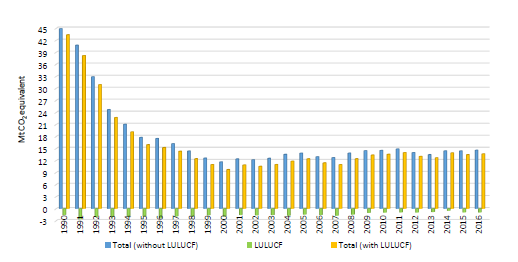
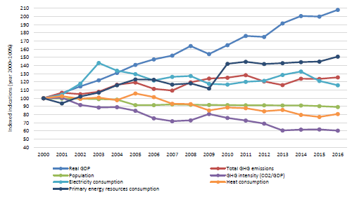
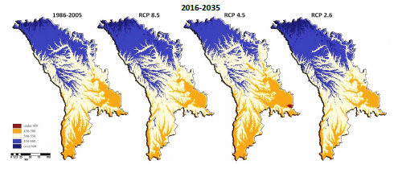
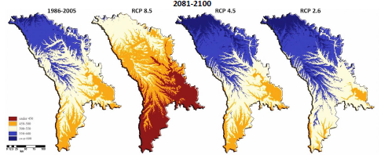
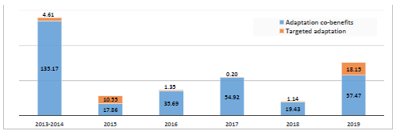
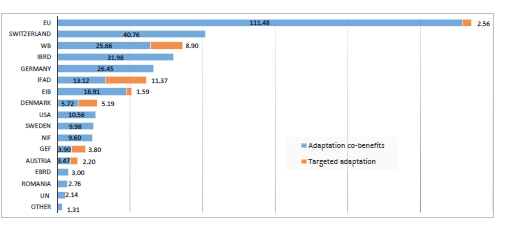
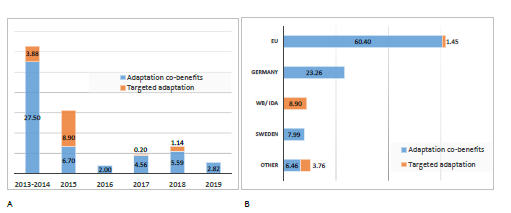

Government of the Republic of Moldova
Updated Nationally Determined Contribution of the Republic of Moldova
The Republic of Moldova is fully committed to the Paris Agreement’s objectives on:
holding the increase in the global average temperature to well below 2°C above pre-industrial levels and pursuing efforts to limit the increase to 1.5 °C; and
increasing the ability to adapt to the adverse impacts of climate change.
In this respect, the country has undertaken the appropriate measures. The cores to these are nationally determined contributions (NDCs). The Republic of Moldova’s INDC (NDC1) was submitted on 25 September 2015. The decision 1/CP.21 requests those Parties whose intended nationally determined contribution pursuant to decision 1/CP.20 contains a time frame up to 2030 to communicate or update by 2020 these contributions and to do so every five years thereafter pursuant to Article 4, paragraph 9, of the Paris Agreement.
The Republic of Moldova hereby communicates its updated Nationally Determined Contribution (NDC2) and the accompanying information to facilitate clarity, transparency, and understanding, with reference to Decision 4/CMA.1.
The Republic of Moldova has included in its updated NDC the adaptation component in line with Articles 2.1 and 7.1 of the Paris Agreement and Katowice Rulebook (COP 24), as an opportunity to communicate country’s strategic vision on climate change adaptation. The adaptation component, as a forward-looking document, incorporates country’s adaptation priorities that derive from the in-force policy documents, such as the Climate Change Adaptation Strategy and the Action Plan for its implementation (2014), as well as from the Fourth National Communication to the UNFCCC (2018), and from a number of national level policy documents covering cross-sectoral socioeconomic areas and sector-specific development documents of the national priority sectors: agriculture, water resources , human health, forestry, energy and transport.
The component is built upon the experience gained from the implementation of the first cycle of the National Adaptation Plan (NAP-1) (2014-2017) that is presented in the document, and from the planning perspectives of the NAP-2 that is to be implemented in two tracks:
National Adaption Plan, covering Water Resources, Human Health, Forestry, Energy and Transport;
Agriculture Sectoral Adaptation Plan (Ag.SAP).
In support to climate action, the adaptation component incorporates cross-sectorial and sector-specific adaptation actions and measures to be implemented, along with identified adaptation investment priorities based on the review of national and sectorial development policies and plans, and the outcomes of an extensive consultation process, including stakeholders from all sectors and levels of governance, in particular, Central Public Authorities and Local Public Authorities, climate-related institutions and agencies, along with private sector, civil society, academia and women associations and youth NGOs representatives.
The Republic of Moldova’s medium- and long-term adaptation goal is to reach a sustainable social and economic development resilient to the impact of climate change by establishing a strong enabling environment for a coherent and effective adaptive action with mitigation benefits, integrating climate risk into investment decision- making and business planning, while remaining socially inclusive and sensitive to gender impacts of climate change.
As such, the whole of the Republic of Moldova’s adaptation framework makes a contribution to the country’s sustainable development priorities embodied in the “National Development Strategy: Moldova 2030” (2019) and to the overarching adaptation goal of the Paris Agreement to enhance adaptive capacity and resilience, to reduce vulnerability, with a view to contributing to sustainable development, and ensuring an adequate adaptation response in the context of the goal of holding average global warming well below 2 degrees C and pursuing efforts to keep it below 1.5 degrees C.
In its updated NDC (NDC2), the Republic of Moldova intends to achieve more ambitious targets than in its NDC1. The country’s new economy-wide unconditional target is to reduce its greenhouse gas emissions by 70 per cent below its 1990 level in 2030, instead of 64-67 per cent as committed in NDC1.
As to the new economy-wide conditional target, instead of 78 per cent as committed in NDC1, the reduction commitment expressed above could be increased in NDC2 up to 88 per cent below 1990 level, provided a global agreement addressing important topics including low-cost financial resources, technology transfer, and technical cooperation, accessible to all at a scale commensurate to the challenge of global climate change, is insured.
Following the decisions 1/CP.21, 4/CMA.1, 9/CMA.1, 18/CMA.1, the following quantifiable information is hereby submitted:
2.1. UP-FRONT INFORMATION ON MITIGATION
| Updated Nationally Determined Contribution of the Republic of Moldova | |
| Quantifiable information on the reference point | |
| Reference indicator |
Base Year: 1990. |
| Type of contribution |
Absolute reduction as compared to base year emissions. |
| Quantifiable information on the reference indicators |
Total Emissions in the Base Year (NDC2): 44.9 Mt (without LULUCF) and 43.4 Mt (with LULUCF). These data will be updated on biennial basis through inventory submissions. Total Emissions in the Base Year (NDC1): 43.4 Mt (without LULUCF) and 37.5 Mt (with LULUCF). The noted difference between NDC1 and NDC2, in the latest, is due to the full transition from Revised 1996 IPCC Guidelines to 2006 IPCC Guidelines, also due to switch from IPCC AR2’s GWP values to the use of GWP values provided in IPCC AR4, based on the effects over a 100-year time-horizon of GHGs, as well as due to undertaken recalculations as result of using higher tier methodologies, revised values of country-specific and default emission factors, actualized time-series of activity data and due to considering into the national GHG inventory new emissions and sinks categories, etc. |
| Target relative to the reference indicator |
Republic of Moldova is committed to an unconditional target of 70 per cent reduction of its net greenhouse gas emissions by 2030 as compared to 1990 levels, instead of 64-67 per cent committed in NDC1. The GHG reduction commitment could be increased up to 88 per cent reduction as compared to 1990 level conditional to the global agreement addressing important issues, including access to low-cost financial resources, technology transfer and technical cooperation commensurate to the challenge of global climate change. In NDC1 this commitment was established at the level of 78 per cent GHG emission reduction. Thus, following the Art. 4.3 of the Paris Agreement, the Republic of Moldova’s NDC2 reflects its highest possible ambition and represents progress beyond commitments made in NDC1. |
| Sources of data used in quantifying the reference point(s) |
National Inventory Report 1990-2016. Chisinau, 20181. |
| Updated Nationally Determined Contribution of the Republic of Moldova | |
|---|---|
| The circumstances under which the Republic of Moldova may update the values of the reference indicators |
Entailing the need of improving the quality of the National GHG Inventory, including by considering the updated activity data, higher tier methodological approaches available in the 2006 IPCC Guidelines, updating country-specific emission factors used, and corrective actions following the implementation of the QA/QC Plan. |
| Time frames and/or periods for implementation | |
| Timeframes |
The time frame of the commitment is from 1st January 2021 to 31st December 2030. Its achievement will be tracked on biennial basis through the Republic of Moldova’s Inventory of Greenhouse Gas Emissions and Sinks, reported as part of BURs (while since 2024 – TBRs) submissions to the Convention. |
| Number of targets |
Single year target established for 2030 |
| Scope and coverage | |
| General description of the target |
The target corresponds to economy-wide absolute reduction as compared to base year emissions. The geographic coverage is the same as shown by the country’s geopolitical boundaries (including ATULBD – the administrative territorial units on the left bank of Dniester river). Republic of Moldova intends to account for 100 per cent of its national GHG emissions and removals for the base year as published in the Republic of Moldova’s Inventory of Greenhouse Gas Emissions and Sinks, on a net-net basis. |
| Sectors, gases, categories and pools |
Gases Covered: all GHGs not controlled by the Montreal Protocol – Carbon Dioxide (CO2), Methane (CH4), Nitrous Oxide (N2O), Hydrofluorocarbons (HFCs), Perfluorocarbons (PFCs), Sulphur Hexafluoride (SF6), Nitrogen Trifluoride (NF3). Sectors Covered: energy; industrial processes and product use (IPPU); agriculture; land use, land-use change and forestry (LULUCF) and waste. Both the categories of anthropogenic emissions and removals, and the sectors considered reflect the coverage of categories and sectors consistent with Intergovernmental Panel on Climate Change (IPCC) Inventory Guidelines. The Republic of Moldova has taken into consideration paragraph 31(c) and (d) of decision 1/CP.21. Carbon Pools: n/a. |
| Mitigation co-benefits from adaptation actions |
The adaptation priorities by sectors and measures were defined as follows: Agriculture: sustainable soil management (conservation, precision, organic agriculture, etc.); promoting efficient irrigation systems; promoting diversity and resilience of agricultural crops; increased food security; promoting integrated food, water, and energy systems in a smart and climate change resilient agriculture. Water Resources: assessment of resources evaluation, increasing supply and efficient management of water demand, taking into account social and gender issues; management of extreme events (floods, droughts); effective water treatment and reuse. Forestry: afforestation/reforestation, promoting the ecosystem approach in adaptation of forests to climate change; promoting agroforestry and silvo-pastoral practices; sustainable management of forests and ecosystem services; organic matter restoration in degraded pastures. Human Health: Improving health services for vulnerable groups of the population; Improving the infrastructure of hospitals for operationalization to “green” |
| Updated Nationally Determined Contribution of the Republic of Moldova | |
|---|---|
|
standards; Prevention, early warning, management and overcoming the impact of extreme weather events (heat and cold waves, floods). Transport: resilient urban infrastructure to reduce exposure to climate risks; increasing climate resilience of transport infrastructure (roads, bridges, viaducts, railways, tracks); adoption of climate resilience codes and standards; access of the rural population to a climate-resilient road system that takes into account social, age and gender issues. Energy: promoting water-energy-land interaction with renewable energy sources; climate protection of the energy system infrastructure; ensure operation of energy infrastructure in any climatic conditions. Inter-Sectorial Priorities: Improving resilience of the Republic Moldova’s communities to adverse climate change effects, taking into account social and gender issues. Most of the adaptation actions specified under agriculture, forestry, transport and energy sectors have a clear impact on mitigation. However, the evaluation of such positive and negative co-benefits is not done because currently the appropriate methodologies are not available. CDM methodologies could be applied, but they are too time consuming and require increased human resources which are scarce in current conditions of the country, while own national methodologies have not been developed yet. However, while it is premature to determine mitigation co-benefits from adaptation actions for projection purposes, the country is reporting and will continue to report data and information on quantified co-benefits of adaptation actions in its NCs and BURs, in compliance with Government Decision (GD) No. 1277 as of 26.12.2018 on setting-up and functioning of the National System for Monitoring and Reporting (NSMR) GHG Emissions and Other Information Relevant to Climate Change, thus respecting transparency requirements and the requirement on preventing double counting of GHG emissions. |
|
| Planning processes | |
| General information on the planning processes |
NDC2 was developed based on the analytical basis used for developing the BUR2 of the Republic of Moldova to the UNFCCC (2019) and it reflects the outcomes of mitigation measures of respective report, which were widely discussed with all national stakeholders (central and local authorities, academic institutions, NGOs, private sector, etc.) during the 2017-2018 period. In January 2020, the draft NDC2 was subjected to additional consultations and it was accepted in the version which incorporated suggestions received from the central and local governmental authorities and the civil society in a gender-responsive manner. National Circumstances: Land Area – 33,846 km2; Population (with ATULBD) - 3.146 million (2019), of them rural residents represents 55 per cent and urban residents 45 per cent; women represent 52.7 and men 47.3 per cent; Geography – the country is located in central part of Europe in the northeastern Balkans, between Romania and Ukraine; Climate - temperate continental, characterized by relatively mild winters and little snow, with long, warm summers and low humidity; the average annual air temperature varies within 8 to 10°C across the country; the maximum temperature is 42°C and the minimum temperature reaches -35°C; the probability of winds with speeds above 10 m/s is 6-10 per cent; the warm period comprises about 190 days; Key Climate Risks - droughts and floods, increasing annual average temperature, uneven rainfall distribution; Vulnerable Sectors - agriculture, human health, water resources, forestry, transport and energy; GHG Emissions Profile - 3.8 t CO2 equivalent / capita (2016); the share of the Republic of Moldova’s GHG emissions in total global emissions is 0.026 per cent; Key Emitter |
|
Updated Nationally Determined Contribution of the Republic of Moldova |
|
|---|---|
|
Sectors - energy – 68.1 per cent of the total national GHG emissions, including 31.0 per cent – energy industries and 16.3 per cent - transport; agriculture – 16.7 per cent; waste – 10.0 per cent; Economy – GDP per capita: US$ 7,703 (PPP, 2019) and US$ 3,300 (nominal, 2019); the average annual economic growth in the most recent years was 4.5 per cent; within global competitiveness ranking, the Republic of Moldova ranked 89 out of 137 countries in 2017-2018, lower than most countries in the region and CIS countries; Poverty Headcount Ratio at National Poverty Lines (% of population) – 9.6 per cent (2015); Gender – on the average women are still earning 12 per cent less than men; the largest gender pay gap was recorded in the following sectors: information & communication (-23 per cent), industry (-18.3 per cent), art, recreation & leisure (-15.1 per cent); the national legal framework on equality between women and men is in line with international gender standards; National Designated Authority – Ministry of Agriculture, Regional Development and Environment. Best practices and experience in NDC development:
|
|
|
Regional economic integration |
The Republic of Moldova has signed the Association Agreement with the European Union in 2014, whereby the country has also committed to aligning its climate change policies to the EU ones. The agreement comprises binding provisions, regulatory documents and wider cooperation arrangements in all sectors of concern, including those related to GHG emissions reduction and adaptation to climate change. The cooperation is governed by the Action Plans, the last approved Action Plan being for 2016-2019 years. |
| Updated Nationally Determined Contribution of the Republic of Moldova | |
|---|---|
|
In 2010, a Protocol was signed regarding the accession by the Republic of Moldova to the Energy Community Treaty (ECT), which allows the country to be an active member of the Regional and European Energy Market, obliging the state to align its national energy related legislation with the community acquis. The key priority for 2019 was the adoption of 2030 goals in the area of renewable energy, energy efficiency and reducing greenhouse gas emissions in the ECT by transposing the recent EU clean energy package for its members. The Republic of Moldova participates in the Danube Transnational Program, the Program having as main objective to promote innovation and entrepreneurship, to preserve the natural and cultural heritage of the Danube region, to improve connectivity and to support the transition to a low-carbon economy. |
|
| The outcomes of the global stocktake |
According to Article 14.2 of the Paris Agreement, the Conference serving as the Meeting of the Parties to the Agreement (CMA) shall undertake its first global stocktake in 2023 and every 5 years thereafter unless otherwise decided by the CMA. It is expected, the reduction commitments of the updated NDC of the Republic of Moldova will be considered in the Global Stocktake Report to be published in 2023. |
| Assumptions and methodological approaches, including those for estimating and accounting for anthropogenic greenhouse gas emissions and, as appropriate, removals | |
| Key assumptions and methodological approaches |
Metrics applied: Republic of Moldova intends to use the IPCC Fifth Assessment Report (AR5) Global Warming Potential (GWP) 100-year values to calculate and report its CO2 equivalent totals. The Republic of Moldova will take into account future updates to GWP values by IPCC. Methodologies for estimating emissions: 2006 IPCC Guidelines. Approach to accounting for agriculture, forestry and other land use: Republic of Moldova intends to include all categories of GHG emissions by sources and removals by sinks, and all pools and gases, as reported in the National Inventory of GHG Emissions and Sinks; to account for the land sector using a net-net approach; and to use a “production approach” to account for harvested wood products, which is consistent with IPCC guidelines. Republic of Moldova may also exclude emissions from natural disturbances, as consistent with available IPCC guidance. There are material data collection and methodological challenges in estimating emissions and removals in the land sector. In compliance with 2006 IPCC Guidelines, Republic of Moldova will continue to improve its LULUCF sector GHG reporting, which will involve an update of its methodologies. Contribution of international mechanisms: Republic of Moldova may use bilateral, regional and international market mechanisms to achieve its conditional 2030 target, subject to employing robust systems that deliver real and verified emissions reductions. However, according to EU 2016 evaluation report on the implementation of the EU-RM Association Agreement the implementation of the EU emissions trading scheme in RM will only be possible when the date of RM's accession to the EU is determined. The unconditional NDC2 commitment will be met through domestic actions, although they would need assistance in costeffective implementation. In order to prevent double counting of GHG emissions, an appropriate robust national MRV system was put in place in 2019 through the GD No. 1277 as of 26.12.2018. It covers GHG emissions counting from international bunkers and CDM projects as well, while delivering real and verified emission reduction. |
| Accounting for anthropogenic |
In accounting for anthropogenic greenhouse gas emissions and removals considered in NDC2, the recommendations of the Ad Hoc Working Group pursuant |
|
Updated Nationally Determined Contribution of the Republic of Moldova |
|
|---|---|
|
greenhouse gas emissions and removals |
to decision 1/CP.21, paragraph 31, will be used as soon as they are officially published. However, if such recommendations will be considered ex-post the year of NDC target and, taking into consideration that RM’s NDC2 targets relate to 2030, while in five years an updated NDC should be considered, the specified recommendations may not be applicable to RM’s NDC2. Until then, 2006 IPCC Guidelines will be applied for accounting anthropogenic GHG emissions and removals. |
|
Accounting for the implementation of policies and measures or strategies |
The NDC2 sets economy-wide absolute emission reduction targets by year 2030 as compared to 1990, but not objectives per specific policies, measures or strategies. However, the Republic of Moldova is reporting in its NCs and BURs the measures included in the appropriate pipeline to reach country’s NDCs. The description of measures comprises the status of their implementation as well. Thus, this information may serve as a source for tracking implementation of the measures. |
|
How Republic of Moldova believes that its updated Nationally Determined Contribution is fair and ambitious in view of its national circumstances |
|
|
Fair and ambitious |
Following the Talanoa Call for Action2, launched by the Presidents of COP 23 and COP 24, the Republic of Moldova made its NDC2 more ambitious than NDC1, and stated the target to reduce its GHG emissions by 70 per cent below its 1990 level by 2030 under the unconditional scenario, instead of 64-67 per cent, thus showing its alignment to the “ratchet up mechanism” of the Paris Agreement. Another issue that proves country’s NDC2 ambitions refers to the application of an economy-wide absolute emission reduction target (in compliance with Article 4.4 of Paris Agreement), which ensures reaching the objectives in a relevant, complete, consistent, transparent, and accurate manner. National commitments are well in line with the emissions pathways towards 2050 that correspond to keeping global warming below 2oC as compared to pre-industrial levels. It is worthwhile to note that considerations of fairness in the national perspective include a variety of issues and no separate indicator on its own can accurately reflect fairness or a globally equitable distribution of countries’ efforts. It is further important to note that the evolving nature of a country’s circumstances is to be reflected in the consideration of fairness:
Republic of Moldova’s responsibility in terms of GHG emissions is low. In 2016, Republic of Moldova emitted 14.6 Mt (without LULUCF) and 13.7 Mt (with LULUCF), which is less than 0.026 per cent of current world’s emissions. In 2016, the total and net per capita emissions were almost 50 per cent lower than the world’s average (3.8 t CO2 equivalent per capita to be compared to 6.8 t CO2 equivalent per capita, respectively 3.6 t CO2 equivalent per capita to be compared to 7.4 t CO2 equivalent per capita). Also, the Republic of Moldova has a low level of historic emissions, of about 0.05 per cent (without LULUCF) and/or of about 0.04 per cent (with LULUCF) of the worlds’ emissions, since 1990.
The GHG intensity (“CO2 emissions per GDP”) indices have considerably decreased over the 1990-2016 period in the Republic of Moldova, from 4.43 to 1.99 kg CO2 per real GDP 2010 US$ (without LULUCF), or by 55.1 per cent; and, from 4.28 to 1.86 kg CO2 per real GDP 2010 US$ (with LULUCF), or by 56.5 per cent, respectively. These values are still among the highest among transition economies from the Central and Eastern Europe and reveal a high mitigation potential of the Republic of Moldova to reach its GHG emission reduction targets. But, in order to reach the conditional target of up to 88 per cent reduction of its GHG emissions by 2030 as compared to 1990 levels, appropriate international financial support equal to about US$ 5 billion, i.e. about US$ 500 million per year until 2030, is needed; the support needed will be in addition to the domestic allocations to cover the required abatement costs. This support will allow adjusting the development pathway of the Republic of Moldova towards a low-carbon economy, thus moving towards progressive decoupling of carbon emissions from economic growth and ensuring a decent level of real GDP per capita, equaling 4,072 US$/capita in 2030, which will still be approximately one-tenth of EU 28 average, projected to be US$ 43,244/capita4 in 2030. As stated above, along with the international financial support for covering abatement costs, the country will also need assistance in the form of technology transfer and capacity building. |
|
How the Nationally Determined Contribution contributes towards achieving the objective of the Convention as set out in its Article 2 |
|
|
Contribution towards achieving the objective of the Convention as set out in its Article 2 |
Republic of Moldova commits to reduce its net GHG emissions under the unconditional scenario, from 43.4 Mt in 1990 to 12.8 Mt in 2030, i.e. 3.4 times less during a 40 year timespan, thus contributing to stabilization of GHG concentrations in the atmosphere at a level that would prevent dangerous anthropogenic interference with the climate system, and ensuring that country’s food production is not threatened and enabling economic development in a sustainable manner. |
|
Contribution towards Article 4, paragraph 1, of the Paris Agreement. |
Over the period 2000-2010, the Republic of Moldova recorded on the average an increase in GHG emissions of about 3.4 per cent/year, while during the 2010-2016 period – only 0.12 per cent/year, to account for GDP per capita growth of 6.1 per cent/year over the same period, which clear proves moving trend towards progressive decoupling of carbon emissions from economic growth and the country’s intention to reach the decarburization of its economy as soon as possible and in a sustainable development manner, in accordance with the best available science, so as to achieve at the global level a balance between anthropogenic GHG emissions by sources and removals by sinks in the second half of this century, on the basis of equity, and in the context of sustainable development and efforts to eradicate poverty, which was calculated to be 9 per cent in 2015, while the subjective perception of this indicator by the population was 37 per cent5. |
|
The country’s emissions reduction targets by mid-century will be established in the 2050 Low Emission Development Strategy, which is to be developed by November 2022, according to the Governmental Action Plan for 2020-2023 periods, approved through the GD No. 636 as of 11.12.2019. |
2.2. CLARIFYING INFORMATION ON MITIGATION ASPECTS IN THE REPUBLIC OF MOLDOVA
The Republic of Moldova’s share in global GHG emissions is less than 0.026 per cent. In 2016, total and net GHG emissions of the Republic of Moldova equaled 13.7 Mt (with LULUCF) and 14.6 Mt CO2 eq. (without LULUCF) (see Table 2.2-1) and total and net per capita emissions were almost half of the world’s average (3.6 t CO2 eq. /capita vs 7.4 t CO2 eq. /capita, and 3.8 t CO2 eq. /capita vs 6.8 t CO2 eq. /capita, respectively).
Table 2.2-1: Greenhouse Gas Emissions and Sinks Trends within 1990-2016 period, Mt CO2 equivalent
| 1990 | 1995 | 2000 | 2005 | 2010 | 2015 | 2016 | |
|---|---|---|---|---|---|---|---|
| 1. Energy | 36.611 | 12.157 | 7.289 | 9.249 | 10.195 | 10.064 | 9.927 |
| 2. IPPU | 1.572 | 0.451 | 0.314 | 0.592 | 0.592 | 0.784 | 0.762 |
| 4. Agriculture | 5.221 | 3.603 | 2.481 | 2.578 | 2.255 | 2.091 | 2.428 |
| 5. LULUCF | -1.528 | -1.869 | -1.881 | -1.411 | -0.962 | -0.902 | -0.920 |
| 6. Waste | 1.515 | 1.595 | 1.542 | 1.429 | 1.483 | 1.431 | 1.460 |
| Total (without LULUCF) | 44.919 | 17.806 | 11.626 | 13.848 | 14.526 | 14.370 | 14.578 |
| Net (with LULUCF) | 43.391 | 15.937 | 9.745 | 12.437 | 13.564 | 13.468 | 13.658 |
In 2016, about 72.7 per cent of the national net direct GHG emissions originated from the Energy Sector. Other relevant direct GHG sources were represented by Agriculture Sector (17.8 per cent of the total), Waste Sector (10.7 per cent of the total) and IPPU Sector (5.6 per cent of the total). The share of Land Use, Land-Use Change and Forestry Sector was -6.7 per cent (see Figure 2.2-1).
Figure 2.2-1: Breakdown of the Republic of Moldova’s Net GHG Emissions by Sectors in 2016.
In comparison with the 1990-year levels, by 2016 the Republic of Moldova's GHG total and net emissions were 67.5 per cent, respectively 68.5 per cent below (see Figure 2.2-2).

Figure 2.2-2: Trends of Greenhouse Gas Emissions and Sinks within 1990-2016 period, Mt CO2 equivalent.
From Table 2.2-2, it is obvious that this reduction in GHG emissions over the last 27 years is in full consistency with a decrease in some important socio-economic indicators: population number decreased by 11.9 per cent, the GDP – by 27.7 per cent, the GHG intensity (CO2eq/GDP) – by 55.1 per cent, the electricity consumption – by 54.3 per cent, the heat consumption – by 82.7 per cent, while the consumption of primary energy resources decreased by 73.5 per cent.
Table 2.2-2: Republic of Moldova’s Total GHG Emissions and Associated Variables, 1990-2016
| 1990 | 1995 | 2000 | 2005 | 2010 | 2015 | 2016 | |
|---|---|---|---|---|---|---|---|
| Population, million inhabitants | 4.362 | 4.348 | 4.304 | 3.940 | 3.938 | 3.885 | 3.844 |
| Compared to 1990, % | -0.3 | -1.3 | -9.7 | -9.7 | -10.9 | -11.9 | |
| Inter-annual fluctuation, % | -0.1 | -0.3 | -6.9 | -0.2 | -0.9 | -1.1 | |
| Total GHG emissions, Mt CO2 eq. | 44.919 | 17.806 | 11.626 | 13.848 | 14.526 | 14.370 | 14.578 |
| Compared to 1990, % | -60.4 | -74.1 | -69.2 | -67.7 | -68.0 | -67.5 | |
| Inter-annual fluctuation, % | -15.4 | -7.7 | 2.3 | 0.7 | -0.1 | 1.4 | |
| GHG per capita, tons per capita | 10.299 | 4.095 | 2.701 | 3.514 | 3.688 | 3.699 | 3.793 |
| Compared to 1990, % | -60.2 | -73.8 | -65.9 | -64.2 | -64.1 | -63.2 | |
| Inter-annual fluctuation, % | -15.3 | -7.4 | 9.8 | 0.9 | 0.8 | 2.5 | |
| GDP, billion 2010 US $ | 10.133 | 3.995 | 3.524 | 4.961 | 5.812 | 7.038 | 7.327 |
| Compared to 1990, % | -60.6 | -65.2 | -51.0 | -42.6 | -30.5 | -27.7 | |
| Inter-annual fluctuation, % | -1.4 | 2.1 | 7.5 | 7.1 | -0.4 | 4.1 | |
| GHG intensity, kg CO2 eq./2010 US $ | 4.433 | 4.457 | 3.299 | 2.791 | 2.499 | 2.042 | 1.990 |
| Compared to 1990, % | 0.6 | -25.6 | -37.0 | -43.6 | -53.9 | -55.1 | |
| Inter-annual fluctuation, % | -14.2 | -9.6 | -4.9 | -6.0 | 0.3 | -2.6 | |
| Imported energy, million t.c.e. | 16.703 | 5.109 | 2.535 | 3.123 | 2.590 | 2.522 | 2.597 |
| Compared to 1990, % | -69.4 | -84.8 | -81.3 | -84.5 | -84.9 | -84.5 | |
| Inter-annual fluctuation, % | 11.0 | -18.0 | 4.2 | -8.2 | -2.1 | 3.0 | |
| Consumed energy, million t.c.e. | 14.269 | 5.085 | 2.647 | 3.257 | 3.341 | 3.504 | 3.673 |
| Compared to 1990, % | -64.4 | -81.4 | -77.2 | -76.6 | -75.4 | -74.3 | |
| Inter-annual fluctuation, % | 9.7 | -20.2 | 6.3 | 12.9 | 2.0 | 4.8 | |
| Produced electricity, billion kWh | 15.690 | 6.168 | 3.624 | 4.225 | 6.115 | 6.050 | 5.852 |
| Compared to 1990, % | -60.7 | -76.9 | -73.1 | -61.0 | -61.4 | -62.7 | |
| Inter-annual fluctuation, % | -25.8 | -11.8 | 1.1 | -1.3 | 12.5 | -3.3 | |
| Consumed electricity, billion kWh | 11.426 | 7.022 | 4.510 | 5.838 | 5.257 | 5.455 | 5.227 |
| Compared to 1990, % | -38.5 | -60.5 | -48.9 | -54.0 | -52.3 | -54.3 | |
| Inter-annual fluctuation, % | -3.9 | -4.4 | -3.1 | -0.9 | -8.7 | -4.2 | |
| Produced heat, million Gcal | 22.212 | 9.827 | 4.986 | 5.324 | 4.600 | 3.979 | 4.125 |
| Compared to 1990, % | -55.8 | -77.6 | -76.0 | -79.3 | -82.1 | -81.4 | |
| Inter-annual fluctuation, % | 30.9 | -26.0 | 8.2 | 5.4 | -2.1 | 3.7 | |
| Consumed heat, million Gcal | 20.983 | 8.796 | 4.501 | 4.765 | 3.988 | 3.473 | 3.628 |
| Compared to 1990, % | -58.1 | -78.5 | -77.3 | -81.0 | -83.4 | -82.7 | |
| Inter-annual fluctuation, % | 32.1 | -23.6 | 8.4 | 4.1 | -3.1 | 4.5 |
The significant reduction in the level of socio-economic indicators over the 1990-2016 period is a consequence of the deep transformation processes common during the transition from a centralized economy to a market economy, specifically after the breakup of the Soviet Union and the declaration of the Republic of Moldova’s independence on 27th of August 1991.
The country rated among the low-medium income countries in 1990, and currently it is one of the lowest income nations in Europe. Certain economic decline patterns had been registered prior to 1991, but the separation from the USSR has considerably accelerated the process.
The GDP level was decreasing continuously over the period 1990 to 2000 inclusively, when it fell down to as low as 65 per cent of the 1990 level. The reasons for the economic collapse were numerous. First, the country had been fully integrated in the USSR economic system, and the independence resulted, among other things, in the cessation of any subsidies or cash transfers from the centralized government. Second, the end of the Soviet Era with its well established commercial links has resulted in the emergence of numerous obstacles for free movement of goods, and in access restrictions introduced by the emerging markets. Third, the lack of domestic energy resources and raw materials in the country has contributed considerably to the nation’s strong dependence on other former Soviet Republics.
This dependence has affected consumers’ capacity to pay for the energy used due to the increased prices of energy resources (ex., from 1997 to 2014 the natural gas tariff increased 13.0 times; electricity tariff increased 6.6 times; gasoline, diesel and liquefied gases prices increased 1.9 times), in the condition when about 95% of energy resources were imported. On the other hand, without applying cross subsidizations policies, the current energy prices have incentivized the population to take strong energy efficiency measures in the Republic of Moldova, which led to a significant decrease of the energy intensity, declining since 2000 with an average annual negative growth of 4.5 per cent.
In addition, over the 2000-2016 period, the real GDP increased by 107.9 per cent, from 3.524 to 7.327 billion 2010 US$, while the real GDP per capita increased by 132.8 per cent, from 818.8 to 1,906.1 2010 US$. The considerable real GDP growth achieved since 2000 seems to indicate that the economy is finally developing in the right direction, although it should be noted that in 2016 the real GDP reached only 72.3 per cent of the 1990-year level. It is worth mentioning that from 2000 to 2016, the electricity consumption increased in the Republic of Moldova by 15.9 per cent; the heat consumption decreased by 19.4 per cent, the consumption of primary energy resources increased by 50.7 per cent; while the GHG intensity (CO2 eq/GDP) decreased during the same period by 39.7 per cent, showing the first signs of decoupling of economic growth from the growth in greenhouse gas emissions, by 25.4 per cent over the 2000-2016 period (see Figure 2.2-3).

Figure 2.2-3: Trends in total GHG emissions and associated variables in the Republic of Moldova over the 20002016 period.
Mitigation Policy Framework
In 2015, the Republic of Moldova submitted its INDC (NDC1). On 24 March 2017 the country’s Low Emission Development Strategy until 2030 and the Action Plan for its implementation, approved through the GD No. 1470 as of 30.12.2016, entered into force, aiming to reach the NDC1 targets. The Paris Agreement was ratified by the Law No. 78 as of 04.05.2017.
In order to implement NDC2, it is necessary to update the LEDS by the end of the 2020 year. Concomitantly, the 2050 Low Emission Development Strategy will be developed by November 2022 according to the Governmental Action Plan for 2020-2023 years, approved through the GD No. 636 as of 11.12.2019. It will be focused specifically on outlining the policies for accelerating reducing GHG emissions by mid-century, as stipulated by Article 4.1 of the Paris Agreement.
NDC2 is based on national development priorities oriented towards reaching Sustainable Development Goals expressed in the draft National Development Strategy “Moldova 2030” planned to be approved during 2020.
In September 2015, the Republic of Moldova, together with another 192 UN member states, pledged to implement the Sustainable Development Agenda 2030 by adopting the Statement on Sustainable Development at the Summit held in New York.
Thus, the Republic of Moldova stays committed to and striving for an ambitious international agreement on climate change in line with recommendations by science to maintain the average global temperature increase below two degrees Celsius.
3.1. CLIMATE CHANGE ADAPTATION STRATEGIC VISION AND GOAL, SUPPORTING INSTITUTIONAL ARRANGEMENTS AND POLICY FRAMEWORK
3.1.1 INSTITUTIONAL ARRANGEMENTS, GOVERNANCE AND LEGAL FRAMEWORK
In the Republic of Moldova, climate change adaptation (CCA) planning and implementation is a shared responsibility and requires involvement by line Ministries of the Government, their subordinated agencies, Local Public Authorities, private sector, civil society. However, the nature of involvement varies across these stakeholders.
The Ministry of Agriculture, Regional Development and Environment (MARDE) of the Republic of Moldova is the state authority vested with the power to develop and promote policies and strategies addressing climate change, environmental protection, rational use of natural resources and biodiversity conservation; to identify priorities; to develop and promote national programs and action plans which address such priorities; coordinate relevant actions and monitor their implementation in the best way; to promote the state policy and determine the priority directions of climate change and environmental research and development; to ensure international collaboration in climate change and environmental protection; to collect, systematize and manage own information database in support to own activities; to ensure maintenance and optimization of the sector information system, other environment and climate-related responsibilities.
On behalf of the Government of the Republic of Moldova, the MARDE is responsible for implementation of international climate change and environment related treaties to which the Republic of Moldova is a Party (including the United Nations Framework Convention on Climate Change, signed by the Republic of Moldova on June 12, 1992, ratified by the Parliament on March 16, 1995, as well as the Kyoto Protocol, ratified by the Republic of Moldova on February 13, 2003, the official date of accession being April 22, 2003).
The National Climate Change Commission (NCCC) will chair the Climate Change Coordination Mechanism (CCCM) in cross-sectorial coordination of all climate-related components: adaptation, GHG emissions and mitigation and is to be operationalized through a dedicated Government Decision. The purpose of the multistakeholder CCCM is to foster the dialogue, coordination, collaboration and coherence among sectors, leverage and oversight the reporting on climate change planning and actions by all stakeholders. The established multi-stakeholder partnership is foreseen to contribute to a common understanding in climate planning, improved rationality and effectiveness of policymaking, to facilitate the implementation of climate action, to have contribution to the sustainability of climate governance. Cross-sectorial coordination will enhance also the transparency in the implementation of prioritized adaptation measures.
The NCCC is seen as a permanent formalized body with the highest representation of key stakeholders: sectorial ministries, NGOs, academia, research, private sector, taking into consideration gender dimension through including representatives of women’s associations and considering gender equality and social inclusion in all supervising activities of NCCC. Such organizational structure of NCCC comprises actors of horizontal, inter-sectorial planning and of vertical integration, with the representation of bellow sectorial/ national level, thus ensuring a multi-level framework with interactions between government and civil society representatives. The NCCC will have a Secretariat as a technical executive body.
At the sector level, the NCCC is supported by the sectorial administration in charge of the development of sector-specific climate change enabling environment and reporting on climate action, establishing working groups or nominate focal points. Technical Committees on specific thematic areas will be established ad-hoc when the need in advanced thematic expertise will be required, in particular during the consideration of donor project proposals. Such need will be met by the recruitment of mitigation or adaptation experts. The Commission will coordinate also previously initiated actions, which have not been completed under the Kyoto Protocol. Through the proposed structure of the CCCM, the Republic of Moldova overcomes the issue of limited integration and connectivity between levels, which is an impediment to the effective decision-making process in adaptation and mitigation. A dedicated Government Decision (under approval) will enact the Climate Change Coordination Mechanism.
The Climate Change Adaptation Strategy of the Republic of Moldova and its implementation Action Plan (CCAS, 2014)6, provides for an integrated vision of the Republic of Moldova's development opportunities and the ability to respond in a resilient way to the impact of climate change. The objectives of the CCAS are oriented towards increasing the country’s capacity to adapt and respond to actual or potential climate change effects and it is underpinned by an in-depth study of future climate risks and their impacts on vulnerable sectors. The CCAS and its implementation Action Plan7 serve as an umbrella strategy that creates an enabling environment for Central and Local Public Authorities to integrate CCA and risk management into existing and future strategies through a range of sectorial and local actions. The sectorial approach in climate change adaptation in the Republic of Moldova is prevailing at the current stage of the country's development, while cross-sectorial and sub-national approaches are becoming increasingly important. Some sectors are already implementing adaptation actions, while others need more support in adaptation planning and implementation.
While the objectives stated in the CCAS are still valid, the associated Action Plan covers the timeframe 20142020. For this reason, new adaptation planning, implementation and investment priorities identified through a wide stakeholder consultation process associated within a number of recent events (development of Fourth National Communication to UNFCCC, second cycle of NAP, Country Programme for the engagement with GCF) are incorporated into the current, updated vision on climate change adaptation, validated during a participatory process entailing climate-relevant stakeholders.
The Republic of Moldova’s climate change adaptation vision incorporates the concept of integrating climate adaptation into medium- and long-term development planning to foster adaptation action, enhancing climate risks into investment decision- making and business planning with the aim of increasing the resilience of economic sectors, land use and ecosystems and accelerating country’s transition towards low carbon and resilient development.
A further advance in medium- and long-term adaptation planning in a coherent and strategic manner is seen through an iterative socially inclusive and gender-sensitive National Adaptation Planning (NAP) process. This commitment is to be reinforced via the approval of the above-mentioned dedicated Government Decision (2020), which will also institutionalize the coordination and oversight of both adaptation planning and implementation through the cross-sectorial multi-stakeholder Climate Change Coordination Mechanism chaired by the NCCC. As such, the NAP process is seen as a practical approach to vertical and horizontal decision-making, which also facilitates the integration of top-down assessments of climatic risks with bottomup planning of adaptation needs, options and priorities.
Through the NAP process components, the Republic of Moldova establishes an evidence-based framework that makes adaptation planning socially inclusive, gender-responsive and flexible process, while also supporting priority adaptation actions in the most climate-vulnerable sectors and areas.
The sectorial approach in climate change adaptation planning of the Republic of Moldova derives from the CCAS that sets out the priority sectors of adaptation and promotes actions to reduce climate impact through strengthened institutional capacities at national, sectorial and local levels, improved knowledge management, convergent approach in climate change adaptation and disaster risks reduction. Therefore, the NAP process promotes gradual mainstreaming of adaptation into planning, budgeting and decision-making of Agriculture, Human Health, Water Resources, Forestry, Energy and Transport sectors. Although the technical and financial requirements to build climate change resilience across economic sectors are still being assessed, it is already clear, that it will require significant effort and mobilization of innovative solutions, financial resources, institutional capacity and political will for effective adaptation action.
The Republic of Moldova’s climate change adaptation approach incorporates also the aspects of most vulnerable socio-economic and natural systems, population groups, urban and rural communities, in which critical issues are found and which require a coherent and wide response to climate risks and vulnerabilities through transformative adaptation interventions. The NCCC is to provide effective leadership needed for transformative changes with consideration of the critical role of sub-national authorities and local organizations in these changes.
In support of climate action, the Government of the Republic of Moldova strives to create an effective enabling environment for attracting climate investments in adaptation priority areas. Technologically innovative solutions, new business models are expected to be deployed by international donors, investors and the country’s private sector in resilient infrastructure and nature-based solutions.
To facilitate this process, adaptation investment priorities were identified based on the review of national and sectorial development policies and plans, along with the results of an extensive consultation process ensured by a wide representation of stakeholders across sectors and levels of governance, in particular, CPAs, LPAs, private sector, civil society, academia and women associations representatives that accounted for different types of knowledge in the area of climate change adaptation. The current list of adaptation investment areas is the outcome of Republic of Moldova Country Programme for the engagement with GCF carried out in a country-driven participative modality, ensuring transparency of each step of the appraisal process. The list of adaptation investment priorities will be updated as needed, but not less than once per year, within a stakeholder participatory process, using relevant prioritization approaches.
Based on the above-stated vision, the Republic of Moldova’s medium- and long-term adaptation goal is to reach a sustainable social and economic development resilient to the impact of climate change by establishing a strong enabling environment for a coherent and effective adaptive action with mitigation benefits, integrating climate risk into investment decision- making and business planning, while remaining socially inclusive and sensitive to gender impacts of climate change.
As such, the whole of the Republic of Moldova’s adaptation framework makes a contribution to the country’s sustainable development priorities embodied in the “National Development Strategy: Moldova 2030” and to the overarching adaptation goal of the Paris Agreement to enhance adaptive capacity and resilience, to reduce vulnerability, with a view to contributing to sustainable development, and ensuring an adequate adaptation response in the context of the goal of holding average global warming well below 2 degrees C and pursuing efforts to keep it below 1.5 degrees C.
The model simulations for precipitation and temperature used in developing climate scenarios stem from 21 of the global coupled atmosphere-ocean general circulation models (AOGCMs) made available by the WCRP Coupled Model Intercomparison Project – Phase 5 (CMIP5) [the CMIP5 multi-model ensemble
[archive/output/results/of simulations/dataset/]8 (Table 3.2-1).
Table 3.2-1: The CMIP5 GCMs used for each of the historical and RCP scenario experiments
|
Modelling Centre (or Group) |
Institute ID |
Model Name |
|---|---|---|
|
Beijing Climate Centre, China Meteorological Administration |
BCC | BCC-CSM1.1 BCC-CSM1.1(m) |
|
College of Global Change and Earth System Science, Beijing Normal University |
GCESS | BNU-ESM |
|
Canadian Centre for Climate Modelling and Analysis |
CCCMA | CanESM2 |
|
National Centre for Atmospheric Research |
NCAR | CCSM4 |
|
Community Earth System Model Contributors |
NSF-DOENCAR | CESM1(CAM5) |
|
Centre National de Recherches Météorologiques / Centre Européen de Recherche et Formation Avancée en Calcul Scientifique |
CNRM-CERFACS | CNRM-CM5 |
|
Commonwealth Scientific and Industrial Research Organization in collaboration with Queensland Climate Change Centre of Excellence |
CSIRO-QCCCE | CSIRO-Mk3.6.0 |
|
EC-EARTH consortium |
EC-EARTH | EC-EARTH |
|
NOAA Geophysical Fluid Dynamics Laboratory GFDL-ESM2G |
NOAA | GFDL-CM2G |
|
NASA Goddard Institute for Space Studies |
NASA | GISS-E2-H GISS-E2-R |
|
National Institute of Meteorological Research/Korea Meteorological Administration |
NIMR/KMA | HadGEM2-AO |
|
Met Office Hadley Centre (additional HadGEM2-ES realizations contributed by Instituto Nacional de Pesquisas Espaciais) |
MOHC (additional realizations by INPE) | HadGEM2-ES |
|
Institute Pierre-Simon Laplace |
IPSL | IPSL-CM5A-LR IPSL-CM5A-MR |
|
Modelling Centre (or Group) |
Institute ID |
Model Name |
|
Atmosphere and Ocean Research Institute (The University of Tokyo), National Institute for Environmental Studies, and Japan Agency for Marine-Earth Science and Technology |
MIROC | MIROC5 |
|
Max Planck Institute for Meteorology |
MPI-M | MPI-ESM-LR MPI-ESM-MR |
|
Meteorological Research Institute |
MRI | MRI-CGCM3 |
|
Norwegian Climate Centre |
NCC | NorESM1-M |
Note: We acknowledge the World Climate Research Programme's Working Group on Coupled Modelling, which is responsible for CMIP, and we thank the climate modelling groups for producing and making available their model output. For CMIP the U.S. Department of Energy's Program for Climate Model Diagnosis and Intercomparison provides coordination support and led the development of software infrastructure in partnership with the Global Organization for Earth System Science Portals.
The three Representative Concentration Pathways (RCPs) project similar temperature in the near-term decades +0.9 - 1.1°C over the Republic of Moldova (RM) geographical territory. Only starting around 2050s the three emissions scenarios produce temperature patterns distinguishable from each other. This is due to both the big inertia of the climate system, and also due to the time taken for the full climate effects of greenhouse gas emissions to be observed, along with the different emission scenarios to produce large differences in greenhouse gas concentrations.
Annual changes for temperatures are very homogeneous over the RM’s Agro-Ecologic Zones (AEZs). By the 2080s, the rate of warming is higher under the RCP8.5, on the average it reaches +4.6°C; medium under the RCP4.5, +2.4°C, and smaller under the RCP2.6 scenarios, ensembles average would be +1.3°C (Figure 3.2-1).
All used GCM models agree that for the three future periods (2016–2035, 2046–2065 and 2081–2100) an increase of the winter temperature is expected, as compared to the 1986–2005 baseline period. The warming would be higher during winter up to +4.6°C over Northern AEZ, but in Central and Southern AEZ's temperature rise will be lower up to +4.2°C according to the RCP8.5. The RCP2.6 reveals less intense warming over the RM’s AEZs from +1.2 to +1.4°C. The corresponding results from the RCP4.5 scenario show medium intense differences in temperature increase. Estimates of simulations from the RCP4.5 scenario show that the warming will be quite uniform +2.5-2.6°C by the 2081-2100 throughout all AEZs.


Figure 3.2-1: Projected CMIP5 21 GCMs ensemble annual mean air temperature, °C development throughout the Republic of Moldova.
The summer warming is found to be even higher than the winter one, however, the spatial distribution of the changes is quite different. The strongest temperature rise occurs over Southern and Central AEZs. The ensemble, driven by RCP8.5, estimates that the RM AEZs will experience the most significant warming during summer, from +5.9 in Northern AEZ up to +6.1°C over Southern AEZ by 2100. The pattern of change derived from the RCP2.6 scenario is quite similar, but the magnitude of change is lower, from +1.3 to +1.5°C. The corresponding results from the RCP4.5 show medium intensity differences in temperature increase. Estimates of simulations from the RCP4.5 ensembles show that the warming will be quite uniform, +2.9°C, by the 20812100 over the all RM’s AEZs.
Projections of Future Changes in Annual and Seasonal Precipitation: The RCP8.5 and RCP2.6 project a slight precipitation increase of about 0.6-2% over all of the RM’s AEZs by 2016-2035 time period. Conversely, according to RCP4.5 a slight decrease in precipitation from 1.5% to 2% is projected for Northern and Central AEZs in comparison to the reference period (1986-2005). Annual changes in precipitation became much more differentiated over the RM’s AEZs by 2100. The multi-model projections from the RCP8.5 show that the RM’s AEZs would show a general annual decrease in precipitation varying from 9.9% in Northern AEZ to 13.4% to Southern AEZ (Figure 3.2-2). Conversely, according to RCP2.6, a moderate increase in precipitation from 3.1% in Northern AEZ to 5.1% to Southern AEZ by 2100 is projected. The corresponding results from the RCP4.5 show a moderate increase in precipitation from 1.6% to 3.6% only in Central and Northern AEZs by 2100 relative to the reference time period 1986-2005.
The ensemble averages for the three RCP scenarios show that the precipitation reduction will be much more extended in the Republic of Moldova during summer and autumn. The drying conditions are expected to characterize all the country’s regions.



Figure 3.2-2: Projected CMIP5 21 GCMs Ensemble Annual Precipitation, (mm), change throughout the Republic of Moldova.
The ensemble projections forced by RCP8.5 project the greatest summer rainfall reduction, by 25.1% in Central AEZ and the lowest one, by 18.1%, in Northern AEZ. For the 2081-2100 timespan, the pattern for ensemble projection forced by RCP4.5 is quite similar but the magnitude of changes is lower, decreasing from 13.2% to
7.4% with a maximum seen again over Central AEZ and the minimum - over Northern AEZ, relative to the 19862005 reference time period.
Projections of Future Changes in Temperature Extremes Indices: Table 3.2-2 displays the distribution of projected CMIP5 14 GCMs ensemble changes in temperature extreme indices covering 2081–2100 period, relative to the 1986–2005 climatological baseline period. The annual minimum daily minimum temperature (TNn), maximum daily maximum temperature (TXx), warm nights (TN90p), warm days TX90p, Tropical nights (TR), and summer days (SU) indices are projected to increase according to all three RCPs, with stronger warming under RCP8.5 in the RM AEZs. However, a decrease in the annual cold nights (TN10p), cold days (TX10p), Frost days (FD), and Ice days (ID) indices is excepted by the end of the twenty-first century under all three scenarios, with strong agreement among models.
The projected changes in temperature duration indices are consistent with what would be expected from warming and changes in absolute and threshold indices. That is, the Cold Spell Duration Index (CSDI) is projected to decrease and the Warm Spell Duration Index (WSDI) - to increase. The projected trend of increase in WSDI is much larger under RCP8.5, by 1.5 days/year (129 days) than under RCP2.6, by 0.15 days/year (27 days). The projected trend of decrease in CSDI is more comparable under RCP2.6 and RCP8.5 with the median projected decrease of about 3 days (Southern AEZ) and 5 days (Northern AEZ).
Changes in nighttime temperature indices, TN10p and TN90p, are projected to be stronger than those in daytime temperature indices, TX10p and TX90p. A TN10p and TX10p decrease is expected of about 4% (RCP2.6) and/or 7% (RCP8.5) by the end of this century. Projections from different models converge as the projection approaches the zero-exceedance rate (all models project fewer and fewer cold nights and days toward the end of the century).
For the TN90p and TX90p, the median projected increase is expected, from 9-12% (RCP2.6) to 35-40% (RCP8.5) by the end of the 21-st century. Hot (very high) temperatures, which were rarely observed at the end of the twentieth century, will become the daily weather by the end of the twenty-first century under the RCP8.5 scenario (Table 3.2-2).
Table 3.2-2: Projected CMIP5 14 GCMs Ensemble Changes in Temperature Extreme Indices Presented for
2081–2100 years, Relative to the 1986–2005 Climatological Baseline Period
| Northern AEZ | |||||||||||||||
|
RCP8.5 |
Median |
0.7 |
-5.3 |
-58.4 |
-27.3 |
55.8 |
-7.2 | 35.0 |
9.5 |
6.3 |
43.2 |
-7.2 | 35.8 |
7.5 |
7.7 |
|
RCP4.5 |
Median |
0.4 |
-4.2 |
-30.6 |
-14.6 |
32.3 |
-4.9 | 14.1 |
5.6 |
2.7 |
14.6 |
-4.9 | 16.9 |
4.6 |
3.4 |
|
RCP2.6 |
Median |
0.2 |
-2.7 |
-17.8 |
-11.0 |
16.0 |
-3.7 | 10.2 |
3.7 |
1.9 |
6.0 |
-3.6 | 10.1 |
2.5 |
2.1 |
|
Baseline |
Mean |
8.6 |
2.0 |
113.8 |
47.5 |
54.1 |
7.1 | 16.0 |
-20.5 |
20.0 |
0.9 |
9.5 | 13.7 |
-11.8 |
33.7 |
| Central AEZ | |||||||||||||||
|
RCP8.5 |
Median |
0.6 |
-5.0 |
-48.8 |
-21.1 |
47.0 |
-7.2 | 36.9 |
8.3 |
6.5 |
59.5 |
-7.2 | 36.3 |
7.0 |
7.7 |
|
RCP4.5 |
Median |
0.4 |
-3.1 |
-25.7 |
-12.2 |
26.3 |
-5.2 | 14.9 |
5.1 |
2.5 |
21.1 |
-5.1 | 17.6 |
4.1 |
3.5 |
|
RCP2.6 |
Median |
0.1 |
-2.5 |
-14.1 |
-7.6 |
16.2 |
-3.4 | 10.5 |
3.1 |
1.5 |
10.0 |
-3.7 | 9.5 |
2.7 |
2.4 |
|
Baseline |
Mean |
8.3 |
4.3 |
96.4 |
36.8 |
75.3 |
8.2 | 16.2 |
-16.9 |
22.4 |
10.7 |
10.1 | 12.5 |
-10.0 |
35.0 |
| Southern AEZ | |||||||||||||||
|
RCP8.5 |
Median |
0.8 |
-4.6 |
-39.4 |
-16.2 |
48.4 |
-7.4 | 39.8 |
7.6 |
6.5 |
60.4 |
-6.9 | 39.2 |
6.3 |
7.7 |
|
RCP4.5 |
Median |
0.5 |
-3.8 |
-24.7 |
-9.5 |
26.7 |
-5.1 | 18.5 |
5.0 |
2.6 |
24.4 |
-5.1 | 18.5 |
4.3 |
3.5 |
|
RCP2.6 |
Median |
0.1 |
-3.1 |
-13.8 |
-5.3 |
17.3 |
-3.9 | 11.8 |
2.8 |
1.4 |
11.2 |
-3.5 | 9.4 |
2.7 |
2.2 |
|
Baseline |
Mean |
8.7 |
5.8 |
97.5 |
35.1 |
80.7 |
9.9 | 13.6 |
-17.1 |
22.7 |
9.6 |
10.3 | 12.8 |
-9.5 |
35.0 |
Projections of Future Changes in Precipitation Extreme Indices: Table 3.2-3 displays distribution of projected CMIP5 14 GCMs ensemble changes in precipitation extreme indices presented for 2081–2100 years, relative to the 1986–2005 climatological baseline period. The Simple Daily Intensity Index (SDII) is projected to increase everywhere by the end of the twenty-first century under all three RCPs, with strong agreement among models.
The projections show that Central AEZ will experience the greatest increase of the maximum 1-day precipitation (RX1) from 4 (RCP2.6) to 8.5% (RCP8.5) relative to the reference period 1986-2005. By the end of the twenty-first century under RCP2.6, the projected RX1day increase will be from 2.3% in Northern to 4.8% in Southern AEZs and/or from 6.7% to 8.0%, respectively, under RCP8.5.
The Central AEZ will experience the greatest increase of the number of heavy precipitation days (R10mm), with R10mm increasing from 3 (RCP2.6) to 10.9% (RCP4.5) relative to the reference period 1986-2005. By the end of the twenty-first century under RCP2.6, the projected R10mm increase will be from 4.1% in Northern to 9.6% in Southern AEZs and/or by 9-10%, respectively under RCP4.5. By the end of the twenty-first century under RCP2.6, the projected number of very heavy precipitation days (R20mm) increase will be from 3% in Northern to 6% in Southern AEZs and/or by 11-12.5%, respectively under RCP8.5, and the medium increase - by 8-9 % according to RCP4.5 scenarios.
The total wet-day precipitation index (PRCPTOT) is projected to decrease everywhere by the end of the twentyfirst century under RCP8.5 and to increase according to RCP4.5 and RCP2.6 scenarios. The largest decrease in PRCPTOT is projected in Southern AEZ, with the decrease of PRCPTOT by 9.6%, relative to the reference period 1986-2005. By the end of the twenty-first century, the projected PRCPTOT increase under RCP2.6 will be from 2.6% in Northern to 6.6% in Southern AEZs and/or from 3.6% to 5.2%, respectively under RCP4.5.
The projections show that Northern AEZ will experience the greatest increase of very wet days (95pTOT), with 95pTOT, by 20%, under the RCP8.5 scenario, whereas Southern AEZ will experience the greatest increase of 95pTOT, by 19%, under RCP2.6, relative to the reference period 1986-2005. By the end of the twenty-first century under RCP2.6, the projected ensemble median increase of extremely wet days (99pTOT) will be from 8% in Northern to 19% in Southern AEZs and/or from 14% in Southern to 20% in Northern AEZs, under RCP8.5 9, with the medium increase by 17-18% according to RCP4.5.
The Consecutive Dry Days index (CDD) is projected to increase everywhere by the end of the twenty-first century under all three RCP scenarios, except Southern AEZ, where a slight decrease in consecutive dry days is possible under RCP2.6. The projections indicate that Northern AEZ will experience the greatest increase of CDD, with a CDD increase by 17% (RCP8.5), whereas Southern AEZ will experience the decrease of CDD by 1.6% (RCP2.6), relative to the reference period 1986-2005. By the end of the twenty-first century, the projected CDD increase will be from 3.1% in Northern to 7.8% (RCP4.5) in Southern AEZs and/or from 12.5% in Southern to 17% (RCP8.5) in Northern AEZs.
The Consecutive Wet Days index (CWD) is projected to decrease everywhere by the end of the twenty-first century under all three RCPs, except Southern AEZ where a slight increase in consecutive wet days is possible under RCP4.5 and RCP2.6. The projections indicate that Northern AEZ will experience the greatest decrease in CWD, by 21% (RCP8.5), whereas Southern AEZ will experience a slight increase of CWD, by +2.1% (RCP4.5) and/or +3.7% (RCP2.6), relative to the reference period 1986-2005. By the end of the twenty-first century, the projected CWD decrease will be from 3.5% in Central to 12.5% (RCP4.5) in Northern AEZs and/or from 10.6% in Southern to 21% (RCP8.5) in Northern AEZs (Table 3.2-3).
Table 3.2-3: Projected CMIP5 14 GCMs Ensemble Changes in Precipitation Extreme Indices Presented for
2081–2100 years, Relative to the 1986–2005 Climatological Baseline Period
| Northern AEZ | |||||||||||
|
RCP8.5 |
Median |
6.7 |
6.2 |
2.9 |
12.5 |
-6.8 |
20.2 |
21.1 |
17.3 |
-21.4 |
|
|
RCP4.5 |
Median |
5.9 |
4.8 |
9.8 |
8.2 |
3.6 |
17.8 |
14.8 |
3.1 |
-12.5 |
|
|
RCP2.6 |
Median |
5.9 |
4.8 |
9.8 |
8.2 |
3.6 |
17.8 |
14.8 |
3.1 |
-12.5 |
|
|
Baseline |
Mean |
54.5 |
6.7 |
16.9 |
5.6 |
587.2 |
171.9 |
104.1 |
24.4 |
5.2 |
|
|
Central AEZ |
|||||||||||
|
RCP8.5 |
Median |
8.5 |
6.7 |
3.1 |
9.1 |
-6.5 |
16.0 |
18.5 |
9.4 |
-11.2 |
|
|
RCP4.5 |
Median |
5.7 |
5.7 |
10.9 |
9.1 |
4.0 |
16.9 |
13.0 |
2.3 |
-3.5 |
|
|
RCP2.6 |
Median |
4.0 |
4.1 |
7.4 |
4.2 |
3.7 |
12.5 |
9.2 |
2.5 |
-1.6 |
|
|
Baseline |
Mean |
51.9 |
7.2 |
16.0 |
5.5 |
532.5 |
161.5 |
95.7 |
33.3 |
5.2 |
|
| Southern AEZ | |||||||||||
|
RCP8.5 |
Median |
8.0 |
4.1 |
-2.9 |
11.4 |
-9.6 |
13.9 |
18.3 |
12.5 |
-10.6 |
|
|
RCP4.5 |
Median |
5.9 |
2.7 |
9.2 |
8.9 |
5.2 |
17.6 |
13.8 |
7.8 |
2.1 |
|
|
RCP2.6 |
Median |
4.8 |
3.6 |
9.6 |
5.9 |
6.6 |
19.1 |
10.1 |
-1.6 |
3.7 |
|
|
Baseline |
Mean |
49.4 |
7.1 |
13.6 |
4.5 |
480.2 |
135.4 |
84.5 |
34.4 |
4.7 |
Projections of Future Changes in Humidity and Drought Conditions by Selianinov Hydro-Thermal Coefficient (HTC): An assessment of the hydrothermal coefficient (HTC) was performed to identify the humidity climate change patterns during the vegetation period. When the value of HTC is 1.0, it means that the amount of precipitations is equal to the amount of the evaporated moisture. HTC is frequently also used for monitoring drought conditions during the growing period. In the RM, the baseline 1986-2005 climatic conditions HTC have ranged from 1.4 in the North to 0.8-0.9 in the South-East of the country, i.e. it registers values characteristic of the moderately dry climate in the former case and of the dry climate in the latter case.
The assessment of HTC has shown that the insufficiency of moisture would become more pronounced in the future as compared to the climate of the reference period, and it clearly demonstrates the gradual aridization in the future of the RM territory, including the Northern AEZ, which currently is still sufficiently wet, Figure 3.2-3.
Analysis of data shows that by the 2081-2100 timespan, the drought conditions of HTC ≤ 0.7 will be observed on the whole territory of the Republic of Moldova, including the Northern AEZ (in August). Furthermore, under RCP8.5 in the Central (July, August) and Southern AEZs in July, August, and September drought conditions can even reach values characteristic of the medium drought (HTC = 0.6) and strong drought (HTC ≤ 0.5).

Figure 3.2-3: Changes in HTC indices as projected by CMIP5 21 Multi - Model Ensemble for the Vegetation Period throughout the Republic of Moldova.
According to the National Communications9,10,11 the Republic of Moldova is more likely to be affected by three types of climate impacts: temperature increases; changes in precipitation regimes and increased climate aridity, which are associated with the frequency and intensity amplification of extreme weather events, such as heatwaves and frost, floods, storms with heavy rains and hail, severe droughts. These conclusions are drawn based on the projected climate change scenarios, accompanied by a number of impact, risk and vulnerability assessments undertaken within the National Communications, along with other various assessments carried out at project level, covering national, sub-national and geographic magnitude . This work defines the basis for establishing mid- and long-term priorities of adaptation planning, action and investments, along with the monitoring of the effectiveness of planned and implemented adaptation. Table 3.2-4 refers to the undertaken assessments’ methods, approaches and outputs that revealed national and sub-national level climate risks and vulnerabilities.
The analysis of the national climatic data disclose that the drought frequency in the Republic of Moldova over a period of 10 years is about 1-2 droughts in the northern part of the country; 2-3 droughts in the central part and 5-6 droughts in the south. Between 1990 and 2015, 12 years (1990, 1992, 1994, 1996, 1999, 2000, 2001, 2003, 2007, 2011, 2012, 2015) with droughts of varying intensity were recorded on the territory of the RM12. In 1990, 1992 and 2003, droughts continued throughout the growing season (April to September). The most severe and disastrous droughts during the recorded period were in 2007 and 2012, affecting more than 70% of the country's territory.
Table 3.2-4: Undertaken national and subnational level V&A assessments during 2012-2019
| Methods used in the V&A assessments | Components, description | Main findings of the assessments |
|---|---|---|
| Team-based (experts + sectorial planners) sectorial assessment of vulnerabilities in support of CCA incorporation into sectorial development planning. |
Sectorial vulnerability assessments. The sector-specific methodology applied in the assessments of crop and livestock production; health conditions (Bodman severity index for winter conditions, Effective Temperature Index, Equivalent -Effective Temperature Index, disease-specific indicators); forest indicators (Forest Fire Risk by Angstrom Index), other. Guides produced and applied in screening sectorial policies against climate risks, mainstreaming CCA into existing policies, economic analysis of adaptation options, gender mainstreaming into national/ sectorial policies, other. |
Climatic, economic, environmental, and social vulnerabilities identified for agriculture, forestry, health, transport and energy sectors. Findings used as a baseline scenario for adaptation planning and implementation. |
| Sectorial and institutional capacity assessments (ICA) |
ICA at: a) individual, b) organizational level, c) enabling environment undertaken in 7 key sectors: agriculture, water, regional development, health, energy, transport, forestry. Self-assessment process with regard to CCA planning undertaken in 38 institutions. |
System gaps, constraints, barriers and sectorial vulnerabilities identified in 7 key sectors. Findings used for the development of the Capacity Development Plan. |
Vulnerability and Resilience Indicators Model (VRIM) |
26 indicators grouped into 8 categories: human settlements and infrastructure, food security, ecosystems, water security, human health, economic capacity, human capital, environmental capacity. |
Sectorial main vulnerabilities and comparative analysis of sectors. Integration of indicators in a vulnerability index. |
| Livelihood Vulnerability Index (LVI) |
A set of 19 indicators characterize exposure, sensitivity and adaptive capacity at district level. It incorporates major components: socio-demographic, climatic, agriculture and occupational ones. |
Vulnerabilities at administrativeterritorial units of 32 districts for 2006-2011. Mapping of distribution of vulnerability at district level. |
| Technology Needs Assessment |
TNA with regard to adaptation carried out for water, health and agriculture sectors. |
Technology Action Plans for agriculture and health sectors. |
| Indicator-based reporting at sector level |
90 core indicators used in evaluating the reduction in vulnerability and progress in adaptation at sector level. |
Data on sector level vulnerabilities and resilience. |
| Geographic level V&A assessments at district level |
Agriculture, health and forestry indicators applied depending on RCP2.6, RCP4.5, RCP8.5 scenarios for identifying key economic, social and/or environmental vulnerabilities, impacts and risks. |
The most/least vulnerable geographic areas, peoples, and ecosystems identified at the district level. |
Floods also affect the Republic of Moldova repeatedly. Over the past 70 years, 10 major floods of the Dniester River and the Prut River have been reported, three of which occurred in the 21st century (in 2006, 2008 and 2010). The floods caused by smaller rivers in the country are quite common as well.
The socio-economic costs of climate change associated with natural disasters such as droughts and floods are significant. During the period 1984-2006, they amounted to about 61 million US dollars. The 2007 and 2012 droughts caused an estimated economic loss of about US$1.0 billion and US$0.4 billion, respectively.
The climate change negative impacts present challenges for country’s economic growth, directly and indirectly affecting the sectors which are based on natural resources (agriculture, water and forestry) but also industrial sectors, such as energy, transport, along with the impact on population’s health. The exacerbating impacts of climate change may have repercussions on social and gender equalities. A summary of climate impacts and vulnerabilities of the key sectors of Moldova is presented in Table 3.2-5.
Table 3.2-5: Identified Climate Change Impacts and Main Vulnerabilities of the Priority Sectors of the Country
|
Climate hazards |
Climate impact on sectors, population and ecosystems and their vulnerabilities |
|
|---|---|---|
|
Agriculture Sector |
||
|
Increasing temperatures |
- |
Increase in the water shortage (availability and demand) for agriculture production, particularly for irrigation purposes; |
|
- |
Decrease in the agricultural crop production areas caused by the degradation of the optimal agricultural conditions; | |
|
Changes in the water regime |
- - - |
Increase in the water shortage (availability and demand) for agriculture production, particularly for irrigation purposes; Decrease in the agricultural crop production areas caused by the degradation of the optimal agricultural conditions; Compromised livestock production, in particular, beef, pork, poultry, mutton, milk, egg production. |
|
- |
Changes in the biological cycle and/or the pest spreading area, the appearance of new / emerging crop pests and diseases. | |
|
- |
Increased extraction of underground water for irrigation with effect on depletion of water reserves; | |
|
- |
Loss in the agricultural biodiversity and crop production pattern; | |
|
- |
Reduction of crop productivity and harvest quality, in particular, for wheat, maize, vine and fruit crops | |
|
Extreme weather events:
|
- - - - - - |
Degradation of agriculture infrastructure; Reduced water quality due to its pollution with chemicals with an impact on agricultural production; Increasing risk of soil salinization; Reduction of soil fertility as a result of increased erosion process, with Increased trend of desertification; Increased costs of emergency actions and soil remediation; Decreased food security in areas with poor economic development; |
|
- |
Reduction of rural population income with rising poverty as a result of food prices increase, with exacerbation in social and gender inequalities; | |
|
- |
Increased risks of social conflicts, accentuating gender and other social inequalities. | |
|
Water Resource Sector |
||
|
Increasing temperatures Changes in the water regime |
- - |
Increased water deficit and its high demand due to limited availability in surface and underground water sources; Deepening of groundwater; |
|
- |
Impact of water quality indices (e.g. mineralization, hardness, dissolved oxygen due to higher water temperatures and flow variations); | |
|
- |
Increased requirements of additional drinking water treatment. | |
|
- |
Annual changes in rivers water flow; | |
|
- |
Limited availability of water for the population; | |
|
Extreme weather events:
|
- - - - - - - |
Increased water shortage resulting from severe droughts; Conflicts between water users; Adverse health effects in low-income areas; Increased pollution with pesticides and fertilizers due to higher surface runoffs; Increased occurrence of floods due to torrential rains; Increased volume of sediment and its dilution due to heavy rains, floods; Increased algal invasion, along with that of bacteria and fungi affecting human health, agriculture, ecosystems and water supply; |
|
- |
Increased costs of emergency situations and remedial actions. | |
|
Health Sector |
||
|
Increasing temperatures Increasing incidence of heatwaves Long-term droughts |
- - - - - - |
Increased disease incidence and death rate due to frequent occurrence of heatwaves; Aggravation of the circulatory, cardiovascular, respiratory and kidney systems diseases; Increased frequency of hyperthermia and sunstroke, especially among sun-exposed people; Loss of labor capacity and productivity among the vulnerable population; Changes in phenological phases and high risk of allergic diseases; Negative impact on human health due to increased survival, persistence, virulence and transmission of pathogens; |
|
- |
Changes in spreading of diseases such as cholera, harmful algae, abundance of pathological vector, accelerated proliferation of parasites and increased number of bite cases; | |
|
- |
Increased incidence of food- and waterborne diseases; | |
|
- |
Increased incidence of diarrhea among children; |
|
Climate hazards |
Climate impact on sectors, population and ecosystems and their vulnerabilities |
|
|---|---|---|
|
- |
Decrease in the effectiveness of vector- control interventions; | |
|
- |
Reduced food security and increased occurrence of malnutrition and undernourishment due to decreased food production, lower access to food and rising prices; | |
|
- |
Chronic effects among children, such as stunted development and weight loss; | |
|
- |
Increased risks of injuries and premature death rate due to air pollution and fires; | |
|
- |
Aggravated exposure to air pollutants in urban areas; | |
|
- |
Increased number of depression cases, other mental illness and behavior cases due to stress; | |
|
- |
Increased costs in people’s assistance, especially vulnerable groups (children, pregnant women, older women and men, etc.) | |
|
Frost Floods; Heavy rain and hail storms |
- - |
Increasing number of deaths caused by extreme low temperatures; Increased frequency risk of tuberculosis and respiratory disease, in particular among vulnerable and disadvantaged groups. |
|
- |
Increased number of deaths and trauma caused by floods; | |
|
- |
Increased frequency of waterborne diseases and accelerated development of microbial agents; | |
|
- |
Endangered quality and availability of drinking water as a result of floods; | |
|
- |
Increasing spreading of infectious diseases; | |
|
- |
Combined effect of malnutrition and infectious diseases. | |
|
Forestry Sector |
||
|
Increasing temperatures Changes in the water regime |
- - |
Changes in the forest composition due to different spp sensitivity and tolerance to changing temperatures; Changes in species competitiveness (including increased individual and spp competition with increased occurrence of spp extinction); |
|
- |
Changes in spp regeneration rate; | |
|
- |
Increased frequency of Limantria and Tortrix viridana attacks on oaks and other tree spp, influencing forest ecosystem stability; | |
|
- |
Pathogen and exotic spp invasion from other geographic regions with increased adaptability to changing climate; | |
|
- |
Changes in the structure of forest stand, including stand density; | |
|
- |
Changes in biomass production. | |
|
Extreme weather events:
|
- - - - - |
Increased fall of trees caused by strong winds; Increased occurrence of massive drying of vegetation; Increased frequency of forest fires; Increasing survival and reproduction capacity of gaming species that may affect ecosystem balance; Increased damage caused by fires, windstorms, floods and drought; |
|
- |
Decreased availability of forest ecosystem services: food, water, wood; distorted regulation of local climate formation, reduced contribution in soil formation, pollination and nutrient cycling. | |
|
Energy Sector |
||
|
Increasing temperatures |
- |
Increased demand for electricity due to higher summer temperatures and the need for indoor air conditioning and industrial processes cooling; |
|
- |
Increased natural gas consumption due to increased electricity demand; | |
|
- |
High loss in electricity because of intensive use of electrical cooling equipment due to increased air temperature; | |
|
- |
Reduced electricity and heat generation capacities of power plants (CHPs) caused by insufficient heat loading; | |
|
Water regime changes |
- |
Increased electricity demand for irrigation caused by lower soil moisture; |
|
- |
Reduced electricity generation capacity of CHPs caused by the decrease of water flow in Prut and Dniester Rivers as a result of reduced precipitation volume. | |
|
Extreme weather events:
|
- - - - |
Decreased resilience of energy sector infrastructure, including assets useful lifespan, higher capital expenditure and running costs; Increased intensity of energy caused by higher electricity consumption for air conditioning and irrigation. Increased intermittency in electricity supply; Climate change (drought) compromised wood production, including biomass production for energy generation and production of liquid biofuels. Longer duration of unplanned power supply distortions due to the increase in the frequency of spontaneous fires and the need to protect airlines; |
|
- |
Decrease in the share of electricity production from renewable energy due to reduced back up of balancing energy. | |
|
Transport Sector |
||
|
Increasing temperatures |
- |
Decreased resilience of transport sector infrastructure, including assets lifespan, higher capital expenditure and running costs; |
|
Climate hazards |
Climate impact on sectors, population and ecosystems and their vulnerabilities |
|
|
Water regime changes |
- |
Increased damage of road cover; |
|
- |
Impact on technical staff’s health (men and women) involved in road maintenance and repair; | |
|
- |
Larger length of the airport runway and more fuel required due to less dense air; | |
|
- |
Railway lines bending due to breakdowns and malfunctioning of railway and signal detectors; | |
|
- |
Longer travel time due to speed restrictions; | |
|
- |
Deterioration of the concrete structure of bridges and viaducts and accelerated rusting of metal reinforcements; thermal expansion of bridges causing traffic interruptions and insecurity; | |
|
- |
Impassable navigation routes due to low water level. | |
|
Extreme weather events:
|
- - - - |
Infrastructure deformations caused by heat waves, rain storms, floods and snow variations: damage to roads, railways, airport runways, piping systems, bicycle paths and sidewalks, bridges and viaducts; Reduced circulation of public transport and / or increasing costs that will primarily affect vulnerable groups (including older, women, children, etc.); Travel and timetable delays; Loss of visibility due to fog, snow, loss of maneuverability, obstruction of pathways, use of chemical treatment for dispersion; |
|
- |
Population migration from adjacent communities to aquatic basins may hinder the further development of shipping (passenger and freight). |
The Republic of Moldova has an evolving climate change adaptation policy framework, with many complementarities and links to the cross-cutting sustainable development policy framework. Therefore, the adaptation priorities stated in the current NDC derive from both the national climate change policies and related development national and sub-national policies and plans. Some policies of the Republic of Moldova have their official validation until 2020, while a few policies cover the timespan until 2030, therefore, the draft policy documents, laws and regulations that passed various stages of public consultation and Government approval have been taken into account when identifying cross-sectorial and sectorial adaptation priorities.
The National Development Strategy "Moldova 2030" (2018), being the main reference document for the sectoral strategies and the subsequent policy interventions, aims to assume a greater responsibility to stop the degradation of the environment and the uncontrolled consumption of natural resources, taking into account the needs of future generations, as well as commitments undertaken under 2030 Agenda. The policy document "Moldova 2030" declares the principles of the green economy, which will ensure economic resilience and adaptation to the impact of global climate change and will contribute to enhancing its competitiveness at the regional and international levels, and, in the long term, will avoid the huge economic costs due to environmental degradation and climate impact. In the Strategy, people's interests are placed at the center of the development process, which could be accounted for in a sustainable way only by empowering people to participate, to contribute and to benefit from economic, cultural, social and political development based on a common attitude in which all human rights and freedoms are observed.
Climate actions are fundamental to the achievement of all 17 Sustainable Development Goals. The draft Strategy “Moldova 2030” sets out clear priorities for combating climate change by creating an efficient energy policy, along with a forward-looking climate change policy leading to a fair transition to a climate-neutral and competitive economy that will create opportunities for new jobs and sustainable growth at the same time. The National Coordination Council for Sustainable Development was created to set up a participatory and transparent process in the adoption and implementation of the Sustainable Development Goals.
The Association Agreement between the European Union and the Republic of Moldova13 is an important treaty that commits Moldova to economic, judicial and financial reforms to converge its policies and legislation to those of the European Union. The chapter on climate change focuses on actions in six areas: (i) mitigation; (ii) adaptation; (iii) carbon emission trading; (iv) research, development, implementation and other related issues; (v) integrating climate aspects into sectorial policies and (vi) awareness-raising, education and training. The Association Agreement is accompanied by an implementation Program of Action for European Integration:
Freedom, Democracy, Welfare14, which addresses adaptation to climate change and sets the framework for the congruence of Moldovan policies with European ones.
Promoting the “green’’ economy program in the Republic of Moldova for the years 2018-2020 and the Action Plan15 for its implementation ensures the development of the necessary capacities of all those involved in the planned activities in order to achieve the following specific targets by 2020: 17% of gross final energy consumption from renewable sources and improvement of energy efficiency by 8.2%; promoting organic farming by implementing green economy principles and expanding the area of agricultural land used for organic farming by about 20%; reducing air pollution by 30% by developing sustainable transport, etc.
The Biological Diversity Strategy for the years 2015-202016 addresses the causes of biodiversity loss through the incorporation of requirements such as halting the biodiversity loss process starting with the government and ending with the entire society.
The Environmental Strategy for 2014-2023 and the Action Plan for its implementation16 ensures the consistency of the long-term strategic planning with the EU rules and has a context for the development and approval of climate change adaptation strategies. Building up of an efficient system of environmental management contributing to increased quality of environmental factors and to observing the right of the population to a clean, healthy and sustainable natural environment is the main objective of the Strategy.
The National Strategy on Ensuring Equality between women and men (2017-2021) in the Republic of Moldova and the Action Plan for its implementation 18 aims at greater reduction of gender gaps due to the social, economic and environmental vulnerabilities exacerbated by climate change. The strategy includes the area of intervention 2.6. “Climate change”, stating as Specific Objective 1.10: Adjustment of sectorial adaptation strategies to climate change by including gender equality17. The gender policy is supported by the Law No. 5XVI of 09.02.2006 on ensuring equal opportunities between women and men, which stipulates that in the Republic of Moldova, women and men enjoy equal rights and freedoms and are guaranteed equal opportunities for their exercise.
The draft Government Decision on approval of the National Program for the Greening of SMEs has been developed to support the SMEs in overcoming the needs and problems faced by SMEs in their path towards greening. The document sets out governmental priority support to SMEs for adopting green and ecological operational standards.
The Government Decision No. 590 of 21.06.2018 on approval of the Concept of the reform of the national system of management, prevention and reduction of the consequences of floods addresses the problem of flood prevention, transition from the defensive forms of action to those of risk management. The. Concept promotes a flood risk management system by establishing components for the management, prevention and reduction of the consequences of the flood risks.
Government Decision No.779 of 04.10.201318 on approval of the Regulation on drought management planning has the objectives: a) elaboration of individual drought management plans for each district of the river basin or sub-basin; b) specify the indicators that allow to identify the circumstances of drought; c) establish specific monitoring systems to identify drought circumstances; d) identify management objectives and measures to mitigate the effects of drought, including measures to rationalize water demand, to prioritize water use, to support basic human needs, including in food, to protect ecosystems water.
Being a complex process, adaptation to climate change requires cross-sectorial perspectives coming from the involvement of a multi-level governance system with strong capacities for both planning and implementing adaptation. In the undertaken sectorial and institutional level capacity assessments of Moldova, it was concluded on several occasions that the need exists to strengthen the country’s capacities to plan and implement cross-sectorial adaptation.
Along with the above-described considerations of the national policy framework in identifying adaptation priorities, the outcomes of other country-driven prioritization activities at sectorial and cross-sectorial levels have been incorporated into the current Republic of Moldova’s NDC. Attention was paid to the outcomes of the activities financially supported by the leading climate donors with aid provided to national stakeholders for identifying adaptation capacity building or investment priorities under the selected and validated criteria and according to the specific timespans.
The prioritization of adaptation options has been carried out for various purposes: identification of key sectors for climate change adaptation considerations under the Climate Change Adaptation Strategy of the Republic of Moldova; identification of sector-specific adaptation measures during the development of sectorial strategic documents or their mainstreaming into development policies; identification of adaptation technologies during the development of technology action plans (TNA); prioritization of adaptation measures to be incorporated into socio-economic development strategies at the district level, identification of climate investment priorities, etc. A number of climate-related assessments have been undertaken prior to the prioritization process: vulnerability and risks assessments; development of vulnerability indexes; sector and institution capacity assessments; gender assessments in relation to climate change; institutional capacity surveys, Cost-Benefit Analysis, Cost-Effectiveness Analysis, feasibility studies, and other types of assessments and evaluation work that contributed to an informed decision during the prioritization process. Substantive knowledge on impacts, risks and vulnerabilities and initial assessments of adaptation priorities in Moldova results from the work conducted as part of the First (2000), Second (2010), Third (2014) and Fourth (2018) National Communications to the UNFCCC.
In most of the cases, the prioritization process was carried out using the MCA (multi-criteria analysis) methodology19, based on climate, monetary, social and environmental criteria, with alternative options examined and sensitivity analysis applied. Cross-sectorial and sectorial adaptation priorities have been validated by stakeholders within an adaptation consultation process, involving climate and sector experts, line ministry planners, researchers, the private sector, LPAs, NGOs, other relevant stakeholders with knowledge and experience in various areas, also considering lessons learned from previous planning processes, that allows for identification of feasible and efficient adaptation measures in Moldova’s specific context.
The Table 3.3-1 provides information on the categories of cross-sectoral adaptation priorities, along with the main actions and activities to be implemented in support to prioritized options that aim at country’s preparedness for and the absorption of climate impacts, building resilience at national and sub-national levels. Table 3.3-1: Cross-Sectorial Climate Change Adaptation Priorities
| Category of adaptation priorities |
Adaptation priorities |
Main activities and actions in support of adaptation priorities |
|
|---|---|---|---|
|
Policy enforcement, knowledge and capacity building |
Strengthen climate change adaptation legal and policy framework at different levels of governance |
- - - |
Undertake policy and policy practices analysis in relation to climate change adaptation with the aim to identify the level of consideration to address climate-related issues and provide recommendations for further mainstreaming of CCA into the national and sub-national policy framework. Incorporate CCA into broader development context and provide a comprehensive, integrated climate policy approach toward a resilient sustainable development. Develop a strong alignment of CCA and national development goals and objectives, particularly in the priority sectors: agriculture, forestry, health, water, energy and transportation, taking into consideration social and gender aspects. |
|
- |
Incorporate nature-based solutions into adaptation planning and policy development, with a focus on biodiversity conservation, ecosystem services management, and disaster risk reduction. |
| Category of adaptation priorities |
Adaptation priorities |
Main activities and actions in support of adaptation priorities |
|
|---|---|---|---|
|
- |
Increase the enforcement of policies requiring considerations of the climate-resilient engineering solutions, construction codes, technical protocols and standards in developing new infrastructure. | ||
|
Enhance institutional capacities to effectively plan and implement CCA |
- - |
Address system-level gaps and impediments to effectively plan for and implement CCA through a participatory capacity assessment at the individual, institutional and enabling environment levels in all priority sectors to identify newly exposed weaknesses at the ministerial and sector levels. Ensure sustained availability of capacity and technical skills to address the challenge of climate-related analysis and interventions as a key aspect of ensuring that the NAP becomes a successful iterative process and enable the continued and progressive long-term adaptation planning. |
|
|
- |
Adopt internal, institutional level performance and incentive systems that encourage staff to promote ambitions, transformative climate actions and provide tools to enable staff to contribute to climate-resilient and adaptation action. |
||
|
Strengthen institutions to provide effective leadership and coordination of adaptation planning and action at the national and subnational level |
- - - - |
Enhance political commitment and leadership at the highest level in promoting CCA planning and action in Moldova. Promote active involvement of high-level political leaders in outreach activities to increase the ability to gather multiple stakeholders and ensure broad public involvement. In advocating the CCA high-level leaders are to be supported by skilled and dedicated experts from the area. Promote effective leadership for transformational change, be it through strong centralized decision-making or through the distribution of power to make more localized decisions. Reinforce the long-term, coordinated approach to capacity development that addresses both institutional capacity needs and individual skills development. |
|
|
- |
Operationalize an effective CCA cross-sectorial Coordination Mechanism with coherent approaches in planning energy, forestry, human health, water, food security and gender equality and with the contribution to improved long-term, sustained adaptation action. | ||
|
Ensure inclusive, gender-sensitive and effective stakeholder engagement and participation in the adaptation planning and implementation |
- - - |
Facilitate dialogue among stakeholders at different levels to ensure that adaptation planning processes at national and sub-national levels are informed and mutually supportive. Develop and implement a comprehensive, gender-sensitive and inclusive communication and outreach strategy to sensitize policy makers and all stakeholders, including the general public and the private sector, on the importance of CCA, and to ensure that advocacy of climate adaptation becomes a national priority. Ensure the full and inclusive participation in adaptation policy development, planning and action of all climate-relevant actors, such as national, sectorial, sub-national levels stakeholders, private sector, smallholders, women, vulnerable groups and local communities, whose involvement is key to achieving national resilience and adaptation objectives. |
|
|
- |
Ensure coordination and collaboration among national and sub-national actors in their adaptation priorities and actions, in particular, to enable sub-national authorities and local organizations to access the information, resources (including finance) and capacity they need to implement adaptation. | ||
|
- |
Engage government stakeholders in generating solutions and accelerating action to address systemic gaps in the implementation of climate adaptation action. | ||
|
- |
Engage private sector in climate change resilience building in all sectors of Moldova and in urban and rural communities. | ||
|
Close prioritized knowledge gaps in CCA at national and subnational levels based on a consistent and updated knowledge foundation |
- - - - |
Close identified CCA priority knowledge gaps at individual and institutional levels during the undertaken assessments through the involvement of adaptation experts and knowledge-providing institutions. Promote climate-related knowledge management within government and climate lead agencies, along with the need to strengthen information management to enable continuous learning and improvement and to ensure leverage of existing knowledge into CCA action. Implementation of required capacity-building activities for specific institutions of governance systems at the state (national), regional (sub-national) and local levels to apply adaptation planning to enhance in-house knowledge. Development and implementation of a comprehensive Knowledge Management Strategy (KMSy) that expands the climate communication and knowledge management in support of the NAP process. |
| Category of adaptation priorities |
Adaptation priorities |
Main activities and actions in support of adaptation priorities |
|
|---|---|---|---|
|
- |
Establish and operationalize an adaptation knowledge platform/portal as a gateway for sharing, exchanging and acquiring knowledge about various adaptation areas, including the impacts, risks, vulnerabilities and adaptation actions needed to build resilience across the country. The platform is to be operationalized in a user-friendly manner, incorporating relevant knowledge, facilitating stakeholder engagement, providing needed information and support for general and targeted users. | ||
|
- |
Establish the Community of practice for the agriculture sector accompanied by an effective program to build the capacities of its constituencies at different levels. | ||
|
CCA data gathering and analysis processes in place, access to climate information improved through the development and application of analytical tools |
- - |
Ensure a good understanding of impacts from climate-related hazards at sector level, with efforts to be focused on translating the results of the assessments into actionable information for the decision-makers of national and sub-national level, businesses, and communities which have the responsibility to respond to shifting probabilities and impacts of climate-related hazards. Technical planners of line Ministries, local level consultants, policy analysts, researchers to handle principal approaches and methods, evaluation tools that identify observed and potential impacts of climate change, climate risks and vulnerabilities at national and sub-national levels, identify the adaptive capacities of socio-economic and natural systems in order to evaluate and rank vulnerabilities to hazards, evaluate diverse assets, other type of evaluations. |
|
|
- |
Produce gender-responsive, sector- and sub-sector level guidelines or manuals for standardized data collection, and implement technical standards for climate risks and vulnerabilities assessments and their interpretation to help integrate CCA considerations into development planning processes at the sectorial level. | ||
|
- |
Provide on-site training programs focused on climate impacts and vulnerability assessment methodologies and approaches, as well as socio-economic assessment and valuation methodologies. | ||
|
- |
Apply high-quality analytical tools for forecasting/modelling future climate impacts and response in key priority areas. | ||
|
Extend CCA integration into sub-national development |
- - |
Identify and implement opportunities to mainstream CCA measures into relevant local policies; identify and prioritize medium and long-term adaptation options to be incorporated into local level development planning. Reduce climate risks in Moldova’s priority sectors (agriculture, water, forestry, health, energy, transport) through local capacity strengthening, improved knowledge management, convergent policy on climate change adaptation and disaster risks reduction. |
|
|
- |
Periodically update district level vulnerability index and its mapping based on relevant climate, economic, social, environment, occupational indicators, other proxies. | ||
|
Improved climate information |
Timely delivered and widely accessible highquality climate risk information |
- - - |
Carrying out the monitoring of the hydrometeorological conditions and of the quality of the environment for information and protection of population and economy sectors against dangerous hydrometeorological phenomena. Produce regular meteorological, agrometeorological, hydrological forecasts. Produce warnings on hydrometeorological hazards and environmental pollution. |
|
- |
Implement modernized climate information and Early Warning Systems (EWS). Systematically include vulnerability, accommodate multiple timescales and account for evolving risk and rising uncertainty in the warnings. | ||
|
- |
Promote investments in climate information and EWSs. Apply warning criteria and thresholds, linked to potential impact and damage by severe weather. | ||
|
- |
Assess the quality of service delivery, especially for EWS at the SHSM, based on the WMO Strategy for Service Delivery and address gaps. | ||
|
- |
Expand use of Climate Information Services in five targeted sectors of the economy: agriculture, water, health, forest, transport and energy. |
||
|
- |
Intensify efforts to increase food and water security, particularly for smallholder farmers. | ||
|
- |
Provide to hydrometeorological information on the quality of environmental factors to population, central and local public administration, economic agents, and national defense authorities. | ||
|
- |
Maintain the participation of SHSM in the EUMETNET programmes. | ||
|
- |
Continuous operation of severe weather warning platform www.meteoalarm.eu by the SHSM for the Republic of Moldova. | ||
|
- |
Provision of quality-controlled data sets according to the WMO standards. | ||
|
- |
Operationalization of a real-time data quality control system. |
| Category of adaptation priorities |
Adaptation priorities |
Main activities and actions in support of adaptation priorities |
|
|---|---|---|---|
|
- |
Enhancement of the SHSM nowcasting and forecasting capacities. Strengthen ability to forecast intensities, geographical spacing and timing for critical meteorological parameters. | ||
|
Integrated disaster risk management |
Improve the decision-making in the face of uncertainty |
- |
Specialized institutions and agencies with national level status to deliver adaptation prerequisites, such as fundamental climatic and other data, analysis and assessments on climate change impacts, vulnerability and early warning systems for informed decision making. |
|
- |
Identify adaptation choices that are robust across a range of future outcomes based on the country‘s climate change scenario and identify the transformational actions in the areas/sectors needed. | ||
|
- |
Put in place regulations to address the potential danger of waste treatment facilities from burning during the droughts with high temperatures, as well as from floods, and the need for water supply for their operation in the case of occurrence of climate risks. | ||
|
Improve Disaster Risk Reduction management |
- - |
Establish a legal and institutional framework for managing weather disasters in risk situations, with a focus on the emergency response. Apply the methodology of weather disasters impact assessment on the lives of Moldovan citizens and the economic sectors. |
|
|
- |
Apply the methodology and standards on loss and damage assessment in all affected by climate disasters sectors, population, and geographic areas. | ||
|
- |
Adopt the integrated disaster risk management at the country level. | ||
|
- |
Promote the development of high-quality hazard maps. | ||
|
- |
Scale up the capacity to prepare and respond to disaster through increased access to mechanisms that enable early action, alongside climate risk insurance and other social safety nets. | ||
|
- |
Promote insurance coverage against damaging events to agricultural producers. | ||
|
Community- level climate change adaptation |
Promote resilient development of urban communities |
- - |
Address the capacity gaps and weaknesses in coverage of urban issues within the NAP process. Communicate urban adaptation component as part of the NAP. Comprehensively assess city/town development needs and climate vulnerabilities through climate lens involving climate specialists and local level decision and policymakers. Where possible, apply an integrated climate vulnerability and gender assessment approach to identify community-level vulnerabilities. |
|
- |
Identify city/town level adaptation options and appraise them using relevant criteria. | ||
|
- |
Municipalities to integrate climate risk data and adaptation strategies into development plans. Chisinau and Balti municipalities to develop, approve and implement integrated urban planning, apply investment and operation to reduce climate risks. | ||
|
- |
Cities and towns to update topographic maps, along with weather and climate information, satellite, and remote sensing data; models that reveal risks of climate impacts to local areas, and assessments of the vulnerabilities and gender-specific needs for different population groups, such as elderly population living in poverty. | ||
|
- |
Put efforts to providing weather, climate, hydrological, and related environmental services and information in an integrated way for disaster risk reduction in urban areas, tailored to each city, municipality. | ||
|
- |
Strengthen city level disaster preparedness and response system to be part of designs and operations. | ||
|
- |
Promote climate-friendly solutions at municipality level and infrastructure resilience projects through innovative technologies that will contribute to reducing vulnerability to climate change and improving the quality of life. | ||
|
- |
Promote urban projects/actions with international donors and identify synergies with international agreements. | ||
|
- |
Strengthen municipality land management systems and invest strategically in resilient infrastructure for greater returns. | ||
|
- |
Identify monitoring indicators, including gender-disaggregated ones, to monitor the implementation of adaptation actions at the community/city level. | ||
|
Promote community-based adaptation action in rural areas |
- - |
Promote awareness-raising, capacity building and support to development and implementation of climate investment plans at the local level. Conduct an in-depth gender-disaggregated cross-sectorial analysis of the impact of climate change on vulnerable groups, with a specific focus on rural women. The results to be widely disseminated to stakeholders, and made available on the communication platform and media channels. |
| Category of adaptation priorities |
Adaptation priorities |
Main activities and actions in support of adaptation priorities |
|
|---|---|---|---|
|
- |
Improve direct access of rural communities of the Republic of Moldova to climate finance to strengthen their resilience and improve livelihood through grant-oriented projects. | ||
|
- |
Promote climate investments in rural villages that will improve their resilience and ensure sustainable livelihoods. | ||
|
- |
Promote climate-resilient livelihood through community-based natural resources management. | ||
|
- |
Identify best practices and technologies of local communities and apply them at the community level. | ||
|
Strengthen the role of vulnerable groups and local actors in planning processes that affect their own lives |
- - - |
Promote participatory planning with local populations/communities through the involvement of LPAs, local NGOs, vulnerable groups, developing shared goals, coordinated action, and build on local knowledge. Increase community level adequate capacity and improve the accessibility to the resources to help make and implement decisions that affect them. Promote community-driven gender-responsive adaptation action. |
|
|
Technology transfer and uptake |
Strengthen regulatory frameworks and policies to drive investment in climate-resilient technologies and activities |
- - - |
Adjust country regulatory framework to create stronger incentives for private investment in technologies that will increase climate resilience. Climate leading agencies shall provide the private sector with information and tools they need to integrate climate investment into the decision-making process through business-friendly impact assessment tools to identify viable investment opportunities. Promote collaboration between the financial system and actors of the supply chain as a mean to foster private investors' engagement in climate resilience. Commercial banks, insurance companies and agricultural sector supply chain actors shall play a role to engage business to scale-up investments. |
|
Improve capacity building for technology development and transfer |
- - |
Build institutional capacities to support the transfer of climate and environmentally sound technologies (CESTs), further encouragement of the innovation process and building targeted technical and scientific skills to utilize the technical-scientific potential for the development of context-specific, climate-resilient technologies. Capacity building needs for technology transfer shall be identified for each stage of the Technology Need Assessment process to ensure a smooth and successful assessment. Relevant stakeholders shall be involved in a consultation process to consider adaptation priority sectors and technologies, identify barriers to technology transfer, measures to address these barriers and explore other needs. |
|
|
- |
Strengthen knowledge of national stakeholders on various aspects and benefits of adaptation technologies and foster knowledge-sharing and collaboration of stakeholders in technology transfer. | ||
|
- |
Strengthen technology network, centers of excellence, organizations promoting technology transfer. | ||
|
Harness science, technology, and innovation with a focus on resilient transformation for sustainable development |
- - |
Promote climate technology innovation system, targeted climate technology research, development and demonstration support for prioritized adaptation technology measures. Identify and promote opportunities for targeting innovative solutions, new market segments, developing or adopting new business models, model shifts and/or processes. Support social innovation and entrepreneurs who seek to create climateresilient social value. |
|
|
- |
Promote adaptation-related innovative solutions with mitigation benefits, in particular, those applying circular economic business models. | ||
|
- |
Based on the results of TNA develop a portfolio of projects and programmes which can facilitate access to and the transfer of, climate and environmentally sound technologies (CESTs) and know-how in key sectors of the economy. Identified project ideas should include comprehensive information on location, financial data, risk analyses, financiers involved, and on implementation plans, other relevant data. | ||
|
- |
Consider the experience of other countries in implementing CESTs and discuss them during the consultation with stakeholders. Taking into account lessons learned from the TNA process and produced portfolio of CESTs, develop a technology roadmap with clear targets, milestones and implementation timeframe. | ||
|
CCA technology needs identified in all key sectors |
- |
Carry out a Technology Need Assessment in adaptation in six key sectors (agriculture, transport, energy, water, forestry and health) to identify the evolving needs for new equipment, techniques, practical knowledge and skills necessary to reduce country’s vulnerability to the adverse impacts of climate change, while taking into account the |
| Category of adaptation priorities |
Adaptation priorities |
Main activities and actions in support of adaptation priorities |
|
|---|---|---|---|
| Republic of Moldova’s SDGs and development priorities stated in “Moldova 2030” National Development Strategy. | |||
|
- |
Undertake barrier analysis for technology transfer in the main sectors of the economy, referring to economic and market barriers, along with human capacity, information and awareness, institutional, policy-related and regulatory barriers. Provide solutions and de-risking measures for market barriers to climate resilience technology deployment. | ||
|
- |
Based on identified technological needs, develop a prioritized Technology Roadmap for each sector. | ||
|
- |
Develop a Technology Action Plan (TAP) for each of the top three prioritized technologies in each of the six sectors of the economy. | ||
|
- |
Integrate the sectorial Technology Roadmaps into a cohesive CCA Technology Framework with clear medium and long-term objectives and targets to support sector level transformational change. | ||
|
- |
Develop TAPs into project ideas of AF, GCF, GEF (other relevant donors) Concept Notes to support the development of transformative project proposals. | ||
|
Uptake of adaptation technologies improved |
- - |
Support enhanced technology development and transfer, facilitating the access to and scaling up of environmentally sound and climate-resilient technologies. Identify means of implementing the TNA results through both domestic budget and external funding. |
|
|
- |
Promote the deployment of advanced technologies through the identification and prioritization of climate investments and projects. Conducting feasibility assessments of prioritized climate technologies for adaptation with mitigation co-benefits and incorporate them into national processes of climate action. | ||
|
- |
Strengthen market preparation and business planning for the deployment and scaleup of climate technology solutions prioritized during the TNA. | ||
|
- |
Engage the private sector to actively contribute to the implementation of CESTs of the country’s project portfolio. | ||
|
- |
Develop CCA project pipelines and its updating in a programmatic manner for promoting both public and private investment in climate resilience. | ||
|
- |
Improve social acceptance of new adaptation measures and actions, in particular, new technologies and production methods. | ||
|
- |
Develop technology-related indicators, including transformation indicators, as part of the M&E system to assess specific technology contribution toward reducing the vulnerability and achieving national/sub-national resilience to climate change. | ||
|
Support climate technology financing |
- |
Promote access to funding that will facilitate and realize the actual transfer of technology according to the priority needs through integration of climate technology financing needs into national and sectoral development strategies, plans and investment priorities. | |
|
- |
Promote investments in supply chains and local manufacturing to ensure the availability of locally needed technologies. | ||
|
- |
Encourage development partners, bilateral and multilateral donors to invest in technology-oriented climate projects and programmes. | ||
|
Financing climate change adaptation |
Promote capacity building for improved integration of CCA into national and sub-national planning |
- - - |
Implement capacity-building activities and awareness for budget planning specialists and programme managers (other financial planners) on national climate priorities and the contribution of national, sectoral policies and projects to these. Promote the integration of climate considerations into project designs from early stages through the use of the screening methods and climate budget tagging (CBT) guidelines. Provide decision-makers with relevant methodology and instruments for measuring non-action costs in CCA, including the financial, economic, and human costs of not managing the risks. Applying non-action cost methodology to promoting investments in climate action. |
|
Mainstream climate change adaptation in the financial sector of Moldova |
- - |
Strengthening the functioning of the financial sector to better disclose climate risks, manage risks and expand into a new risk-pooling market in the country. Using the information on climate hazards, exposure and vulnerability ensure that investment decisions are climate-resilient. Promote investments appraisal standards against climate risks. |
|
|
- |
Consider climate risks to improve their pricing to help both the public and private sectors acquire a better technical and financial understanding of risks, establish priorities, shape climate-informed investments, and develop instruments to improve risk-pooling and contingency finance. |
| Category of adaptation priorities |
Adaptation priorities |
Main activities and actions in support of adaptation priorities |
|
|---|---|---|---|
|
- |
Allocate public resources to increase the economic resilience of key sectors of Moldova: agriculture, transport, energy, health, water, forestry and related infrastructure. | ||
|
Ensure overall coordination of financial resources for adaptation investments that come both from domestic budget and external sources |
- - - - - |
CPAs, in particular, Ministry of Finance, with responsibilities of financial decisionmaking and oversight of the financial system to provide leadership in tracking climate revenues and expenditures. Generate robust data and the evidence upon which policy recommendations and future spending decisions will be made. Understand the resource levels required for CCA, as well as the gaps, to finance the (national and sub-national) response to climate change. Monitor and track climate finance flows using the CBT procedures and applying climate change indicators to annual budget proposal and executed budget. Ensure the quality of the climate change expenditure data as a key part of the budget review process. |
|
|
- |
Assess the cost-effectiveness and impact of existing and potential climate-related expenditures. | ||
|
- |
Reallocate, as necessary, existing resources to achieve climate-compatible national development. | ||
|
- |
Increase transparency over resource allocation and management. | ||
|
Enable access to finance action on identified adaptation priorities |
- - |
Promote country-wide dissemination of information on available funding opportunities at the national and international levels on climate resilience and adaptation in various climate-related areas. CPAs, international donors to direct the financial flows for their availability to local level actors (LPAs, NGOs, SMEs, women associations) to identify, prioritize, implement, and monitor climate adaptation measures. |
|
|
- |
Incorporate CCA priorities into funding schemes provided by the National Ecological Fund, the National Fund for Regional Development, the Energy Efficiency Fund, the National Fund for the Development of Agriculture and Rural Environment. | ||
|
Promote sustainable and effective scale-up and deployment of CCA finance. |
- - - |
Create incentives to scale up private sector engagement in adaptation investments. Engage the banking sector in scaling up private sector climate finance through incountry financial institutions. Promote innovative structured financing solutions for CCA, including insurance-based financing products, scale-up the use of insurance as a tool for risk-sharing. |
|
|
- |
Support transformative and replicable investments at scale, in particular through donor funding (GCF, GEF, AF, other). | ||
|
Private sector engagement in building climate change resilience |
Support and promote private sector capacity building for climate action |
- |
Leading agencies in climate change to support climate-related information sharing, research and development, and skill-building through demonstrations and training about adaptation options for the private sector, in particular, SMEs. Capacity building on the use of climate-related information and tools to incorporate risks in planning, budgeting, and implementation of measures to be delivered for engaging SMEs in adaptation. |
|
- |
Support the development and delivery of business-relevant climate information and risk analysis. Improve the delivery of information about the risks and uncertainties that are relevant (by geography and sector) to the planning and decision-making processes of SMEs, taking gender into consideration. | ||
|
- |
Promote regulatory and fiscal incentives that can stimulate risk reduction among private sector actors. Government to consider incentives and compliance measures to motivate SMEs to undertake investment in climate resilience and business development. | ||
|
- |
Increase availability and knowledge of cost-effective adaptation options. Communicate this information and knowledge to local businesses. | ||
|
- |
Provide support to the private sector to develop technical skills and expertise for adopting new business processes, developing new products and services, implementing new technologies for increased climate resilience. | ||
|
- |
Support the private sector to be more active in safeguarding agriculture supply chain against climate impacts, transport, energy and city infrastructure, rural communities. | ||
|
- |
Implement pilot and demo projects that demonstrate business value and stimulate market demand, development of market linkages across the value chain, and scaleup through larger investments. | ||
|
Ensure mainstreaming of climate adaptation and |
- |
State/public sector with the assistance of international donors to initiate and put in place policies that provide insurance products that transfer risk to another entity and make private financial interventions possible. | |
| Category of adaptation priorities |
Adaptation priorities |
Main activities and actions in support of adaptation priorities |
|
|
resilience into investment decision making and business planning and operation |
- - |
De-risk investments in climate resilience and adaptation through diversification of financial instruments, including public loans, grants, seed capital, investments, other. Identify the best financial instruments that suit the Republic of Moldova’s market and can stimulate the risk-reward profile for local enterprises. Promote SMEs collaboration with other businesses or public entities to form partnerships and cooperatives at sector or region levels, pool resources and funding to self-insure against economic and weather-related shocks. |
|
|
- |
Promote climate investment into resilient infrastructure that will lead to systematically resilient development and growth. | ||
|
- |
Promote new business models that respond to resilience needs and incorporate nature-based solutions. | ||
|
- |
Develop and promote support schemes to stimulate investment in energy efficiency technologies and promote the increased use of renewable energy. | ||
|
Gender |
Capacity building, knowledge sharing and communication |
- - |
Mainstream gender considerations into national and sub-national climate change policy framework (policies, regulations, plans and programs). Enhance the expertise of relevant stakeholders, in particular, technical team and state institutions on systematic integration of gender considerations in all climate-relevant areas. |
|
- |
Promote gender-balanced participation and leadership of CCA coordination and oversight bodies. | ||
|
- |
Promote gender-responsive implementation of climate action. | ||
|
- |
Develop and implement focused trainings, other types of education on CCA targeting women, youth, other vulnerable groups. | ||
|
- |
Promote gender-related knowledge sharing activities among stakeholders. | ||
|
Genderresponsive climate action and access to finance |
- - - |
Undertake gender analysis with regard to technology-related interventions. Integrate gender-responsive budgeting into national and sub-national climate financing. Promote the development and transfer of technology taking into account gender considerations. |
|
|
Genderresponsive CCA M&E |
- - - - |
Incorporate gender considerations into CCA M&E system of the Republic of Moldova. Apply the tracking and reporting on gender-related mandates referring to CCA. Submission of gender-disaggregated data referring to adaptation-related reporting. Provide information on the differentiated impact of implemented adaptation action on women and men, in particular at the community level. |
The above-mentioned CCA priorities tend to be flexible and anticipatory actions to absorb climate impacts or enable quick recovery. From the implementation viewpoint, some actions respond to the immediate and nearterm country adaptation needs, therefore, they are formulated as the next iteration of the National Adaptation Planning process of Moldova (2020-2024). The second iteration of the NAP cycle in the Republic of Moldova will be implemented within two parallel implementation tracks: NAP-2 and Ag. SAP, and their outcomes and sub-outcomes will also contribute to further advance in adaptation planning through addressing mid- and long-term inter-sectorial and sector-specific adaptation issues. Other cross-cutting and sector-specific priorities mentioned in Table 3.3-1, addressing long-term decisions (not part of the NAP2) will have the implementation time horizon aligned to that of the mitigation component.
As mentioned above, the second iteration of the NAP cycle will be implemented within two parallel implementation tracks:
The first track - National Adaptation Plan (NAP-2) with the objective to reduce climate change-related risks throughout the country by strengthening institutional and technical capacities that support integrated CCA planning and programming of forestry, health, water, energy, and transport sectors. It expands and deepens the national approach developed under the first cycle of NAP and strengthens synergies both vertically, at different levels of the governance, and horizontally, between the sectors affected by climate change to reduce duplication of efforts, pool resources for their effective use, and ensure a coherent and comprehensive approach to the integration of CCA responses into the development planning at national and sub-national levels.
The second track - Agriculture Sectorial Adaptation Plan (Ag.SAP) with the objective to mainstream climate change adaptation into planning processes of the agriculture sector, while improving food security for Moldova’s population and ensuring a gender-sensitive approach and the participation of all vulnerable groups.
The second cycle of National Adaptation Planning process is conceptualized as GCF Readiness Project and builds on the Republic of Moldova’s NDC1 commitments and on the outcomes on the first cycle of National Adaptation Planning process (2013-2017). The activities will address the main barriers to the integration of CCA considerations into national, sectorial and local government planning and budgeting processes, as identified during stakeholders’ consultations within the NAP-1 and preparation of the NAP-2.
The anticipated key benefits from the implementation of the second iteration of NAP include the articulation of a coherent approach to comprehensive risk management and adaptation planning; improved integration between planned and autonomous adaptation; targeted orientation of technical and financial resources to the most vulnerable areas and communities; bridging the gaps between vulnerability and risk assessments, planning and implementation; and concurrence for internal and donor-supported development resourcing, monitoring and assistance.
The first track of NAP-2 consists of 31 activities grouped under sub-outcomes and three outcomes as follows:
Outcome 1: National steering mechanism for long-term CCA planning strengthened
Legal and institutional framework and mandate for the CCACM strengthened sub-outcome will support the strengthening of the cross-sectorial coordinated approach in line with the institutional and technical capacity needs development for an iterative adaptation planning process.
Key gaps in CCA capacities identified and addressed sub-outcome will support a participatory capacity assessment at the individual, institutional and enabling environment levels with regard to CCA planning and implementation to be undertaken in all participating sectors, including—for consistency—agriculture, along with the self-assessment survey on current and needed capacities to support medium and long-term adaptation planning to create an enabling environment for adaptation actions.
Climate change information and knowledge base expanded sub-outcome will strengthen the knowledge base for CCA and will focus on improving the accessibility and availability of climate-related information through a climate change information and knowledge management portal. Outcome 2: Long-term CCA capacity to plan and implement adaptation actions supported
CCA capacity development supported to ensure sustainability and local ownership of CCA competencies sub-outcome will focus on the implementation of trainings on climate vulnerability assessment methodologies and socio-economic valuation tools. It will also focus on identifying and implementing opportunities to mainstream gender-sensitive CCA tools, methodologies, and training into relevant ministerial and local policies and practices continuing the capacity building efforts to ensure continuous improvement in national CCA activities.
Uptake of adaptation technologies improved expands the capacity building activities with the development of a CCA Technology Framework that articulates the medium- and long-term objectives needed to acquire technological know-how to address CCA needs, and achieve transformational technology transfer at sub-national and sector levels. Outcome 3: NAP implementation strategy developed
CCA integration into sub-national development expanded sub-outcome has the emphasis on the development of a strong link between CCA and national development goals, particularly in the priority sectors of agriculture, forestry, health, energy and transportation, and on developing CCA capacity in LPAs.
Systems and capacity to monitor adaptation progress through the SAPs and the NAP process improved sub-outcome will expand the ongoing capacity building and M&E activities developed under the NAP1 and improve the M&E related data collection and distribution to ensure the achievement of a gender-sensitive CCA M&E system.
Climate budget tagging applied to improve the accuracy of M&E and budget systems sub-outcome concentrates on the improved integration of climate risks into the budget planning process will ensure that the financial needs for CCA are more accurately assessed. In the medium and long-term, improved methodological rigor in sectorial and local plans will support an improved evidence-base for climatesensitive budgeting, creating synergies for future NAP cycles and national development plans through sector-specific Adaptation Investment Plan/s.
Financing strategy for NAP developed sub-outcome will focus on the identification of the investment needs and the improvement of financing options available to support the implementation of short-, medium-and long-term priority CCA measures, and on the promotion of sustainable adaptation outcomes.
The second track referring to Agriculture Sectoral Adaption Plan (Ag. SAP) comprises 17 activities grouped under the outcomes and sub-outcomes:
Outcome 1: Agriculture sector gender-responsive adaptation planning, governance and coordination established will set the basis for stronger governance to provide strategic guidance and increase the adaptive capacities in the Agriculture Sector in Moldova through:
Institutional arrangements for the Ag. SAP in place sub-outcome will be addressed through a gendersensitive agriculture-specific impact analysis of interactions between changes in temperature and precipitation averages with hazards such as rainfall, flood, frost, drought, hail, heatwaves, seasonal shifts, and changes in pest and disease patterns, analyzing also current and future scenarios of the Republic of Moldova’s agriculture production.
Key capacity gaps and vulnerabilities related to CCA in the agriculture sector identified and addressed through conducting a gap assessment with regards to the capacities across the sector (at different levels) to tackle climate change impacts in Moldova’s agriculture.
Outcome 2: Climate vulnerability and adaptation investment rationale strengthened in the agriculture sector will provide updated information and data on vulnerabilities and climate impacts that will be then managed systematically through:
Information on climate change impacts and associated vulnerabilities analyzed, strengthened and shared at sub-national and/ or sector levels sub-outcome will focus on establishing a gender-balanced and participatory Ag. SAP core working group, including private sector representatives, which will allow better coordination and alignment of actions with the NAP-2 and other CCA initiatives in Moldova.
Adaptation solutions for addressing barriers to climate adaptation technology transfer identified and actions prioritized at national and/or sectoral levels sub-outcome will develop a training programme targeting both local and central level institutions and non-government partners to help them understand the impacts of climate change as well as vulnerability methodologies and socioeconomic assessment and valuation methodologies.
Methods and frameworks refined for the national context for analyzing impacts and vulnerabilities, and prioritizing adaptation solutions at sub-national, national and/or sectoral levels sub-outcome will develop a CCA Technology Framework, including identification of sector-specific needs, a prioritization of technologies for the Moldovan agriculture sector and the respective Action Plan for the three top prioritized technologies. Finally, this activity will aim at delivering one Concept Note for an investment to be submitted for consideration by the GCF, in accordance with Republic of Moldova’s Country Programme for the engagement with GCF.
Outcome 3: Climate Change Adaptation knowledge management, information sharing and gender-sensitive communication established for the agriculture sector:
Systems developed for gathering, organizing and updating relevant data and information on adaptation sub-outcome will focus on development and facilitation of a Community of Practices, where the MARDE will, on one hand, share relevant information and will, on the other hand, facilitate exchanges between different stakeholders in different regions and institutions at national and subnational levels.
Relevance, progress and outputs of adaptation planning communicated to stakeholders based on a developed adaptation strategy sub-outcome will focus on the development and implementation of a gender-sensitive communication and outreach strategy for CCA planning in the Agriculture Sector, which will include several outreach and awareness-raising events, which will secure for the MARDE increased capacities to communicate in a more systematic way the relevant information on CCA to the public.
Outcome 4: Aligning and mainstreaming adaptation into agriculture sectoral planning will aim to integrate CCA measures and best practices at different levels (central, municipal and community level), using the information and data and the institutional arrangements in place.
Gender-responsive CCA is better integrated into sub-national development plans for the agriculture sector will support the development and implementation of a gender-sensitive communication and outreach strategy for CCA planning in the Agriculture Sector.,
The outcome will also include work at the local level, supporting priority districts and rural communities to (a) apply Climate Budget Tagging procedure (CBT) at sector and sub-sector level; allowing to (b) develop a Community-based adaptation Action Plan in Agriculture, providing local stakeholders with relevant planning tools to increase resilience.
Outcome 5: Adaptation finance strategy developed will capitalize on the work conducted to develop a CCA Strategy and Action Plan and the work at the sub-national level (Outcome 4) to update the CCA investment plan for the sector with concrete indications of the financial needs and potential sources, including the private sector.
Gender-sensitive financing plan for prioritized adaptation actions (including blending and timing of different sources of public, private, domestic and international finance) sub-outcome will also explore the required enabling environment for private sector participation in CCA in agriculture, as an element of importance to facilitate the achievement of ambitious adaptation commitments included in the Republic of Moldova’s NDCs. This component will also identify concrete opportunities for private sector participation, specifically exploring options for the development of a Public-Private Partnership supporting adaptation measures in the agriculture sector.
To address serious economic and social impacts of current and future climate change, Moldova has to promote efficient adaptation measures at sector level in climate priority economy sectors: Agriculture, Forestry, Water, Health, Energy, and Transport. While the needs for addressing climate change are still assessed within various activities, it is obvious that implementation efforts will certainly be of significant proportions and will require the mobilization of innovative solutions, financial resources, institutional capacity and political will for effective action.
In identifying adaptation priorities at national and sector levels, relevant sectoral climate change and development policies have been considered, as adaptation is closely interlinked with the country’s development policy and regulatory framework.
One of the strategic goals pursued by the National Development Strategy “Moldova 2030" 20 that directly influences the quality of life of Moldova’s people is to increase people's access to safe sources of water, energy, sewage systems, road infrastructure and information technology infrastructure. The achievement of this overarching goal is dependent, to a great extent, on the measures to be implemented in key sectors of Moldova’s economy that have to contribute to sectoral and overall country climate resilience and adaptation to climate change. These activities will contribute to achieving the following Sustainable Development Goals (SDG): 1.5, 9.1, 9.4, 11.2, 13.1, 13.2, 13.3, 15.2, 15.3, 15.5 and 15.9).
Energy Sector. Improving energy efficiency, increasing the use of renewable energy sources and promoting sustainable development of the energy areas are among the priority objectives of the Energy Strategy of the Republic of Moldova until 2030, (approved by GD no. 102 of 05.02.2013)21 with two chronological stages of implementation: 2013-2020 and 2021-2030.
A significant impact on the modernization and promotion of the national economy’s sustainable development will have the priority measures provided by the Law on Energy Efficiency No. 139/2018, which encourages the exploitation of the energy efficiency potential in the industrial sector at the national level
The Law on Promoting the Use of Energy from Renewable Sources (No. 10 of 26.02.2016) and the draft National Action Plan in the field of Energy Efficiency for the years 2019-20212223 (2019), is the legal base for promoting the use of energy from renewable sources, diversification of primary energy resources, and ensuring the safety, occupational safety and health in the process of producing energy from renewable sources.
Improving the energy performance of buildings is a priority of public policies in the Republic of Moldova, and the draft Government Decision (No. 1103 of 14.11.2018) for the approval of the Regulation regarding the periodic inspection of the air conditioning systems in buildings24 This government decision was developed in support to the implemented Law no. 128 of July 11, 2014, on the energy performance of buildings.
Transport Sector. The new (2019) Railway Transport Code 25 sets out concrete rules regarding the state's contribution for the development of the railway infrastructure that will allow the creation of an investment climate in the branch and the development of competitiveness on the international market for freight services.
Agriculture Sector. The Land Code 26 (draft) focuses on the principles of soil fertility conservation and enhancement, carried out through works to prevent and combat soil degradation and pollution processes, caused by natural phenomena or by economic and social activities. The draft Land Code comprises a chapter dedicated to soil protection and land management, which regulates obligatory soil protection and improvement measures, land planning measures, agro-ameliorative measures, hydro-ameliorative measures, soil conservation, soil quality monitoring and others.
The development priority of the agricultural sector for reducing soil degradation and increasing its fertility, using environmentally friendly agricultural practices and modern agricultural technologies, is stipulated in the National Strategy for Agricultural and Rural Development for the years 2014-2020 (GD No. 409 of 4 June 2014)2728.
The Law on subsidized insurance in agriculture (draft)29 proposes a new subsidy concept adapted to the realities and requirements of the current market, to be compared to the mechanism established by Law No. 243/2004 regarding the subsidized insurance of production risks in agriculture. The new law proposes to increase the state's share in insurance, as well as to expand the list of objects and risks subject to subsidized insurance, thus preventing significant economic loss caused by the negative impact of climate change.
Government Decision no. 691 of 11.07.2018 on approval of the Regulation on the conditions and procedures for organizing and carrying out the activities for land improvements, protection, conservation and increase of soil fertility, was produced to support the implementation of the Program for conservation and enhancing soil fertility for the years 2017-2020 (GD No.554 / 2017)30.
The National Integrated Plant Protection Program for the years 2018-2027 and the Action Plan for its implementation (GD No. 123 of 02.02.2018)31 provides for actions for the development of sustainable agriculture and thus, to provide consumers with quality and safe vegetable products, as well as to ensure a healthy living environment.
The National Strategy for Agricultural and Rural Development 2014-2020 (GD No. 409/2014) states the priorities for agriculture and rural development: increasing the competitiveness of the agri-food sector by modernizing and integrating it into the market, ensuring the sustainable management of natural resources and improving livelihoods in rural areas. The Strategy is complemented by the Government Decision (of 9 June 2019) on the approval of the Regulation on the granting of subsidies for improving livelihoods and work conditions in rural area32 and provides for the improvement and development of rural public economic infrastructure, renovation and development of rural communities, diversification of rural economy through non-agricultural activities.
Forestry Sector. The Action Plan for the years 2018-2023 on the implementation of the Sustainable Development Strategy of the Forestry Sector33 in the Republic of Moldova refers to the specific objectives and actions addressing the adaptation of the forestry sector to climate change, which includes scientifically justified adaptation measures with clear mitigation co-benefits and sustainable development approaches, adequate maintenance and monitoring of forest condition, with intensification of afforestation/reforestation process through climate-resistant spp. The new version of the Forest Code aligned with European and international standards addresses the urgent problems of forestry sector of Moldova: promoting new practices for sustainable forest management to stop the reduction of woodland, stopping degradation of forest biodiversity by promoting nature-based types of forest with suitable biological diversity; decreasing fragmentation of land, stopping the unauthorized constructions and lease of woodland by ensuring the integrity of the forest fund; combating the illegal exploitation of forests and related trade by implementing the methods of monitoring of timber use and forest certification.
Water Resources Sector. The state's policy in the field of water resources is incorporated in the Environmental Strategy for 2014-2023 (GD 301/2014)34 which is mainly aimed at preventing the degradation of the quality of water resources in the context of the climate change, the protection and restoration of the wetland environment, providing to the population a sufficient supply of good quality water-based on a sustainable, balanced and equitable use of water. The provisions of the Strategy for water supply and sanitation for 20142028 (GD No. 199/2014) and the National Program for the implementation of the Protocol on Water and Health in the Republic of Moldova for 2016–2025 (GD No. 1063 / 2016)35 aims at improving livelihoods of the population and the access to safe drinking water and improved sanitation. The proposed plan will ensure the development of water and wastewater systems and will play an important role in achieving the 2030 Sustainable Development Goals. The draft Law on the quality of drinking water was adopted by the Parliament in the second reading (Law no. 323/2018): it complements the actions of National Plan on Water and Health and transposes EU Council Directive 98/83 of 3 November 1998 on the quality of water intended for human consumption.
The concept of the automated information system "State Cadaster of Waters" developed in accordance with the provisions of the Water Law No. 272/2011 36 represents the vision on the creation and functioning of the information space of the areas related to the protection, management and records of surface and underground water resources, hydrotechnical constructions and protected areas. The concept incorporates the main principles of data collection and monitoring, their reporting, the basic requirements regarding the functional content of the information. This document is to be adopted in order to operationalize its components.
Measures aimed at achieving climate and environmental objectives set for all water bodies and ecosystems are provided in the Management Plan for the Dniester River Basin Area (GD No. 814/2017) and for the DanubePrut and the Black Sea watershed (GD No. 955/2018)36 regarding the approval of the Danube-Prut Rivers and Black Sea basin management plan.
Law No. 249 of November 15, 2018, aims at protecting surface and groundwater and conservation of habitats and species that are directly dependent on water and it provides for the creation of the Register of protected areas at the level of the river basin areas.
Human Health Sector. The issue of adapting the health sector and population to climate change is addressed in the National Public Health Strategy for2014-2020, (GD No 1032/2013)37, which provides for the need for adopting a sectoral plan for adaptation and increased resilience including that of medical institutions, the need for providing guidance and training to healthcare staff in issues of climate change impacts on population, The draft Government Decision on the approval of the Sectoral Strategy for Adapting the Health System to Climate Change for 2018-202238 states sectoral priorities for the reducing the vulnerability and risks to health by implementing measures to adapt the healthcare sector to climate change.
Spatial Planning. Through the draft Government Decision on approving the Regulation on the framework content, the methodological principles for developing and updating, and approving the National Territory Planning Plan (NTPP) the development of the basic set of documents on balanced and sustainable strategic planning of the territory at the country level and on spatial planning will be ensured, in accordance with the objectives of social, economic, cultural and ecological priorities of the country39.
Along with the analysis of policy and regulatory documents, the current NDC incorporates sectorial adaptation priorities identified and discussed during the development of sector-specific adaptation planning documents of NAP-1, specifically, Sectorial Adaptation Plans (SAPs) for health and forestry sectors and other two partial SAPs for the transport and energy sectors. The SAPs were developed with the aim to facilitate the integration of CCA into relevant new and existing policies, strategies, programmes and activities through sectorial development planning processes. In the prioritization process, consideration was given to the current and future impacts of the climate change at sector and sub-sector levels, to the vulnerabilities of social groups, women, children, and the elderly people.
Mainstreaming CCA into sectorial planning for key climate adaptation sectors by adopting a SAP approach is a mid-term priority and it is to come into full operation within the second cycle of NAP. The above-mentioned dedicated GD on Climate Change Coordination Mechanism, NAPs and SAPs will mandate the formalization and operationalization of NAPs and SAPs.
Based on the priorities identified under the SAPs, along with the outcomes of other implemented activities revealing sectoral needs, like those of the Fourth National Communication of the Republic of Moldova to UNFCCC (2018), consultation process of NAP-2, a set of mid- and long-term adaptation priorities have been identified to be implemented on a sector basis and summarized in the Table 3.3-2.
Table 3.3-2: Sector-Specific Climate Change Adaptation Priorities
|
Sectors |
Sectorial adaptation priorities |
Main activities and actions in support of adaptation priorities |
|
|---|---|---|---|
|
Agriculture and food security |
Promote systemic efficiency and resilience of the agriculture sector |
- |
Undertake agriculture-specific impact assessment, considering stress combinations under the climate change to improve the understanding of agri-systems vulnerability and further measures for its reduction, including the gender perspective; |
|
Sectors |
Sectorial adaptation priorities |
Main activities and actions in support of adaptation priorities |
|
|---|---|---|---|
|
- |
Establish an agriculture sector regulatory framework and identify market structure needs to ensure that the implementation of new climate-resilient technologies is aligned with the aims of public policy in the agriculture sector; | ||
|
- |
Integrate the information on climate impacts and changing ecosystems into resource use planning of agriculture sector; | ||
|
- |
Promote adaptive, sector-level management to address climate change impacts on agriculture; | ||
|
- |
Increase the capacity-building potential for agro-climatic risk management throughout the sector; | ||
|
- |
Promote the integration of land use planning, sustainable landscapes, agriculture activities, rural communities, and food security safeguards into a resilient food system; | ||
|
- |
Improve the availability and applicability of modelling and adaptation options to be used by farmers (provide data and results on the reaction of water resources to possible climate change scenarios, promote the use of GIS technology, etc.); | ||
|
- |
Promote the accessibility of small farmers to efficient EWS and seasonal weather information; | ||
|
- |
Promote preventive approaches and integration of the environmental effects of changing climate into land-use planning; | ||
|
- |
Promote crop/farm insurance; | ||
|
- |
Support agricultural research and experimental production for the selection of crops and development of the best varieties that are better suited to the new climate conditions; | ||
|
- |
Increase climate resilience of rural livelihoods through social protection programmes, addressing the needs of vulnerable groups; | ||
|
- |
Address gender-related vulnerabilities in the agriculture sector and rural livelihoods. | ||
|
Actively promote the implementation of climate-resilient agricultural practice |
- - - - |
Promote optimization of fertilizer application; Promote the provision of improved extension services tor farmers; Increase the efficiency of pest and disease control; Promote crops diversification, along with improvement in variety breeding. Introduce alternative crops and change the pattern of crops distribution toward varieties with low water demand; |
|
|
- |
Improve the access to irrigation and efficient use of irrigation water, along with improved drainage infrastructure in irrigation areas; | ||
|
- |
Assess the water requirements of the major crops in the context of climate change and promote the optimal use of local water sources for agricultural practices. | ||
|
- |
Promote sustainable soil management through the implementation of modern agronomic technologies and practices (conservation agriculture, changes in crop planting: crop rotation, interrow crops, etc.); | ||
|
- |
Create the mechanism of recording and monitoring of soil quality, preventing the degradation and destruction of the soil cover, other negative consequences caused by the natural, as well as the anthropic factors; | ||
|
- |
Improve or restore the quality of the degraded or damaged soil, combating soil erosion and stabilizing landslides, along with preventing soil pollution with chemicals, biological, radioactive, petroleum products, etc. | ||
|
- |
Introduce livestock species resilient to extreme temperatures and adapt the nutritional regime of livestock to demands imposed by climate change; | ||
|
- |
Promote landscape management by maintaining landscape elements that provide shelter to livestock. | ||
|
Incentivize investments in the climate-resilient agricultural value chain through innovative technologies |
- - - |
Develop infrastructure and technologies needed for local interventions to combat extreme weather events to protect crops and local communities; Promote circular economy approaches for reutilizing, recycling and repurposing the resources which can lead to the improvements in food production; Increase the uptake and adoption of climate-resilient technologies that will lead to job creation for both women and men, rural youth. Provide incentives to the private sector, in particular to farmers, to lead the uptake of these technologies. |
|
|
Forestry |
Promote forest resilience and adaptability to climate change |
- - |
Promote awareness and a good understanding of climate change and how the forestry sector can make a positive contribution; Implement planting of new forest areas adapted to the impacts of climate change and capable of effective carbon sequestration and biodiversity conservation; |
|
- |
Implement planting of protection forest belts (buffer zones) for agricultural land and water protection, along with those for the anti-erosion purposes; | ||
|
- |
Promote the protection and conservation of existing woodland; | ||
|
- |
Apply the monitoring of invasive species and phytosanitary regulations on imports or domestic products; |
|
Sectors |
Sectorial adaptation priorities |
Main activities and actions in support of adaptation priorities |
|
|---|---|---|---|
|
- |
Facilitate ecological adaptation of forests through the ecosystem-based approach; Develop methodologies/technologies to assure forest ecosystems adaptability to climate change; | ||
|
- |
Modify forest regeneration practices to the needs of adapting to climate change; | ||
|
- |
Promote incentives to foster private sector involvement in forest-based adaptation practices; | ||
|
- |
Adapt wood use to the impact of climate change; | ||
|
- |
Promote cross-sectoral collaboration of forestry sector with regulatory authorities in agriculture, water, local authorities, etc. | ||
|
- |
Promote restoration of degraded pastures. | ||
|
Water |
Promote IWRM, ensuring the crosssectorial synergetic approach |
- - |
Apply Integrated Water Resources Management (IWRM) principles for water quantity and quality based on a water monitoring and maintenance system. Increase advocacy of IWRM by strengthening engagement with international water sector donors; |
|
- |
Ensure the functional cooperation between relevant sectors and institutions for a coordinated approach and efficient use of available resources; | ||
|
- |
Promote awareness and water conservation ; | ||
|
- |
Protect the wetlands areas, allowing restoration of underground water and reducing peak discharges downstream; | ||
|
- |
Ensure flood risk management through the implementation of adequate measures. Develop an integrated action plan to prevent and reduce the consequences of floods; |
||
|
- |
Assess the danger of floods, droughts and water scarcity in the river basins under different climate scenarios; | ||
|
- |
Implement flood risk management plans for river basin districts (Dniester / DanubePrut Rivers and the Black Sea); | ||
|
- |
Implement drought management plans for river basins (Dniester, Danube-Prut Rivers and the Black Sea); | ||
|
- |
Undertake measures to combat drought/water scarcity: implement services for monitoring and warning on the decreasing flow/drought at the national level; establish methodologies for drought thresholds and drought mapping; increase water storage capacity, other measures; | ||
|
- |
Promote efficient water and land use, protection and improvement of aquatic and forest ecosystems at the level of river watersheds; | ||
|
- |
Mange water demand via cost-reflective pricing, regulation and consumer awareness. | ||
|
Ensure water use efficiency and demand management |
- - |
Implement inter-basin transfers of water to compensate for water shortages in certain reservoirs; Promote accumulation lakes with backup volumes to be used in exceptional circumstances or creation of accumulation lakes with special operation regime to supplement the available water resources in critical situations; |
|
|
- |
Operationalize an efficient water traffic control system. Apply methods to analyze and track correlations between previous water situations and the climate change data; | ||
|
- |
Extend solutions for recharging the ground layers of water; | ||
|
- |
Design and implement solutions for rainwater collection and usage; | ||
|
- |
Increase the level of water recycling for industrial and domestic needs. | ||
|
Promote sustainable and resilient access of the population to adequate quantities of acceptable quality water |
- - - |
Undertake studies to assess available water resources, determine their vulnerability to climate change, water requirements and needs of the main categories of consumption, including from the gender equality and social inclusiveness perspectives; Increase the efficiency of municipal and industrial water supply systems; Develop water supply infrastructure in rural areas to improve water supply for the agriculture sector and rural population; |
|
|
- |
Set water quality targets and apply water quality criteria to prevent, control and reduce the transboundary impact, coordinate the regulations and issue clearances; | ||
|
- |
Improve treatment of wastewater and domestic water. | ||
|
Encourage investment in water security |
- - |
Build new infrastructure for transforming water resources into socio-economic areas (new accumulation lakes, new inter-basin derivatives, etc.); Stimulate private sector investments in water resources development, water supply and sanitation; |
|
|
- |
Finance water sector infrastructure that is climate resilient; | ||
|
- |
Promote investment projects to ensure water-energy-food security. | ||
|
Health |
Prevent and reduce climate-related risks |
- |
Promote information campaigns and raise public awareness of impacts of climate change and extreme weather events on human health, taking into account social, gender and age perspectives; |
|
Sectors |
Sectorial adaptation priorities |
Main activities and actions in support of adaptation priorities |
|
|---|---|---|---|
|
- |
Develop integrated assessments of environmental, economic and health impacts of climate change; | ||
|
- |
Develop effective prevention, early warning management and control mechanisms of heatwaves impacts; | ||
|
- |
Mainstream health considerations with regard to climate change across national and sectoral regulatory framework with a focus on equity and inclusiveness; | ||
|
- |
Reduce the effects of air pollution and cold periods on population health; | ||
|
- |
Improve the prevention and control of climate change-related infectious diseases from social, gender and age perspectives; | ||
|
- |
Review and strengthen the existing disease surveillance systems with a view of including further climate-related health outcomes, such as heat-related morbidity and mortality. | ||
|
Establish climateproofing of the health system |
- - |
Increasing the resilience of health institutions infrastructure as related to the impact of climate change and promote “green” health services; Promote climate investment portfolios in the health sector, along with those sectors that contribute to indirect health benefits: water supply, sanitation and hygiene projects which can reduce vector-borne diseases; climate-resilient agriculture projects improving population nutrition; projects promoting well-being and safety of the urban population, other; |
|
|
- |
Increase access to health care in isolated communities of populations particularly vulnerable to the effects of climate change. | ||
|
Energy |
Ensure reliable, clean and affordable energy |
- |
Reduce the incidence of energy poverty, mainly through the implementation of measures that contribute to reducing energy costs and making energy consumption more efficient; |
|
- |
Promote the development of "green" energy. Stimulate the interest for "green" energy production and consumption by capitalizing on renewable energy sources (wind turbines and hydraulic installations, photovoltaic solar systems, solar panels for heating and hot water production), including the use of efficient and clean biomass production technologies, as well as facilitating the connection of production facilities to existing distribution capacities; | ||
|
- |
Promote public street lighting projects; | ||
|
- |
Promote climate technologies that create jobs in the energy sector for both women and men, youth people. | ||
|
Promote increased resilience of climatesmart infrastructure in the energy sector |
- - |
Develop quality, reliable, sustainable and resilient infrastructure throughout the country to support economic development and population well-being, with an emphasis on broad and equitable access for all; Build storage facilities for the energy produced by wind and photovoltaic power units; |
|
|
- |
Promote decentralized generation of electricity (solar photovoltaic systems, hydraulic installations, micro-hydroelectric stations, etc.); | ||
|
- |
Promote energy efficiency (e.g.: use of modern energy generation and transport technologies, thermal insulation of buildings, construction of refrigerators near CHPs and producing steam cold for the preservation of fruits and vegetables, etc.); | ||
|
- |
Restore electrical stations equipment of energy distribution networks designed for defrosting/de-icing or introduce new defrosting technologies; | ||
|
- |
Improve the robustness of electricity transmission and distribution infrastructure; | ||
|
- |
Establish free economic zones (FEZs) close to CHPs for economic production of the sectors that use steam or hot water in technological processes (greenhouses, absorption refrigeration systems, processing of agricultural raw materials, etc.); | ||
|
- |
Promote climate-proofing buildings and infrastructure and increase their energy efficiency performance; | ||
|
- |
Revise existing building standards to ensure that new buildings are resilient, energyefficient, have additional mitigation effects; | ||
|
- |
Contribute to the development of a robust project pipeline for climate-smart infrastructure. | ||
|
Transport |
Improve understanding of climate changerelated risks and support planning capacities for climate-resilient infrastructure in the transport sector |
- - - - |
Provide training to decision-makers managing the construction of transport infrastructure on climate risk impacts; Undertake periodic assessments of the level of resilience to climate change impact of the transport infrastructure; Produce a research-analysis-assessment platform on climate change risks with impact on transport infrastructure, involving insurance companies; Communicate transport sector climate risks to the targeted audience and general pubic using georeferenced data on climate hazards, social and gender vulnerabilities, risk mapping covering different scenarios of threats, other tools. |
|
Sectors |
Sectorial adaptation priorities |
Main activities and actions in support of adaptation priorities |
|
|
- |
Carry out research on the design and development of advanced materials and technologies aimed at increasing the resistance of roads, railways, aerodromes, ports to climate hazards; | ||
|
- |
Adjust urban and land-use planning to future climate change-related risks for transport infrastructure (roads, bridges, railways, waterways, aerodromes); | ||
|
- |
Promote funding schemes to support climate action that fit specific transport sector related needs, geographic area, other specifics. | ||
|
Improve access to climate-resilient and safe public transport |
- |
Ensure the access of citizens to safe transport systems with fair, accessible and sustainable prices for all, as well as improving road safety, in particular by expanding the public transport system; | |
|
- |
Promote a well-developed cycling path network, accessible pedestrian routes; | ||
|
- |
Promote more sustainable consumer behavior in using transport. | ||
|
Create sustainable transport infrastructure |
- |
Implement adaptation measures to combat the effect of temperature variation: heattolerant streets and highways, landscape protection, heat-resilient paving materials; milling out ruts; shifting construction schedules to cooler parts of the day; design for higher maximum temperatures in replacement or new construction; adaptation of cooling systems; | |
|
- |
Promote and implement adaptation solutions for extreme precipitations such as climate-resilient paving materials and overlay with more rut-resilient asphalt; use of the most efficient technologies to assure sealing and renewal of asphalt concrete; wider use of efficient road maintenance methods, including preventive and corrective maintenance; improve flood protection; greater use of sensors for monitoring water flows; upgrading of road drainage systems and improved collection and disposal of rainwater from the roads; pavement grooving and sloping; implement increased standards for drainage capacity for new transportation infrastructure and major rehabilitation projects; | ||
|
- |
Identification and implementation of corporate management and advanced technological models for the management of transport infrastructure in response to the impact of climate change; | ||
|
- |
Purchase the necessary equipment for cleaning and widening riverbeds, and the development of a system for navigation monitoring, etc. | ||
|
- |
Contribute to the development of a robust project pipeline for climate-smart infrastructure. |
The prioritization of adaptation investment areas was carried out as part of the development of Republic of Moldova Country Programme for the engagement with GCF using Multi-Criteria Analysis (MCA) methodology. The list of adaptation options for each of the key sectors: agriculture, water resources, human health, forestry, energy, and transport was produced based on the review of national and sectorial development planning documents, policies and documents related to climate adaptation and sustainable development, studies on climate impacts, risks and vulnerabilities, needs and opportunities for sector adaptation, and development partners reports. The consultation process on investment priorities was an extensive one, through the use of multiple stakeholders’ approach, employing national experts experience and perspectives, generating a shared understanding of investment priorities. The consultation allowed the negotiation within groups of participants, supporting a participatory decision-making process, and ensuring transparency of each step of the appraisal process. As in the other prioritization cases, the stakeholders involved in the process have different types of knowledge. The consultation events were used also as an occasion for stakeholders to share their experience, exchange knowledge in climate change planning and implementation and provide useful insights on how to improve country’s capacities to attract foreign investments and access donor funds.
The prioritization criteria for adaptation investment include the national interests and priorities and have been defined as: (i) alignment with the country's climate change adaptation strategies and plans as well as with the country's legislation; (ii) contribution to vulnerability reduction at the national level and increase in climateresilient sustainable development; (iii) total number of direct and indirect beneficiaries (women and men); (iv) contribution to transformational adaptation; (v) contribution to improved economic performance with high level of environmental, social, and gender co-benefits; (vi) financing needs of vulnerable groups, target population, sectors, development regions, country; (vii) financial and economic feasibility based on which sectorial investment options have been prioritized. Table 3.3-3 provides information on climate change adaptation priority investment areas.
Table 3.3-3: Climate Change Adaptation Priority Investment Areas of the Republic of Moldova
|
Priority Sectors |
Climate change adaptation investment priorities of the Republic of Moldova |
|---|---|
|
Agriculture |
Strengthen the climate resilience of the agricultural sector by:
Promoting integrated food, water, and energy systems in a smart and climate change resilient agriculture |
|
Water resources |
Promote sustainable water management through:
|
|
Forestry |
Promote sustainable management of natural resources by:
|
|
Health |
Increase health system climate resilience to identify, monitor, prepare and respond in a resilient manner to climate-induced health changes and diseases for both men and women (of different ages, abilities, social status, place of residence) through:
|
|
Transport |
Promote environmentally friendly and efficient transport in the country through:
|
|
Energy |
Ensure the country's energy security through:
|
|
Cross-sectorial priorities |
Improving the resilience of rural and urban communities to the adverse effects of climate change, taking into account social and gender issues. |
Note: * - based on Republic of Moldova’s Country Programme for the engagement with GCF (2019).
The list of investment priorities will be updated as necessary, within a stakeholder participation process, using relevant prioritization approaches. The above -mentioned in Tables 3.3-1 and 3.3-2 cross-sectoral and sectorial priorities are not the exhaustive list of adaptation priorities, as during the implementation of the second cycle of NAP, including SAPs, additional priorities will be identified and complement current cross-sectoral and sector-specific adaptation priorities. These priorities will be included in the next iteration of the country’s NDC.
In tackling climate change, Moldova has used its domestic resources together with international co-financing. While domestic sources supporting climate action come mostly from the public sector, the country faces a growing challenge in committing to large scale transformational adaptation action perceived as an additional element to sustainable development. Due to domestic budget constraints, the external support received by the Republic of Moldova to address climate change plays an important role in planning and implementing climate adaptation at the national and sub-national levels. Over the past few years, efforts have been made by the country to strengthen its capacity to implement large projects and to absorb external resources in accelerating the low carbon emission and climate-resilient course of development.
The overall Official Development Assistance (ODA) project portfolio addresses general climate change concerns, with some dedicated interventions to mitigation, while adaptation is mainstreamed within ongoing development co-operation activities that are at risk because of climate change, with several projects targeting dedicated adaptation planning and implementation. At the current stage of adaptation implementation in the country, both adaptation-dedicated and adaptation-relevant financing directions are important.
According to OECD statistics40, gross Official Development Assistance (ODA) for the Republic of Moldova has reached $370.7 million in 2015, with the two largest donors being institutions of the European Union at $134.8 million, and the United States at $108.6 million. About 80% of climate-related development finance flow was committed through multilateral channels: European Bank for Reconstruction and Development (EBRD), the European Investment Bank, and the World Bank Group using mainly loans, while the remainder was committed by bilateral sources (e.g. the European Union, Germany and Japan), mainly in the form of grants.
The Government of the Republic of Moldova has developed the policy that ensure better coordination and synergy in the process of programming, implementation, monitoring and evaluation of external assistance, by establishing a broad consultation process and dialogue between the Government, private sector and civil society. External support is monitored through the External Assistance Management Platform (AMP)41 with the aim of increasing transparency in the use of external assistance, accountability in management and capitalization of financial resources that the Republic of Moldova benefits from, as well as to provide good information to society on how the resources are spent. Moldova uses also thematic Donor Coordinating Councils to harness mitigation and adaptation support and align it with NDCs priorities.
According to the data and reports presented on the public portal amp.gov.md, during 2014-2019, the development partners' commitments to support the implementation of adaptation in the Republic of Moldova amounted to about EUR 1,117.3 million; however, only EUR 356.5 million (32%) were disbursed as of 2019year end, of which 10% was allocated to the projects targeting adaptation, while 90% of the projects had adaptation co- benefits (Figure 2.4-1).

Figure 3.4-1: Actual disbursements rate for adaptation targeted projects and projects with adaptation cobenefits from total commitments (A) and disbursements rate for adaptation targeted projects and projects with adaptation co-benefits from total actual disbursements (B) (Source: based on input data of AMP).
On the whole, during 2013-2018, the dynamic of disbursements from the development partners indicates a decrease from about EUR 139.8 million to about EUR 20.5 million, with some observed increase in 2019, including projects with targeted adaptation (Figure 3.4-2).

Figure 3.4-2: The evolution of disbursements for targeted adaptation projects and projects with adaptation cobenefits (M EUR).
(Source: based on input data of AMP)
The Government of the Republic of Moldova accesses money from the international funds on preferential terms through various financial instruments: credit schemes, grants or subsidies. Interest rates on these preferential funding are low or not applied under the grants and subsidy conditions. The repayment period of loans is several times longer than the one applied to commercial loans, many of the loans also having grace periods. Thus, from the total received funds, 68% were disbursed as grants, 33% as preferential loans, and about 3% in the form of credits (Figure 3.4-3 A). Regarding the type of assistance, the data show an almost equal share between technical assistance and project support with a low percentage allocated to budget support (Figure 3.4-3 B).
In 2014-2019, the largest disbursements through the projects with adaptation co-benefits were made by the European Union, Swiss Agency for Development and Cooperation, World Bank, International Bank for
Reconstruction and Development (IBRD); Germany; Fund for Agricultural Development (IFAD); European Investment Bank (EIB), EBRD (European Bank for Reconstruction and Development) other, totaling about 320.5 million euros.

Figure 3.4-3: Rate of financing tools applied to targeted adaptation projects and projects with adaptation cobenefits (A) and types of assistance for targeted adaptation projects and projects with adaptation co-benefits (B).
Donors that had significant contribution to adaptation implementation include IFAD, Denmark and GEF through projects, such as "Inclusive Rural Economic and Climate Resilience Programs (IRECR)" funded by IFAD (approx. EUR 19.5 million grants and concessional loans); "Disaster and Climate Risk Management in Moldova Project" funded by the World Bank (concessional loan of US$10 million); EU-funding with several projects on disaster risk reduction, flood protection, forest fire clearance, sustainable management of pastures and forests, integrated water and land use management, protection of natural areas and biodiversity, and others. Adaptation cross-cutting areas referring to planning, coordination, mainstreaming, gender equality, monitoring and evaluation, EWS, communication, other areas have been extensively addressed through ADA/UNDP Project “Supporting Moldova’s National Climate Change Adaptation Planning Process” totaling
940,000 EUR. The European Investment Bank (EIB) disbursed about EUR 1.5 million in the framework of "Management and Technical Assistance Support to Moldova Flood Protection Project" in the framework of European Neighborhood Policy (ENP) (Figure 3.4-4).
In 2017 the Republic of Moldova signed a financing agreement with the Green Climate Fund on the implementation of the "Readiness and Preparatory Program for the engagement with GCF", under which the GCF offered US$ 300 thousand support to the Designated National Authority (DNA), the Ministry of Agriculture, Regional Development and the Environment for the implementation of activities within the project "Support to Republic of Moldova in establishing and strengthening the DNA, development of strategic framework, and preparation of country program". The Readiness and preparatory support helps to establish and mandate the (DNA) to engage with GCF, build the knowledge and capacities of the MARDE team to efficiently manage operational processes, communicate with GCF board and secretariat, and access GCF resources under the investment projects.

Figure 3.4-4: Actual disbursements of donor countries and agencies for targeted adaptation projects and projects with adaptation co-benefits (M EUR). Other: Slovakia, GCF, Czech Republic, Poland.
(Source: based on input data of AMP).
The number and size of programs/projects targeting adaptation and those with adaptation co-benefits implemented in the key sectors of the Republic of Moldova during 2014-2019 were uneven, respectively, the volume of disbursements varied from one sector to another. The highest values of current disbursements came to the cross-sectoral action (31%), followed by the agricultural sector receiving 28% and water resources with 20% (Figure 3.4-5).

Figure 3.4-5: Actual disbursements rate for targeted adaptation projects and projects with adaptation cobenefits in key sectors of the Republic of Moldova from total disbursements during 2014-2019.
(Source: based on input data of AMP).
The received support helped the Republic of Moldova to engage in a number of sector-specific adaptation activities, spanning from planning to on-ground implementation of adaptation measures.
Agriculture sector received the largest share of adaptation-related aid and this is where adaptation is mostly implemented at the action level and this reflects the importance of this sector in the country’s economy. At the same time, it confirms the agriculture sector’s high exposure to climate change, including climate risks.
During 2014-2019, the total value of the development partners' commitments to finance adaptation projects and those with benefits for adaptation in the agriculture sector amounted to about 360.9 million EUR. Of this amount, only 99.4 million EUR have been disbursed, with 52.6% being disbursed in 2019 (Figure 3.4-6 A, B).

Figure 3.4-6: The evolution of disbursements for Agriculture sector (the summary values of targeted adaptation projects and projects with adaptation co-benefits, (M EUR) (A) and the disbursements of donor countries and agencies for targeted adaptation projects and projects with adaptation co-benefits for Agriculture sector (M. EUR). Other: UN, FAO, Switzerland, Czech Republic, Poland (B).
It should be mentioned, that 49% (about EUR 25.7 million) of the disbursements during 2019 were made by the International Development Agency (IDA) as a concessional loan, within the multilateral project "Agriculture Competitiveness" (the total budget of the project being 36,257,764.15 euros). The objectives of the project are to increase the competitiveness of the agri-food sector by supporting the modernization of the food safety management system, facilitating farmers' access to the market and integrating agro-ecological and sustainable land management practices. The co-financers of the project are the Global Environment Fund (GEF) and the Kingdom of Sweden, which granted EUR 4 and 2 million, respectively.
A number of other development partners have provided targeted adaptation support or development support with adaptation co-benefits. Among other, during 2013-2019, the Food and Agriculture Organization (FAO) supported the agricultural sector through a series of projects, such as “Review and preparation of a draft Land Code for the Republic of Moldova”; "Strengthening of the Food Safety System of the Republic of Moldova"; "Increasing small scale farmers' resilience to drought by adopting best irrigation practices and modern irrigation technologies"; "Support for adaptation and implementation of Integrated Pest Management in Moldova"; "Development of the National Strategy and Action Plan for animal genetic resources and dairy cattle genetic improvement program", and others.
During 2014-2019, the commitments for the implementation of the cross-sectoral adaptation projects and those with benefits for adaptation totaled about EUR 190.4 million, out of which only EUR 63.3 million were disbursed. The largest contribution of this period was made by the European Union, totaling EUR 61.85 million, of which, 48.96 million were disbursed as grants under the program "ENPARD Moldova Program - Support to Agriculture and Rural Development” which aims to provide budgetary support to the Government of the Republic of Moldova in the process of poverty eradication, promoting sustainable and inclusive growth and strengthening economic and democratic governance through policies and reforms in the field of agriculture and rural development; improving the delivery of services in the agricultural and rural sectors; sustainable management of natural resources, including water and biodiversity, etc. (Figure 3.4-7).
Other disbursements were made through the projects with adaptation co-benefits: "Modernization of Local
Public Services in the Republic of Moldova" and "Modernization of Local Public Services in the Republic of Moldova" (Phase II), supported by the European Commission (EC); German Development Cooperation (GIZ) and German Federal Ministry for Economic Cooperation and Development (BMZ); Swiss Agency for Development and Cooperation (SDC); Swedish International Development Authority (AIDS) and the Government of Romania. The total amount of the commitments under these multilateral projects amounted to approximately EUR 87.1 million, of which about 38.9 million have been disbursed so far. It should be mentioned that the main donors were GIZ and BMZ with current disbursements of EUR 17.9 and 5.4 million for the first and second projects, respectively.

Figure 3.4-7: The evolution of disbursements for Intersectoral adaptation targeted projects and projects with adaptation co-benefits. (M EUR) (A) and the actual disbursements of donor countries and agencies for Intersectoral targeted adaptation projects and projects with adaptation co-benefits (M EUR) (B). Other: Denmark, Austria, EIB, UN, Romania, USA, Switzerland, GCF (B).
(Source: based on input data of AMP).
Meeting Moldova’s NDC adaptation goal requires successful and timely implementation of many adaptation projects, interventions, programs, with the involvement of strong institutions able to develop and implement effective adaptation policies and other components of the enabling environment. This includes the provision of leadership and coordination of adaptation action, monitor the progress of adaptation implementation and many other capacity-related activities. Table 3.4-1 provides information on the most pressing capacity needs until 2025, associated interventions, indicators to measure the success of the intervention, responsible agencies and estimated financial resources. This framework is responsive to the identified sectorial, institutional and individual capacity gaps mentioned in the sub-chapter 3.6.
Table 3.4-1: Identified cross-cutting capacity development sectoral needs till 2025
| Capacity category | Identified need |
Intervention needed |
Indicators |
Responsible Lead Agency | Estimated financial resources required (in US $) |
|---|---|---|---|---|---|
|
Leadership and coordination mechanism |
Establish and operationalize an effective coordination mechanism (CM) for climate adaptation |
Effective coordination mechanism, with regularly convened progress review meetings |
Operational CM with clear roles and responsibilities established as part of NAP process |
MARDE |
300,000 |
|
Operationalize a coordinated M&E system |
|||||
|
Operational authority with responsibilities for climate change coordination as well as monitoring, evaluating and reporting tasks on the climate change adaptation measures |
Publication and sharing of annual progress report(s) on climate resilience and adaptation activities, Improved cross sectoral coordination |
MARDE, NCCC |
200,000 |
||
|
Institutional and legal framework |
Review and strengthen legislation, policies, action plans and development plans to improve the integration of climate adaptation in national |
Incorporate climate adaptation into relevant sectoral policies |
Relevant national and sectoral documents completed or updated |
All ministries and sectors |
To be identified depending on the number of reviewed policies, development plans |
| development strategies, plans and programs | |||||
|---|---|---|---|---|---|
Review and strengthen MARDE climate-related capacities, including CCO mandate and capacities |
Improved and expanded MARDE climate-related capacities, including in inclusiveness and gender equality approach | MARDE need and capacity assessment completed and operational requirements determined | MARDE | To be determined by MARDE following evaluation of needs and requirements |
|
| Budget mainstreaming | Develop options for climate resilience and how to best formulate budget lines for climate resilience in the national plans and annual Ministerial Strategies | Climate considerations integrated in sectorial budgets |
Climate considerations integrated in sectorial and national budgets |
MoF with support from MARDE |
100,000 |
| Climate change indicators incorporated into planning and budgeting frameworks to ensure accountability | Climate change indicators incorporated into policy and budget reviews | MoF and MARDE | 100,000 | ||
| Incorporate contingency budgets in each sector for specific CCA interventions as the need arises |
Contingency budget in each sector for specific adaptation interventions |
MoF | 100,000 | ||
Risk management information and technologies |
Develop a climate related knowledge management strategy |
Knowledge management strategy in place |
Relevant document completed | MARDE with support from technology offices | 100,000 |
Systemic inventory of existing and ad hoc DRR and climate information, tools and technologies, as well as agency functions and responsibilities Transposition of Disaster Risk Assessment EU Guidelines into the legislative framework: HIGH |
Mapping and systemic inventory of existing and ad hoc DRR and climate information, tools and technologies, as well as agency functions and responsibilities Modification of the current legal framework |
Low-cost, userdriven ICT systems in place. Climate data widely available and updated regularly by responsible institutions Establish a multistakeholder WG on DRA. Development of the methodology for hazard assessment in line with DRA EU Guidelines and MSs good practices. |
MARDE with support from technology office CPESS (Civil Protection and Emergency Situations) (coordinator working group) Working Group on Disaster Hazard and Risk Mapping |
200,000 | |
| Hazard and risk mapping | Mapping of hazards | Climate hazards maps | WG on Disaster Hazard and Risk Mapping |
300,000 | |
| Evaluation of current data collection and dissemination practices and experiences | Evaluation and documentation of lessons and best practices related to current practices and experiences | Lessons learnt document that collates and disseminates CCA related information requirements |
MARDE with support from technology office | 200,000 | |
| A demand-based climate and disaster technology and tool | Establishment of low-cost, user-driven ICT systems in place. | Operational ICT system use | To be determined by the | 300,000 |
|
in place to guide investment in and use of new tools and technologies |
integrated into all sectors |
climate related knowledge management strategy |
|||
|---|---|---|---|---|---|
|
Climate awareness |
Develop a five-year gender-sensitive communication strategy to generate and increase awareness |
Communication package on national policies for use during community consultations and awareness-raising programs |
Increased climate awareness measured against baseline survey |
MARDE |
200,000 |
|
Adaptation mainstreaming |
Incorporate climate adaptation into environmental impact assessments guidelines |
EIA process guidelines |
Completed integration of climate considerations into EIA process guidelines |
MARDE |
15,000 |
|
Analytical process to examine policies, plans or program from a climate perspective for each sector |
Sector-specific climate screening tools to identify projects at risk criteria for selecting projects for implementation and financing |
Climate screening tools to identify projects at risk. Prioritized (annual) list of climate related resource requirements |
MARDE MoF Line Ministries |
30,000 |
|
|
Priorities and approaches for climate -related sectoral development planning |
Sector- based approaches for integration of climate issues into sectoral development plans |
Sectoral climate priorities established Relevant documents completed |
MARDE with relevant line ministries |
30,000 per sector |
|
|
Climate awareness and mainstreaming |
Key messages for the different groups/sectors about climate resilience |
Formulate a set of key messages for the different groups/sectors about climate resilience and the specific actions that can be taken immediately |
Relevant documents completed and programs initialized |
MARDE with relevant line ministries |
15,000 per sector |
|
Climate- related sectoral risk profiles |
Climate- related sectoral risk profiles completed and programs initialized |
MARDE with relevant line ministries |
20,000 per sector |
||
|
Climate knowledge and training |
Sectoral training institutions mapped and climate- related training programs developed |
Map and identify sectoral training institutions and develop climate- related training programs |
Number of sectoral education programs that can incorporate climate change |
MARDE in conjunction of Ministry of Education |
1,000,000 |
|
Climate considerations integrated in sectoral education curricula, taking into consideration gender aspects |
Number of sectoral education programs that integrate climate into curricula |
MARDE in conjunction of MECR |
80,000 |
||
|
Training for staff on leadership, coordination, mainstreaming, communication and project management |
Identify/designate mentors and coaches among officials/staff |
Established roster of trained climate mentors and coaches for each sector (women and men) |
MARDE based on discussions with relevant ministries and sectors |
100,000 | |
|
Train identified mentors and coaches on climate issues |
Number of participants in mentors and coaches’ trainings (women and men) |
Initially to be conducted by MARDE |
60,000 per training session |
||
|
Training on climate change, risks and vulnerability with |
Training for civil servants on climate policy and climate considerations |
Number of civil servants participating in |
MARDE |
10,000 | |
|
the Academy of Public Administration |
trainings (women and men) | ||||
|
Training for local governments on opportunities for making use of climate policies and conducting vulnerability assessment activities |
Number of local governments that participated in training events (women and men) |
MARDE | 50,000 per class/session series | ||
|
Spatial (urban, rural, land) planning |
Mapping settlements vulnerable to flooding, landslides and other hazards |
Mapping of vulnerable settlements |
Settlement vulnerability maps available to all sectors for incorporation into sectoral action plans Map of vulnerable settlements |
MARDE in conjunction with MEI |
150,000 |
|
MARDE initiates integrated planning around geographically vulnerable areas to produce highquality development plans for disaster-prone areas |
|||||
|
Review, update and develop urban and spatial plans of localities |
Updated urban and spatial plans of localities |
Updated urban and spatial plans of localities |
MARDE in conjunction with MEI |
40,000 per locality |
|
|
Develop codes and regulations for limiting of residential and commercial facilities and homes in areas vulnerable to hazards |
Codes and regulations for residential and commercial facilities and homes in areas vulnerable to hazards |
Codes and regulations for residential and commercial facilities and homes in vulnerable areas |
MARDE in conjunction with MEI |
40,000 per locality |
|
|
Develop urban and rural post-disaster redevelopment plans |
Post-disaster redevelopment plans |
Post-disaster redevelopment plans prepared |
MARDE with support from relevant line ministries |
40,000 per locality |
Despite the difficulties to define concrete characteristics of future climate risks the country has to cope with, based on the already existing knowledge about them at national and sectorial levels, along with by now visible impacts of climate change on Moldova’s population, economy sectors, ecosystems (mentioned in the chapters above), it is obvious that a rapid economic, social and technological transformation is needed to pursue the sustainable path declared in the National Development Strategy Moldova 2030.
While the magnitude of the climate action needed to build resilience at national and sectorial levels is under the constant consideration and estimation, it is clear, that the Republic of Moldova will need considerable international support to cope with devastating effects of climate change and extreme weather events.
In 2016, in the Republic of Moldova, with the help provided by the World Bank, an economic analysis was carried out aimed at identifying medium- and long-term investment needs of key sectors of the country’s economy. The study applied a quantitative assessment of adaptation investment opportunities and returns across the target sectors, evaluating the cost of inaction in each sector, i.e., the expected annual opportunity cost of not being better adapted to prevailing climate conditions. According to these estimates42, there must be a total adaptation investment of US$ 4.22 billion to mitigate the impact of climate change, with about US$ 1.85 billion being considered as a relatively high priority for the near future (Table 3.4-2). The priorities were identified based on estimated economic returns, the size of potential investments, and qualitative assessments of the impact on gender and poverty. The total cost of climate change adaptation inaction is estimated at about US$ 600 million, equivalent to 6.5 percent of the GDP, and it is expected that this value will exceed its double in real terms by 2050 and will amount to about US$ 1.3 billion, emphasizing the additional cost associated with delaying action to efficiently adapt to changes in the climate.
Table 3.4-2: High Priority Investments in Moldova’s Economy’s Sectors through 2040 (million US$)
| Sector | Investment | Investment period | Cost | Indicated Rate of Return |
Uncertainty of C&B43 | Poverty impact | Gender impact |
|---|---|---|---|---|---|---|---|
|
Agriculture Water Management |
Rehabilitate/modernize centralized irrigation systems |
2017 to 2040 |
975 | IRR: 8% to 15% | Medium |
Medium |
Medium |
|
Rehabilitation/modernization of drainage infrastructure in irrigated areas |
2017 to 2026 |
120 | IRR: 8% to 15% | Medium |
Medium |
Medium |
|
|
Institutional reforms/capacity building |
2017 to 2024 |
140 | n/a | Medium | High | High | |
|
Forestry |
Ecological reconstruction of forests |
2020 to 2029 |
91.3 | IRR: 3% to 14% | Medium | High | High |
|
Ecological reconstruction of forest belts |
2020 to 2029 |
4.9 | IRR: 4% to 15% | Medium | High | High | |
|
Health |
Heat health warning system |
2017+ |
0.444 | BCR: 3.1170 | High |
Medium |
Medium |
|
Water Supply |
Improving municipal & industrial water system efficiency by 10% reduction in loss |
2017+ |
2.8- 5.5 |
BCR: 61-70 | Low |
Medium |
Medium |
|
Water storage in Lower Dniester (100 MCM) |
2030+? |
18.4 | BCR: 2.6- 6.4 |
Low |
Medium |
Medium |
|
|
Water storage in Reut (1 MCM) |
2020 |
0.3 | BCR: 20-59 | Low | Low |
Medium |
|
|
Flood Prevention |
Structural measures |
2020-2040 |
360.8 | BCR: 2,1 | Medium |
Unknown |
Unknown |
|
Non-Structural measures |
2020-2040 |
13.6 | BCR: 5.6 | Medium |
Unknown |
Unknown |
|
|
WSS |
Rehabilitation of existing and construction of new WSS infrastructure |
2020-2040 |
409 [350- 439] |
BCR: 2.5- 3.2 |
Medium | High |
Medium |
|
Disaster Response Management |
Improved training facilities; Create N&S Emergency Command Centers; Improved emergency response capabilities |
2020 |
11 | BCR: 2.1- 4.1 |
Medium |
Medium |
Medium |
Note: * - assessed by the World Bank (million US $).
Agriculture Sector: The biggest challenges and investment opportunities are in the agriculture sector. Rehabilitation/modernization of centralized irrigation systems and drainage infrastructure will make a major contribution to increasing current productivity and mitigating future climate impacts. These are expected to have good rates of return as long as they can be combined with successful institutional capacity-building for management of irrigation systems. Other options include small-scale on-farm irrigation systems, soil management and climate risk management technologies, in particular, conservation agriculture, and the potential for changes in crop mix towards perennial crops (i.e., grapes and fruit trees), which will be more resilient to climate change. The WB estimated the preliminary value of the average annual loss caused by extreme meteorological phenomena (drought, flood, hail, heavy rainfall, wind, frost, landslide) to US$ 34 million per year. The 2050 estimate of expected annual damage and loss is around US$ 335 million. The medium-term investment amount (by 2040) needed to address the current productivity gap in Moldovan agriculture and, at the same time, to increase the climate change resilience is US$ 2.409 billion.
Forest Sector: Ecological rehabilitation and expansion of forests and forest belts are expected to have high returns on suitable land, with high poverty and gender impact. Restoration of degraded forests and pasturelands also promote agricultural productivity through improved watershed function and protection from harsh weather. Future climate change will affect both the tree growth, causing changes in species distribution and ecosystems structure, and the frequency and magnitude of damage caused by diseases, droughts, and fires.
The current annual climate-related damage is estimated at US$ 414 thousand (of which: US$ 18,000 due to fires, US$ 177,000 due to pests and US$ 219,000 due to droughts). In addition, about US$ 300,000 are spent annually for pest treatment remedies. By 2050, it is expected that these costs related to afforestation works and forestry maintenance will increase to about US$ 120 million.
Human Health Sector: Although there is an uncertainty around the scale of climate-related health impacts, it is anticipated that the effects of several diseases could be exacerbated by climate change (e.g. physiological stress caused by low or extremely high temperatures, prevalence of disease-causing vectors influenced by climate conditions, the range of acute health risks and physical and mental well-being influenced by extreme weather phenomena, in particular heat waves etc. According to WB estimates (2016), the current cost of climate-dependent health risks (namely, heat-related mortality and food poisoning) is about US$ 20 million.
According to the Climate Change Adaptation Strategy (2014)45 and studies undertaken during the NAP-1, considerable investments are needed to provide healthcare in isolated communities to populations particularly vulnerable to the effects of climate change (the elderly and disabled people); equipping emergency departments for cardiovascular diseases according to WHO requirements; modifying hospital infrastructure for operationalization to “green” standards, developing the national information system for collection and processing of data, including gender-disaggregated data on the effects of climate risks on public health, emergence and incidence of new diseases related to climate change; prevention, early warning, management and overcoming the impact of extreme weather events due to climate change (heat, cold, flood); eradicating malnutrition and ensuring access to safe, nutritious and sufficient food for particularly vulnerable population groups; protection of human health and consumers’ interests with regard to food safety; development of continuous air quality monitoring stations, etc.
Water Resources Sector: According to undertaken assessments, improvement in municipal supply systems to reduce loss, and building a storage reservoir on the lower Dniester River, present immediate, modest investment opportunities with high returns. In the coming decades, larger-scale storage infrastructure will be needed. The ideal size and timing of these require more analysis and the institutional capacity to effectively manage a variety of water investments would also need to be strengthened.
According to undertaken assessment, the provisions for water demand will increase considerably by 2040, which will be amplified by climate change impact. The unsatisfied demand, dominated by municipal and industrial consumption, is estimated at about US$ 95 million, and the total cost of climate change inaction in the water sector is estimated at about US$ 205 million per year. Investments in water supply infrastructure in rural areas could be an adaptation option for improving water supply in the agriculture sector and for the rural population as well. The cost-benefit analysis of small-scale water supply shows a benefit-cost ratio of 2.5 to 21.3 in the pan-European region, which includes Moldova (UNECE and WHO, 2011).
The EIB’s (2016) Preliminary Flood Risk Assessment (PFRA) identified 84 structural and 30 non-structural flood management measures. For these, a detailed investment plan has been prepared with a total investment of €325 million for structural measures and €120 million for non-structural measures, including maintenance.
Substantial economic benefits to reducing damage and loss will be provided through investments for structural and for non-structural flood prevention measures, worth € 325 million and € 120 million, respectively46. These measures include: rehabilitation/construction of dams, dykes, small scale storage tanks, bank consolidation, wetlands, warning systems and their maintenance, informing/educating the population on flood risk and how to act in emergency situations. Other important investment opportunities for the water resources sector are: improving the quality of drinking water; improving sewage and domestic water treatment; increasing water recycling for industrial needs; protection of wastewater infrastructure against floods; water management by capturing surface water; land improvements to increase the probability of precipitation; technology implementation of groundwater layers recharge, etc.
Energy Sector. The Moldovan energy sector faces several challenges, the main one being the dependence on imports (especially natural gas). The investments needed to implement the scenario recommended by the ESMAP48 study (connection to the Romanian transmission network for the diversification of the country’s external energy sources) are estimated in the range of US$ 421-441 million.
Renewable energy sources are most sensitive to extreme weather phenomena. The value of the current production of renewable energy related to the climate is estimated at only US$ 286 thousand annually (in the form of hydroelectric power), while the lost energy production is estimated to about US$ 150 million annually. The cost of wind technology may decrease over time, but now, wind power generation may be economically viable. The total investment potential is estimated at about US$ 235 million.
Lost heat production due to the current water supply deficit on Dniester River is estimated at US$ 4.6 million per year, based on the current import price and the assumption that energy production is affected proportionally by the water supply shortage.
The investments proposed in the measures of the Energy Strategy of the Republic of Moldova until 2030, Article 104, to promote energy efficiency related to the education and training of staff in the efficient use of energy, and the development of a series of educational programs to raise public awareness, organizing competitions and demonstrations of the achievements in this area will contribute to the viability of the entire energy sector against the risks of climate change.
Studies show that the total cost of renovating the private and public buildings in Moldova for heating and cooling efficiency could be hundreds of millions of US dollars per year over two decades47.
Transport Sector: According to the WB Report (2016), the expected annual cost of climate change for infrastructure in Moldova by 2050 is around US$ 9-22 million, depending on climate scenario. It is expected that the investments in transport infrastructure will increase the resilience of the sector, provide essential gains for public security, as well as substantial economic revenues. The assessment undertaken in transport sector points to the need for enormous investments in the physical infrastructure, but also for associated measures, such as institution and policy change, capacity building and development of strategic documents for the Republic of Moldova to adapt and build resilience to climate change.
Taking into account the analysis carried out by the development partners, along with those based on national expertise, it may be concluded that the current opportunities for supporting low-carbon development and climate resilience measures in Moldova are visible, but the needs largely exceed the in-country availability of resources.
The Table 3.4-3 presents the aggregated summary of the imperative financing needs for 2020-2025 in the key sectors of Moldova’s economy based on the analysis of needs to implement actions and activities mentioned in the Republic of Moldova Strategy for climate change adaptation; Fourth National Communication of the Republic of Moldova; empirical estimates of the WB assessment, as well as cost-benefit analysis (CBA) carried out for prioritization of adaptation measures during the NAP1. The table incorporates also the outputs of adaptation investments’ prioritization based on CBA, CEA, other relevant criteria, carried out during the development of Republic of Moldova Country Program for the engagement with GCF, currently part of country’s project pipe-line to be submitted to GCF.
Table 3.4-3: Summary of sector-specific needs for climate change adaptation in the Republic of Moldova for
2020-2025
| Identified need | Indicators | Responsible Lead Agency |
Estimated Resources Required (mil. US $) |
|---|---|---|---|
| Agriculture Sector | |||
| Implement sustainable agricultural systems, less dependent on industrial inputs (mineral fertilizers, pesticides, fuel for mechanical soil tillage, irrigation, etc.) and climate-resilient by sustainable soil management (including management of Chernozems) and holistic approach to farm organization and management at the landscape level. | Sustainable and climate-resilient soil management and model farms implemented in different areas of the Republic of Moldova (north, center, south). Economic, ecological and social agro-environmental criteria for assessing sustainable and smart soil management in agricultural enterprises established. | MADRM | 386.50 |
| Develop program of measures to conserve water in the soil and provide adjustment periods for conducting agricultural activities on climate change. | Programme of measures to be developed, activities performed. | MARDE | 0.14 |
| Identify vulnerable areas and sectors and assess needs and opportunities related to alternative crops and varieties more resistant to climate change. | Study developed, vulnerable areas, needs and opportunities identified. |
MARDE, ASRM |
1.40 |
| Implement changes in crop mix towards perennial crops (i.e., grapes and fruit trees), which will be more resilient to the new climate conditions. | Thousands ha planted with orchards and vineyards. | MARDE | 1.50 |
| Identified need | Indicators | Responsible Lead Agency |
Estimated Resources Required (mil. US $) |
|---|---|---|---|
| Strengthen scientific studies and research in the field of irrigation of agricultural land using modern innovative irrigation technics. | Scientific studied in the field of irrigation carried out. | ASRM | 0.70 |
| Develop irrigation plans based on an assessment of their impact, future water availability and water needs, taking into account supply-demand balance. | Plans developed and approved. | MARDE | 0.10 |
| Extend rehabilitation of centralized irrigation systems and drainage infrastructure. | Irrigation and drainage systems rehabilitated. | MARDE | 100.00 |
| Promote efficient irrigation in the Republic of Moldova through low-flow, low- pressure and water serving drip Irrigation technologies. | Modern drip irrigation systems installed on an area of 133.5 thousand ha planted with orchards and 135.3 thousand ha of vineyards. Increased efficiency of irrigation, reduced costs for fertilizers. | MARDE, Private sector |
161.00 |
| Creating tools for risk and crisis management to cope with the economic consequences of events due to climate change. | Risk management tool (including agricultural insurance) created and supported in order to mitigate the negative consequences of climate risks and the negative effects of natural disasters on agricultural production and competitiveness of farming. | MARDE | 0.51 |
| Develop an agricultural subsidy system based on farm compliance with integrated environmental management. | Subsidy system operational. | MARDE | 5.00 |
| Capacity building for adaptation to climate change through awareness of stakeholders using the FAS and supply essential information on farm management. | Information campaigns organized, advice, information published. | MARDE | 0.43 |
| TOTAL | 657.32 | ||
| Water Resources Sector | |||
| Review and update regulations, codes and technical standards of design, construction, modernization and rehabilitation of hydro facilities to address and include climate considerations. | Updated regulations and technical standards. |
MARDE, MEI |
0.035 |
Conduct studies to assess the available water resources, determine their vulnerability to climate change, water requirements and needs for the main categories of consumers. Support foundational capacity building and targeted research needs for joint, ecosystem-based management of trans-boundary water systems. |
Studies and research conducted. |
MARDE, ASM |
0.87 |
| Adopt ecosystem-based approach to manage water resources. | Ecosystem- based approach incorporated into sectoral planning process. | MARDE Apele Moldovei Agency |
0.035 |
| Ensure the integrated water management based on river basin principle. | Water quality criteria established, wastewater treatment process improved, regulations on the limitation of discharge of hazardous substances into water established. | MARDE, Moldsilva Agency |
0.56 |
| Update the water sector National Development Plan to include risk reduction (floods, droughts, landslides, etc.), and include: risk assessment; definition and risk management; investment planning and water recovery. | National Development Plan updated based on the assessments undertaken. | GoM | 0.12 |
| Insure availability of water at source through the development of resilient infrastructure for transforming water resources into socio-economic ones. | New accumulation lakes created, infrastructure for collecting rain water created, technology of groundwater layers recharge implemented, wetlands developed. | MARDE | 35.70 |
| Effective water treatment and reuse. | Innovative technologies for treating wastewater implemented. | MADRM | 5.80 |
Implement innovative solutions to improve the efficiency of the water use. Improve prioritization of issues (and policy-based budgeting) and program oversight. |
Water management innovative solutions implemented. | MARDE | 9.00 |
| Undertake measures to combat drought/water scarcity. | Monitoring and warning services provided, leakages in water networks reduced, mapping and drought thresholds established, water storage capacity created. | MARDE | 20.00 |
| Identified need | Indicators | Responsible Lead Agency |
Estimated Resources Required (mil. US $) |
|---|---|---|---|
| Ensure proper management of flood risks. | km of protective dams and small-scale storage reservoirs re-constructed/ constructed, flood forecasting, information and alert systems created. | MARDE | 125.00 |
Ensure implementation of adaptation measures of Programme of measure regarding the implementation of the Danube-Prut and Black Sea river basin management plan for the years 2018-2023. |
Adaptation measures of Programme implemented. | MARDE | 6.00 |
| TOTAL | 203.12 | ||
| Human Health Sector | |||
| Implement an efficient Health Information System (HIS) for decision making and public access to environmental health data. | Working group established, approved procedures. | MHLSP | 0.20 |
| Create the national database for collecting and processing data and information on effects of climate change risks onto public health, the emergence and incidence of new diseases related to climate change, including through gender perspectives. | Database established and accessible for use. | MHLSP | 0.20 |
| Prevention, early warning, management and overcoming the impact of extreme weather events (heat and cold waves, floods). | Mechanism for early warning, management and control of extreme weather events effects established. | MHLSP | 0.80 |
| Reduce the effects of air pollution and cold waves on population health. | Measures to reduce impact of air pollution and cold waves on population health applied; air quality monitoring stations developed. | MHLSP, MARDE | 1.00 |
| Establish an integrated and efficient system for prevention, early warning, management and protection against ultraviolet radiation increased levels. | Early warning system operational. |
MHLSP, SHS |
0.05 |
| Increase access to health care in isolated communities to populations particularly vulnerable to the effects of climate change, taking into consideration gender and age aspects. | Mechanisms to provide access to vulnerable populations created, established. | MHLSP | 3.00 |
| Evaluate existing disease monitoring systems and strengthen them by including certain consequences of climate change. | Disease monitoring systems improved and strengthened. | MHLSP | 12.0 |
| Evaluate the existing disease surveillance systems and strengthen them by including certain climate-caused consequences. | Disease surveillance systems improved and consolidated. | MHLSP | 0.14 |
| Increase public information and raising awareness about effects of climate change and extreme weather on health. | Constantly operational information system in place. | MHLSP | 0.10 |
| Develop a plan to address care for vulnerable population groups (elderly people, women and men with children, isolated people, people without a place to live, etc.) in case of health and climate emergencies. | Plan developed. | MHLSP | 0.05 |
| Strengthen primary health care (including primary prevention) services to support capacity of local communities to become resilient to climate-related health risks. | Primary health care service support resilient to climate changes | MHLSP | 100.0 |
| Equip emergency departments for cardiovascular diseases. | Emergency departments equipped. | MHLSP | 2.00 |
| Promote modification of hospital infrastructure for operationalization to "green" standards. | Hospital infrastructure in Green Hospital principles implemented. | MHLSP | 45.00 |
| TOTAL | 164.54 | ||
| Forestry Sector | |||
| Enhance the process of scaling-up territories covered with forest vegetation, forest belts. Promoting the ecosystem approach. | ha of woodland, forest belt, green islands created. |
MADRM, Moldsilva Agency |
120.00 |
| Establish the national forestry monitoring system. | Monitoring system developed and in place. |
MADRM, Moldsilva Agency |
0.035 |
| Create new forests adapted to the consequences of climate change and able to effectively capture carbon and produce wood biomass. | New forests planted and level of adaptation measured based on specific indicators. |
Moldsilva Agency |
20.00 |
| Develop the assessment process for monitoring forest plantations along water courses. | Assessment methodology developed and applied in practice. |
Moldsilva Agency |
0.05 |
| Identified need | Indicators | Responsible Lead Agency |
Estimated Resources Required (mil. US $) |
|---|---|---|---|
Develop and implement river basin level management plans for water resources that include climate considerations. |
River basin management plan developed and implemented. |
MADRM, Apele Moldovei, SHS |
1.50 |
| Adapt forest regeneration practices to the needs brought about by climate change. | Regeneration practices in place. |
Moldsilva Agency |
0.04 |
| Ensure the protection and conservation of biological diversity. | Protection and conservation measures implemented. |
MARDE |
1.70 |
| Promote awareness and good understanding on climate change and on how the forestry sector can make a positive contribution | Awareness raising campaign and training provided |
Moldsilva Agency |
0.025 |
| Sustainable management of forests and ecosystem services | Decrease of illicit deforestation achieved; effective control by local authorities implemented; knowledge and ecological culture promoted. |
Moldsilva |
0,035 |
| Organic restoration of degraded pastures. | ha of pastures restored. |
Moldsilva |
27.00 |
|
TOTAL |
170.37 | ||
| Energy Sector | |||
| Promote renewable energy sources that operated based on environment-friendly technologies. | Photovoltaic generators, wind facilities; biomass heated facilities used. |
MEI, MARDE, EEA |
80.00 |
| Promote the gradual transition from the use of traditional fuel sources to biofuel use. | 15% of the used fuel will be biofuel; Standards and technical regulations implemented. |
MEI, MARDE, EEA |
0.14 |
| Promote efficient energy use and promote high energy efficient products. | Energy intensity reduced by 10%; 2% of energy efficiency assured every year. |
MEI, EEA |
34.00 |
| Improve sustainability and climate protection of energy transmission and distribution infrastructure. | Inspection and rehabilitation of the existing network; Operation of energy infrastructure in any climatic conditions ensured. |
MEI |
8.00 |
| Increase training of additional reserve maintenance teams and ensure viability of their full repair kits and other equipment. | Training provided to maintenance teams. |
MEI |
0.035 |
| Promote water-energy-land interaction with renewable energy sources. | Interaction water-energy-land interaction with renewable energy sources implemented. |
MEI |
30.00 |
|
TOTAL |
152.18 | ||
| Transport Sector | |||
Review and amend sectoral policy documents (strategies, plans, programs) to address climate change risks and identify highly vulnerable assets. |
Policy reviewed; vulnerable assets identified. |
MEI |
0.035 |
| Ensure the design of road infrastructure taking into account the need to adapt to climate change. | Regulations, standards approved. |
MEI |
0.105 |
| Ensure the sustainability of transport infrastructure through the use of materials resistant to temperature fluctuations, floods. | Regulations, standards approved. |
MEI |
0.35 |
| Develop process and mandate for channeling funds from the Road Fund towards sector-based climate change risk research, impact assessment, capacity building, planning. | Process and mandate developed. |
MEI |
0.04 |
| Increase climate resistance of the transport infrastructure (roads, bridges, viaducts, railways, tracks). | Climate resilient transport infrastructure reconstructed/ constructed. |
MEI |
75.00 |
| Access of rural population to a climate-resilient road system that takes into account social, age and gender aspects. | km of climate-resilient road in rural area developed. |
MEI |
70.00 |
| Ensure planning of urban transportation system in view of creating the needed infrastructure to promote alternative transportation such as cycling. | Infrastructure created for cyclists in urban area. |
MEI |
14.00 |
|
TOTAL |
159.53 | ||
| Cross-cutting | |||
| Improve resilience of Moldovan communities to the adverse effects of climate change through improved surface water management. | Small-scale water storage constructed; irrigation options improved; water efficiency and agricultural productivity increased; energy costs reduced; awareness of climate resilience issues among users of water services; water security increased; high value agricultural developed. | MARDE, Private sector |
200.00 |
| Identified need | Indicators | Responsible Lead Agency |
Estimated Resources Required (mil. US $) |
| Ecosystem Approaches in Disaster Risk Management (EA DRR). | Disaster risk assessment for three zones: Dniester National Park, Lapusna river basin and Biosphere Reserve "Prutul de Jos" effectuated; Measures/options to mitigate and reduce these risks identified and integrated in the local development documents. |
MARDE | 0.40 |
| TOTAL | 200.40 | ||
| Regional Development Sector | |||
| TOTAL | 1,707.46 |
* Sources: CCAS, 2014; CN4; MARDE and WB Report)
Given the scale of adaptation challenge, to put in place an effective response and recovery system at the national level in the Republic of Moldova, aggregated effort of both domestic budget and international support is needed. It is expected that in addition to the domestic investments, the leading international finance and investment actors, through financial instruments tailored to the Republic of Moldova’s circumstances, will contribute to building climate-resilient sustainable and inclusive economic growth of the country and Eastern European region as well.
The first cycle of Moldova’s National Adaptation Plan (NAP-1) was established through a four-year (2013-2017) project “Supporting Moldova’s National Climate Change Adaptation Planning Process” supported by the Austrian Development Agency (ADA) with funding from the Federal Ministry of Agriculture, Forestry, Environment and Water Management of the Republic of Austria and implemented by the Climate Change Office, Ministry of Environment of the Republic of Moldova, in partnership with UNDP Moldova.
The overall goal of the project was to ensure that the Republic of Moldova has a system and capacities in place for medium to long-term adaptation planning and budgeting with the overall aim to reduce the vulnerability of the population and key sectors to the impacts of climate change.
Through the implemented activities and produced outputs and outcomes in line with UNFCCC Guide (National Adaptation Plans. Technical guidelines for the national adaptation plan process48) the Moldova’s National Adaptation Plan was produced as a process that is dynamic, modifiable, and responsive to changing conditions of the country (political, economic, social) and latest information and knowledge on climate change impacts. Incorporation of adaptation into the Republic of Moldova’s planning required a number of important decisions, taking into account future risks and prioritizing early options.
The NAP process in the Republic of Moldova was established as a modality to assemble various adaptation efforts into coherent and sustainable national process. In its turn, the NAP was envisaged to assist the Government of Moldova to maximize synergies of existing or under development processes of NDCs, SDGs, Paris Agreement, CCAS and, to the extent possible, integrate and add value to a more sustainable and resilient development of the country. Participation of stakeholders able to support adaptation in the political context, with a special focus on sector level was, therefore, critical. In line with CCAS, the priority sectors of the first NAP were water resources, agriculture, forestry, health, energy, and transport –In addition, the regional development sector was considered as a priority because of its responsibility for local level authorities and planning. Collaboration with Ministries and their subordinated institutions has brought a broad range of useful sector expertise, improving the understating of the sectoral context in relation to CCA and ensuring country ownership.
Implementation of NAP1 was challenging due to lack of well-developed methodologies (nationally and internationally), constraints in resources, the volatile political context of the country affecting the progress and weakening the national ownership of the intended results. Despite these challenges, the project team was able to position the project as a catalyst for government planning on adaptation to climate change and has generated momentum to move up the issue of adaptation to climate change on the political priority agenda, as a distinct policy focus. Table 3.5-1 summarizes the main achievements under the NAP-1 in the Republic of Moldova.
Table 3.5-1: The main climate change adaptation activities implemented and achievements under the first National Adaptation Planning cycle
|
Activity |
Main tasks |
Results achieved |
||
|---|---|---|---|---|
|
Development of the concept of coordination mechanism and supporting elements for adaptation processes |
- - - |
Develop the concept of Climate Change Coordination Mechanism Develop the concept of M&E system and sectorial/agency reporting format Develop the concept on CCA Information System in support to M&E system. |
- - - |
Government Decision on cross-sectorial multistakeholder mechanism written Inter-sectorial and sector specific indicator fiches developed Web-based portal for Climate Change Adaptation Information System and monitoring, reporting and evaluation of CCA action built and launched. |
|
Adaptation mainstreamed in priority sectorial development plans |
- - - |
Develop sectorial CCA strategies and measures for transport and energy sectors Mainstream CCA measures into socio-economic development strategies of 6 districts Produce sector specific CCA Strategy and its associated Action Plan for Health and Forestry sectors. |
- - - |
Prioritized adaptation measures disaggregated into actions represent a focused and applicable response of sectors to climate risks Adaptation measures identified and widely discussed at Ministry level and comments from subordinated institutions and agencies incorporated Sector specific policy documents of health and forestry sectors respond to climate threats in a holistic and applicable manner. |
|
Mainstreaming climate into national budget through climate budget tagging approach |
- |
Develop the concept of mainstreaming climate into Moldova’s Budget Development Process. |
- - |
The concept of climate tagging was developed. The approach is in line with MoF reform initiatives and brings benefits for improved CCA User‘s guide and methodological guidelines on climate tagging of the national public budget produced to support technical planners at the sector level monitoring. |
|
Communication and outreach strategy developed and implemented |
- - - |
Develop NAP1 Communication Strategy and Action Plan for its implementation Organize awareness raising, communication, outreach and knowledge sharing events across the country Develop knowledge management Strategy and climate change knowledge management plan with leverage of existing knowledge resources on climate change adaptation, enhance project’s visibility for both domestic and international audience. |
- - - - |
Communication component brought about wide- spread visibility to adaptation planning activities, and helped build support for adaptation action A visible campaign that showcased the results of implemented adaptation pilot projects, along with the achievements of State Hydrometeorological Service of Moldova (SHSM) - Zentralanstalt für Meteorologie und Geodynamik (ZAMG) partnership have been promoted through a portfolio of success stories complemented by the photo essays posted on the national and global UNDP platforms Dedicated adaptation websites developed (www.adapt.clima.md;www.portal.clima.md) Increased use of online tools for awareness-raising activities. |
|
Sectorial planners are trained in the use of CCA tools and approaches |
- |
Develop a combination of participatory approaches, tools and methods to increase stakeholders’ CCA related knowledge. |
- - |
Information and training activities carried out during the NAP1 strengthened institutions at national, sector and district levels and improved understanding of CCA The development of guidance materials was crucial for understating on CCA planning and implementation at different levels of governance, thematic areas and implementation scales |
|
- |
Training provided to: (a) sectorial planners in the use of the tools and approaches;(b) chiefs of policy monitoring and development departments of key Ministries on the screening of policy documents against climate risks the mainstreaming of CCA into sectorial planning; (c) district level decision-makers trained on the need and modalities to incorporate CCA into local development policies; (d) chief engineers and technical staff from the State forest enterprises; (e) health professionals, heads of district level public health units on thematic areas of climate impact on human health and sector level response | |||
|
Activity |
Main tasks |
Results achieved |
||
|
- |
Guidance materials developed on: (a) Mainstreaming CCA into sectorial development planning; (b) Mainstreaming gender into sectorial policy documents; (c) CCA measures for energy and transport sectors; (d) Glossary of CCA terminology; (e) Cost-benefit analysis in evaluation of CCA for sector measures; (f) Applying conservation agriculture. |
|||
|
Data availability, management, dissemination and capacity to support adaptation planning |
- - - |
Provide to SHSM staff advanced training for now-casting, forecasting and hydrology Reconstruction and modernization of the SHSM website SHSM to operate EWS of Meteoalarm platform. |
- - - |
SHSM became member of EU Metnet and operates EWS following high quality capacity development SHSM independently operates EU EWS platform SHSM site modernized and revamped www.meteo.md |
|
Priority and innovative on-the-ground CCA measures implemented in the most vulnerable areas/sectors in each of the three Development Regions |
- - |
Develop Small Grant Scheme according to validated sectors of each Development Region Establish post-project monitoring of implemented projects. |
- - - - |
Well-developed Grant Scheme Seven pilot projects in the area of agriculture, water, and energy completed in each of the three Development Regions Good tutorials for implementation of CCA technologies. Good response at the community level |
|
- |
Pilot projects served as demo projects of CCA at household and community levels. | |||
|
Development of CCA project feasibility study |
- |
Develop a feasibility study on water management as a climate change adaptation intervention. |
- |
The study is supporting the up-scaling of a piloted adaptation intervention in water resource management of rural area. |
|
Promotion of gender equality in CCA |
- |
Incorporate gender issues in all CCA activities and products. |
- |
Gender component was mainstreamed into all activities related to adaptation planning and implementation |
|
- |
Climate chapter mainstreamed into Moldova Gender Equality Strategy for 2017-2021 | |||
|
- |
Awareness raising and information events on various thematic areas regarding gender and climate organized | |||
|
- |
Tools and methodologies for assessing gender responsiveness and sensitivity of programs and policies developed. | |||
|
- |
Guidance materials on gender incorporation from climate change perspective into development planning produced | |||
|
- |
Training of sectorial planners on gender mainstreaming in sectorial planning and of sectorial communicators on communication of CCA from gender perspective implemented. |
Along with framing and implementing the first cycle of the National Adaptation Plan, the actions implemented at sector level presented a significant contribution to reducing the country’s vulnerability to climate change impacts. Recently implemented adaptation practices and actions at sector level are described bellow, with some emerging conclusions
The Agriculture Sector of the Republic of Moldova is working toward achieving sustainable agricultural development for food security under the climate change. In this regard, efforts have been geared towards sustainable land use and management practices, as changing climate adds to already existing resource problems of water scarcity, soil degradation, and pollution. Within the Rural Program for Inclusive EconomicClimatic Resilience, along with delivered dedicated training on techniques and practices of conservation agriculture, grants were offered to purchase agricultural equipment for no-till, mini-till technologies, in some cases combined with precision agriculture. Through the Fund for subsidizing agricultural producers, the Government annually allocates financial resources to motivate investments in both the consolidation of agricultural land plots and for the acquisition of agricultural equipment. Implementation of these technologies aims at continued vitality of Moldova’s agricultural economy while enhancing environmental benefits and building climate resilience. It seeks to promote the profitability of agricultural producers throughout the country while restoring or enhancing natural resources, with a special focus on soil conservation.
The International Fund for Agriculture Development (IFAD), through Rural Resilience Project (2017-2023) contributes to the improvement of smallholders and agribusiness adaptive capacity providing support to enhance climate-resilient irrigation and rainwater harvesting infrastructures; promoting investments for the application of conservation agriculture, irrigation technologies, integrated pest management, crops diversification and investments in post-harvesting and processing technologies.
Despite the progress made in the sector, a number of serious gaps still persist, in particular, related to methodological aspects of applying conservation agriculture technologies and practices, which are of particular importance for the success of this type of agriculture.
Promoting tolerant seed varieties with increased resistance to drought is a measure that complements conservation agriculture. The Catalogue of Plant Varieties registers new varieties of plants with higher resistance to drought conditions. Through the FAO support, the State Commission for variety testing benefited from advanced laboratory equipment to identify the best seeds in the process of varieties testing, that helps in approval of early varieties resistant to adverse climatic conditions.
The introduction of new policies, based on an integrated approach within the different climate change scenarios, as well as the adoption of action plans for managing river basins with sustainable water use, are some of the most important current and long-term adaptation priorities of the Water Resources sector to achieve the goal of country’s water security in support to sustainable development. The sector promoted the efficiency in the management of water resources through active involvement of created river basin committees and sub-committees, covering 80% of the country's territory, with the main objective to implement the two Water Management Plans for the Dniester River Basin and the Danube – Prut – Black Sea area. District-level committees provided guidance and supervision in implemented adaptation measures oriented toward consolidation of river banks within the river districts, clearing the rivers, arranging and rehabilitating springs and streams, removing waste and garbage.
The project "Strengthening the institutional framework in the water supply and sanitation sector in the Republic of Moldova" implemented a Small Grants Program for Environmental NGOs, addressing local, sub-basin level issues.
Flood risk and drought risk management plans are being developed based on the hydrographic districts, that will include priority actions related to the rehabilitation and development of the flood protection infrastructure, as well as adequate water resource management measures in the case of drought.
Being one of the main priorities of the sector, water security involves maintaining and capitalizing on water resources, providing water services and mitigating water risks to optimize the benefits for the economy, people and the environment. As part of the World Bank Project “Diagnosis and prospects for water security in the Republic of Moldova” the risks of water shortage were evaluated.
In addition to the activities oriented toward the development of sector-specific adaptation enabling environment during the NAP-1, the Human Health Sector implemented actions to strengthen the epidemiological surveillance of vector-borne diseases and health system capabilities to ensure the provision of medical assistance to the population during the heat waves. The data on air quality, surface water, groundwater and soil quality have been monitored and evaluated. In order to improve the capacity of the health sector to adapt to the climate change, a "Guide for investigation and response to outbreaks caused by consumption of unsafe food and water" was developed and widely distributed among health sector practitioners, along with guidance on the implementation of good practices for managing medical waste.
A number of awareness, education and prevention measures have been implemented to inform the general public about the danger of air pollution, the impact of increased air temperature in the context of global warming, in particular during heat waves, correct behavior of the population during the high heat. In this context, the Ethics Committee has undertaken an examination on the efficiency and correctitude of information disseminated to the general public on the impact of and behavior during the heat waves and other extreme weather events through media channels.
Although there are well-established public policies in the Republic of Moldova to promote human health, the country is not yet sufficiently prepared to deal with the range of problems associated with the consequences of climate change and more proactive action of health agencies, in particular of primary health care facilities, is to be adopted.
Similar to the health sector, the Forestry Sector of the Republic of Moldova strengthened its sector-specific adaptation enabling framework within the NAP-1. At the action level, afforestation measures were implemented with benefits for both adaptation and mitigation of climate change, and contributed to increasing the biological diversity. Special attention was paid to the planting of forest belts for the purpose of agricultural land and water protection. Measures were taken to create forest plantations for industrial and energy needs, as well as planting energy crops to meet population needs for heating and food preparation.
Extensive ecological reconstruction works were carried out in forestry areas, along with identification of the degraded land for further afforestation, along with the growth of forest reproductive material.
During the National Day for Greening of local communities, implemented with the aim to encourage the local population to take part in green activities, the Local Public Authorities have been provided with tree reproductive material in the amount of 1.0 million MDL, to be used for the creation of urban and rural green spaces.
Managing the interactions between climate change, land use, and terrestrial ecosystems is still a challenge at sector and national levels, and it requires efficient policy instruments that can help in ensuring conservation and sustainable use of forests, implementation of ecosystem-based adaptation strategies and ecosystem services programme.
For the Energy Sector of the country, promoting the use of energy from renewable sources operating on environmentally friendly technologies is a major priority of the sector. In this regard, the existing regulatory framework provides for the support of investors in electricity generation installations from wind, photovoltaic, biogas and solid biomass cogeneration plants by granting fixed tariffs and a fixed price. Currently, wind power plants with a cumulative power of over 27 MW are installed, complemented by the photovoltaic power plants with a cumulative power of 3.9 MW and biogas cogeneration power plants with a capacity of 5.7 MW.
The promotion of gradual transition from the use of traditional fuel sources to the use of biofuel evolves actively in the country, according to the statistical data (Energy Balance Edition 2018) in 2017, with over 26% of the total energy used in the Republic of Moldova -originating from biomass or, over 47% of the total energy used for heating and cooling is biomass.
According to the Report of the National Agency for Regulation in Energy for 2018, the loss of thermal energy in the networks decreased from 21.1% in 2017 to 19.5%. The main national producers of electric and thermal energy (Termoelectrica S.A. and CET – Nord S.A.) implemented projects to streamline the process of energy production and supply.
Regarding the power sector, it is worth mentioning that, during the last years (2015-2018) there is a positive evolution of reducing the electricity loss in the grid, thus, for 2018 it represents on average 8.12-8.87% of the total volume of electricity; at the same time, the National Agency for Energy Regulation approved for 2018 investments of over 870 million MDL for the improvement of the electricity sector.
Promotion of energy efficiency and renewable sources is seen as an urgent priority of energy sector, therefore, the annual Moldova Eco Energetica event is organized as an umbrella concept. The campaign finalizes with an award event of the best implemented projects, technologies and ideas in the area of Energy Efficiency and Renewable Energy Sources.
In the Transport Sector, the technical projects for repair, reconstruction and construction of the national roads are designed according to the Practical Codes developed to meet the needs of the roads adapting to climate change. At the same time, the sustainability of the transport infrastructure is ensured by the use of materials resistant to temperature fluctuations and floods.
Recently, a number of regulatory acts were approved for classification and periodicity of the execution of the works of maintenance and repair of public roads, prevention and combating snow on public roads, limitation of the movement of the high tonnage vehicles on some roads.
The construction of better quality roads, resistant to climatic effects, would help to increase the competitiveness of the sector and the security on the roads. For this to be achieved, the transport sector of Moldova needs to catalyze public and private sector investments and enhance climate action for building a reliable transport infrastructure network.
A number of capacity-related assessments undertaken at the national and sub-national levels, in particular at sector level, have identified gaps and constraints that cumulatively act as barriers that impede progress in adaptation planning and its implementation in the key sectors of the Republic of Moldova. More concretely, Institutional Capacity Assessment (ICA) carried out during NAP-1, application of Vulnerability and Resilience Indicators Model and Livelihood Vulnerability Index within NC3 (2010) to UNFCCC49 and climate change impact sectorial assessments within the NC4 to UNFCCC50, the Climate Change Adaptation Strategy and its implementation Action Plan until 202051, the Technology Needs Assessment52, the National Human Development Report in Moldova (2009-2010)55, World Bank Technical Assistance Document53, the FAO comprehensive assessment of the impact of 2012 drought impact in the Republic of Moldova57; development of the Republic of Moldova’s Country Programme for the engagement with GCF, stocktaking exercise for the preparation of NAP, other project-based assessments undertaken by the national and external stakeholders have revealed the barriers to effective sectorial adaptation arising from political instability, socioeconomic conditions, uncertainties of future climate as well as financial, technologic, institutional, and individual knowledge limitations.
The main systemic impediments for an increased political commitment in addressing climate change adaptation include: (i) insufficient prioritization of climate change adaptation in national political agenda, with the focus of politicians on the immediate needs for economic growth; (ii) insufficient knowledge of high-level decision makers on the magnitude of the climate change impacts and the threat to economic growth and ecosystem services; (iii) insufficient statistical data and climate impact studies on health and wellbeing through a gender perspective.
The national actors, benefiting from the engagement and the participation in the climate change global agenda, have limited awareness and knowledge of trends and opportunities presented by the climate change global agenda, particularly regarding the opportunities for a range of information, tools, technical assistance, and project funding.
Legislation and policy papers have the following weaknesses: (i) climate impacts are addressed insufficiently in sectorial legislation and policies, even in highly climate-sensitive sectors such as agriculture, forestry and health; (ii) the lack of a specific reference to climate change in many laws hinders the development of sectorial adaptation programs, because ministries and agencies cannot request funding for adaptation-related activities without explicit powers in the area of adaptation to climate change; (iii) strategies do not take into account or do not include climate change adaptation considerations in proposed sectorial measures and objectives, even when these objectives are directly affected by climate variability and climate change.
The government has clear lines of communication and skills within individual institutions and agencies, while cross-sectorial coordination of information and strategies needs improvement. These impediments are a major constraint on the national government’s ability to link environmental and development strategies to the impact of climate change. Efforts are being made to move towards a more coordinated and integrated approach to climate change adaptation. The inter-sectorial Climate Change Coordination Mechanism led by the National Commission on Climate Change, including the M&E component (under approval), combined with the National Adaptation Planning process, is expected to be a high-impact national strategic initiative specifically addressing climate change.
The number of climate-induced disasters in the Republic of Moldova is increasing54; for this reason, additional efforts are required, first of all, to: (i) strengthen the forecasting capacities of severe weather conditions; (ii) increase disaster preparedness and emergency response; (iii) implement adaptation measures in agriculture and other highly-exposed sectors55. This situation needs to be addressed in order to allow adequate response to dangers and other challenges of the evolving climate.
The constraints and impediments on institutional capacities faced by the Republic of Moldova presented in Tables 3.6-1 and 3.6-2 do not allow to respond effectively to the impacts of climate change; therefore, the Capacity Development Program (CDP) up to 2025 was developed based on institutional capacity assessment of seven key sectors (water, agriculture, energy, health, transport, forestry and regional development) of the Republic of Moldova undertaken during the NAP-1.
It reflects the sectorial and cross-sectorial needs of the country and the priority capacity building actions to be pursued. When the Government’s decision on the Climate Change Coordination Mechanism and the M&E framework is enacted, the National Commission for Climate Change will take over the surveillance of adaption activities.
Table 3.6-1: Summary of Cross-sectorial Climate Change Adaptation Barriers and Gaps
| Policy framework and institutional capacities | Climate change adaptation capacity level barriers and gaps | ||
|---|---|---|---|
| Systemic | Organizational | Individual | |
|
National Development Policies |
Climate change and adaptation are not sufficiently mainstreamed into national development strategies. Insufficient political will to prioritize climate change at national level. |
Reporting on climate-related issues is not consolidated. The adaptation-related “portfolio” is not seen from a holistic and programmatic approach perspective. |
Decision-makers do not perceive adaptation as a development issue. |
|
Economic and Sectorial Development Policies |
Laws in climate-sensitive sectors do not sufficiently address climate change and adaptation as an integral aspect of the sector. |
Ministries and other agencies in climate-sensitive sectors do not have a clear legal mandate to conduct work on adaptation. |
|
|
Environment Policies |
Climate related strategies are in their early stages and are not yet reflected in sectorial policies. |
Restructuring and shifts in program mandates often lead to low availability of programrelated information. There is need to prepare compelling budget requests that explain the development linkages of environmental programs. |
Decision-makers and staff lack specialized knowledge to design and implement climate change adaptation programs. |
|
Public Admin/Public Management |
Frequent institutional reorganizations lead to lack of continuity; loss of data and institutional memory. Climate change adaptation portfolio is not sufficiently evaluated or monitored. Lack of ongoing support for adaptation initiatives leads to continuity gaps. |
Government agencies may report on program implementation but they do not necessarily incorporate lessons learn into program design. Unclear alignment between agency budgeting and policy priorities. |
Sectorial agencies may lack the skills to analyze the data they collect and utilize the findings from adaptation-related projects. Staff often lacks specialized training or mentoring. |
|
Gender and Vulnerable Groups |
Climate change adaptation is not sufficiently mainstreamed into legislation on human health and related social services. |
Limited understanding of methodological approach to mainstream adaptation at organizational level. Limited gender disaggregated data on climate change impact. |
Low level of awareness about climate adaptation and related practices hinder development of community resilience. |
|
Disaster Risk Reduction |
Climate change and climate change adaptation are not sufficiently mainstreamed |
Lack of a comprehensive strategy. |
Low level of awareness about disaster risk reduction |
| Policy framework and institutional capacities | Climate change adaptation capacity level barriers and gaps | ||
| Systemic | Organizational | Individual | |
| into legislation on disaster preparedness. |
practices that may improve adaptive capacity. |
||
|
Communication and Public Awareness |
Insufficient guiding policies and/or strategies on communication and awareness raising with regard to climate risks. |
Limited understanding within government and lead agencies on the need for communication and awareness raising. |
Low level of awareness about communication practices that may improve community resilience. |
|
Knowledge Management |
Lack of guiding policies and/or strategies on knowledge management. |
Limited understanding within government and lead agencies on knowledge management. |
Climate change, its impacts are not prioritized or used in daily agenda of civil servants. |
Table 3.6-2: Summary of Sector-level Climate Change Adaptation Barriers and Gaps
|
Sector |
Sectorial climate change barriers and gaps | ||
|---|---|---|---|
|
Enabling environment |
Organizational |
||
|
Agriculture |
- - - - - - - |
Limited link between policy, functional programming and budgeting; Lack of access to financial resources and distortions caused by underdeveloped capital markets that also inhibits private investments; Insufficient incentives to develop and use climate resilient and sustainable technologies for soil conservation combined with neglected agricultural externalities (pollution, degradation, etc.); Lack of professional institutions to promote sustainable markets and lack of research in development and adoption of technology systems adapted to climate change; Macro-economic conditions that affect subsidies, import duties and creates market distortions; Poorly developed logistics and supply system; Limited methodologies for climate impact measurement of related policies, plans and available financial resources. |
|
|
Water |
- - - - - |
Lack of appropriate sectorial legislation linking CCA to IWRM; Lack of a clearly defined inter-agency coordination mechanism with regard to integrated water management; Lack of a coordinated system for monitoring the sector and for assessing/responding to climate risks; Limited link between policy, functional programming and budgeting; Limited methodologies for climate impact measurement of related policies, plans and available financial resources. |
|
|
Forestry |
- - - - - |
Limited integration of adaptation measures in the development plans of enterprises, national and sectorial plans due to lack of a regulatory framework that addresses climate change; Lack of climate adaptation target requirements in the legal documents; Limited financial and institutional capacity to improve governance and implementation capacity; Limited ability to conduct economic analysis of costs and benefits of climate adaptation interventions to support increased adoption of new approaches; Inadequate methodologies for climate impact measurement of related policies, plans and available financial resources. |
|
|
Sector |
Sectorial climate change barriers and gaps | ||
|
Enabling environment |
Organizational |
||
|
Health |
- - - - - - - |
Enacted strategy to address climate related health impacts; Limited ability to expand service networks in the rural areas; Limited staffing, equipment, and financing of the public health system; Insufficient capacity to assess and monitor vulnerability to climate change-related health risks, including gender assessment; Need to strengthen primary health care (including primary prevention) services to support capacity of local communities to become resilient to climaterelated health risks; Development (and ongoing assessment) of health and emergency management measures for reducing the impact of extreme events on health; Need for improved integration of health considerations into other critical national polices and strategies. |
|
|
Energy |
- - - - |
Limited integration of adaptation measures in the development plans of enterprises, national and sectorial plans; Lack of climate adaptation target requirements in the legal documents; Limited financial and institutional capacity to improve governance and implementation capacity; Limited capacity development and training for workers and service providers. |
|
|
Transport |
- - - - |
The financial resources of the Road Fund are not channeled into research of climate related risks and/or impact assessment, capacity or planning for the transport sector and a change in its governing laws is needed; The technical standards for the design, construction and operation of networks, especially the road network, are to be adjusted to the potential impacts of climate change; Inadequate methodologies for climate impact measurement of related policies, plans and available financial resources; Insufficient management capabilities (financial, technical and commercial) in the road maintenance system. |
|
The Republic of Moldova, in its efforts to establish an integrated National Adaptation Planning (NAP) process at the national level and Sectoral Adaptation Planning process (SAP) at sector level, has aligned the functionality of Climate Change Adaptation Monitoring and Evaluation (M&E) System to the planning cycle of NAPs and SAPs. The proposed Monitoring & Evaluation framework is based on the need to monitor progress towards achieving the country’s climate-resilient economic growth. Using a sectoral planning approach aligned to NAP approach requires monitoring of sector-based activity as well as their aggregate impact on the overall country’s economy and further communication of adaptation efforts at sector and national levels.
The M&E system for the Republic of Moldova’s adaptation component was designed to serve the following purposes:
create a set of overarching adaptation goals to which each sector will contribute,
track and monitor individual sectoral objectives and indicators,
allow for iterative planning and continuous, evidence-based adaptation planning,
enforce the gradual integration of adaptation priorities in regular development planning,
ensure transparency of the adaptation process and data collection,
measure and monitor the outcomes and impacts of adaptation activities, investments, programmes on women and men’s resilience to climate change from a gender-responsive perspective.
Ultimately, the goal of the M&E system is to ensure the measurability of progress across geographic scales, time and sectors, and to be able to determine whether, as a result of its successive plans, the Republic of Moldova is less vulnerable to the impacts of climate change.
Through the M&E system, the National Commission on Climate Change will monitor:
progress and evaluate impacts of implemented policies,
implementation of adaptation related planning,
development and dissemination of adaptation related knowledge and research, including guidance materials, methodology, tools and instruments,
implementation of adaptation technologies and practices,
adaptation related financing and investments, including the external support received, - adaptation related quality assurance process.
The proposed M&E framework would allow for monitoring and planning along a 3-tier approach: (1) micro-level monitoring is targeted at assessing the adaptation result of individual actions (i.e. at the output level); (2) meso-level monitoring allows for tracking of adaptation achievements at the outcome level; (3) macro-level monitoring is conceived to evaluate or periodically assess the global, cumulative impact of all sectoral adaptation actions.
The reporting system adopts an indicator-based reporting format at different levels, consisting of indicators for tracking and evaluating the success of adaptation support and adaptation interventions.
The M&E system, therefore, includes several types of system – based indicators:
driver indicators: Indicators designed to measure the result of actions targeting the drivers of change;
output indicators: Indicators designed to measure the result of adaptation actions included in SAPs;
outcome indicators: Indicators designed to measure the result of SAPs in terms of reduced sectoral vulnerability and advance in adaptation/resilience;
objective indicators: Indicators designed to measure the aggregate result of a NAP cycle, in terms of impacts on the vulnerability of the Republic of Moldova’s economy and progress in adaptation.
The developed indicator-based monitoring system is to be operated through the Climate Change Adaptation Information System consisting of:
a portal intended for presenting the public information related to the sectors of the national economy:
policy documents stipulating adaptation targets, reports on vulnerability & adaptation assessments, publications, reports on evaluations, other materials.
a monitoring platform designed to create, monitor and evaluate indicators by domain, focus area, level of development, data provider, calculation methodologies/ formulas, spatial level, reference period, frequency of data collection, expected adaptation trend and other monitoring and evaluation options based on templates.
Given its crosscutting nature, the adaptation action requires mobilization of internal and external financial resources, as well as scaling up national investments in climate finance, from both public and private sources. Therefore, as part of the M&E system, in the Republic of Moldova, a Climate Budget Tagging (CBT) process is under implementation, that aims at improving the understanding of how and how much is being spent on national climate change responses, through which programs funds are being spent, and which programs include climate change objectives (or co-benefits). This process supports the ability of the Ministry of Finance and the Ministry of Agriculture, Regional Development and Environment to track climate expenditures and improves their ability to ensure progress on climate change as related to the Republic of Moldova’s national development goals and international commitments.
Under the CBT tracking system, it is proposed that the monitoring of sectoral work plans is based on output indicators at the activity level and outcome indicators at the programme level.
Four Climate Change Budget the following indicators (CCBIs)/climate markers have been established: (1) Policy development and governance; (2) Research and development; (3) Knowledge sharing and capacity building; (4) Climate response and service delivery.
Table 3.7-1: Climate Change Adaptation Monitoring and Evaluation Priorities of Republic of Moldova
|
Climate change adaptation monitoring, reporting and evaluation priorities |
Actions in support to activity implementation |
|
|---|---|---|
|
Increase the efficiency for delivering climate goals and finances at the national level through operationalization of the M&E system in support to the Coordination Mechanism. |
- |
Enforcement of Government Decision on CCCM, including M&E system |
|
Use existing or develop new methods and tools to measure, monitor and report on the country’s adaptation commitment made under the current NDC. |
- |
Apply the M&E system to measure the progress of implementation of adaptation component of NDC. |
|
Develop an evaluation framework to capture how well climate risk management is integrated into national and sub-national development. |
- |
Evaluate the extent of climate risk management integration into development policy and planning. |
|
Evaluate country’s institutional level capacities to address mid- and long-term adaptation issues. |
- - |
Assess institutional flexibility and resilience to respond to climate change and related risks uncertainty. Undertake qualitative assessments of the management competency and performance of state institutions, climate-related agencies in addressing climate risks and related issues. |
|
- |
Climate risk management by key national and local authorities. | |
|
Operate the indicator-based system through the Climate Change Adaptation Information System components: |
- - |
Full operation of the portal presenting public information related to the sectors of the national economy. Full operation of the monitoring platform to create, monitor and evaluate indicators. |
|
Apply the indicator-based reporting and monitoring system to evaluate: |
- |
the extent to which the adaptation intervention has reduced the vulnerability of individuals and households to hazards associated with climate variability and change; |
|
- |
the extent to which the adaptation intervention has increased the resilience of key sectors and natural/managed systems on which population depends; | |
|
- |
the extent to which the adaptation intervention has helped the country to maintain the development performance and to reach SDGs. | |
|
Assess and track progress under the successive NAPs, SAPs through monitoring and measuring: |
- - |
the attainment of the overarching adaptation goals and individual sectoral objectives; the enforcement of the gradual integration of adaptation priorities in regular development of planning, the implementation of adaptation related planning and the impacts of implemented policies, including guidance materials, methodology, tools and instruments; |
|
- |
the development and dissemination of adaptation related knowledge and research; | |
|
- |
the transparency of the adaptation process and data collection; | |
|
- |
the outcomes and impacts of NAP/SAP adaptation activities; investments, and programmes on resilience to climate change, including from a gender-responsive perspective. | |
|
Monitor the implementation of adaptation technologies and practices. |
- |
Monitor and assess the contribution of the programme or project to country’s priorities for climate-resilient development and demonstration of low-emission development co-benefits. |
|
Monitor adaptation related financing and investments, including adaptation-related external support received. |
- |
Use the climate tagging of the national public budget for public scrutiny of government and donor spending on tackling climate change issues and generating data on climate investments. |
All the above-mentioned components: CCCM, M&E system including IS and climate budget tagging (CBT) will be operationalized through a dedicated Government Decision that has been developed and is under approval.
| % | Per cent |
|---|---|
| 0C | Celsius degrees |
| ADA | Austrian Development Agency |
| AEZ | Agro-ecological Zone |
| AF | Adaptation Fund |
| Ag.SAP | Agriculture Sectorial Adaptation Plan |
| AIPA | Agency of Interventions and Payments for Agriculture |
| AMP | Aid Management Platform |
| AOGCM | Atmosphere-ocean coupled general circulation model |
| AOGCMs | Coupled Atmosphere–Ocean General Circulation Models |
| ASM, ASRM | Academy of Science of the Republic of Moldova |
| BCC-CSM1.1 | Global circulation model developed by the Beijing Climate Centre, China Meteorological Administration |
| BCC-CSM1.1(m) | Global circulation model developed by the Beijing Climate Centre, China Meteorological Administration |
| BNU-ESM | Global circulation model developed by the College of Global Change and Earth System Science, Beijing Normal University |
| BUR | Biennial Updates Report |
| BUR1 | First Biennial Updates Report |
| BUR2 | Second Biennial Updated Report |
| CanESM2 | Global circulation model developed by the Canadian Centre for Climate Modelling and Analysis |
| CBA | Cost-benefit Analysis |
| CBT | Climate Budget Tagging |
| CCA | Climate Change Adaptation |
| CCAS | Climate Change Adaptation Strategy |
| CCCM | Climate Change Coordination Mechanism |
| CCO | Climate Change Office |
| CCSM4 | Global circulation model developed by the National Centre for Atmospheric Research |
| CDD | Consecutive Dry Days Index |
| CDD | Consecutive dry days |
| CDM | Clean Development Mechanism |
| CEA | Cost-Effectiveness Analysis |
| CESM1(CAM5) | Global circulation model developed by the Community Earth System Model Contributors |
| CH4 | Methane |
| CHP | Combined Heat and Power Plant |
| CM | Coordination Mechanism |
| CMIP5 | Coupled Model Intercomparison Project – Phase 5 |
| CMIP5 | Coupled Model Intercomparison Project – Phase 5 |
| CNRM-CM5 | Global circulation model developed by the Centre National de Recherches Météorologiques / Centre Européen de Recherche et Formation Avancée en Calcul Scientifique |
| CO2 | Carbon dioxide |
| COP | Conference of the Parties |
| CPAs | Central Public Authorities |
| CPESS | Civil Protection and Emergency Situations Service |
| CSDI | Cold Spell Duration Index |
| CSDI | Cold spell duration |
| CSIRO-Mk3.6.0 | Global circulation model developed by the Commonwealth Scientific and Industrial Research Organization in collaboration with Queensland Climate Change Centre of Excellence |
| CV | Coefficient of variation |
| CWD | Consecutive Wet Days index |
| CWD | Consecutive wet days |
| DNA | Designated National Authority |
| DRA | Disaster Risk Assessment |
| DRR | Disaster Risk Reduction |
| EBRD | European Bank for Reconstruction and Development |
| EC-EARTH | Global circulation model developed by the EC-EARTH consortium |
| EEA | Energy Efficiency Agency |
| EIB | European Investment Bank |
| ESTs | Environmentally Sound Technologies |
| ETCCDI | Expert Team on Climate Change Detection and Indices |
| EU | European Union |
| EWS | Early Warning Systems |
| FAO | Food and Agriculture Organization of the United Nations |
| FD | Frost days |
| FEZs | Free Economic Zones |
| FP | Frost Period |
| Gcal | Gigacalorie |
|---|---|
| GCF | Green Climate Fund |
| GCM | General Circulation Model |
| GCM | Global Climate Model |
| GD | Government Decision |
| GDP | Gross Domestic Product |
| GEF | Global Environmental Facilities |
| GFDL-CM2G | Global circulation model developed by the NOAA Geophysical Fluid Dynamics Laboratory GFDL-ESM2G |
| GHG | Greenhouse Gases |
| GISS-E2-H | Global circulation model developed by the NASA Goddard Institute for Space Studies |
| GIZ | Deutsche Gesellschaft für Internationale Zusammenarbeit GmbH |
| GRM, GoM | Government of the Republic of Moldova |
| GWP | 100-year Global Warming Potential |
| HadGEM2-ES | Global circulation model developed by the Met Office Hadley Centre (additional HadGEM2-ES realizations contributed by Instituto Nacional de Pesquisas Espaciais) |
| HFCs | Hydrofluorocarbons |
| HTC | Hydrothermal Coefficient |
| HTC | Selianinov Hydrothermal Coefficient |
| IBRD | International Bank for Reconstruction and Development |
| ICT+ | Information and Communications Technology |
| ID | Ice days |
| IDA | International Development Association |
| IFAD | International Fund for Agricultural Development |
| INDC | Intended National Determined Contribution |
| IPCC | Intergovernmental Panel for Climate Change |
| IPCC | Intergovernmental Panel on Climate Change |
| IPPU | Industrial processes and product use |
| IPSL-CM5A-LR | Global circulation model developed by the Institute Pierre-Simon Laplace |
| IPSL-CM5A-MR | Global circulation model developed by the Institute Pierre-Simon Laplace |
| IRECR | Inclusive Rural Economic and Climate Resilience Programs |
| kWt | Kilowatts |
| LEDS | Low Emission Development Strategy |
| LPAs | Local Public Authorities |
| LULUCF | Land Use, Land-Use Change and Forest |
| LVI | Livelihood Vulnerability Index |
| M | Millions |
| M&E | Monitoring and Evaluation |
| MAM | Spring season: March, April and May |
| MARDE | Ministry of Agriculture, Regional Development and Environment |
| MCA | Multi-criteria analysis |
| MDL | Moldovan Lei |
| MECR | Ministry of Education, Culture and Research |
| MEI | Ministry of Economy and Infrastructure |
| MHLSP | Ministry of Health, Labor and Social Protection |
| MIROC5 | Global circulation model developed by the Atmosphere and Ocean Research Institute (University of Tokyo), National Institute for Environmental Studies, and Japan Agency for Marine-Earth Science and Technology |
| mm | Millimeter |
| MoF | Ministry of Finance |
| MPI-ESM-LR | Global circulation model developed by the Max Planck Institute for Meteorology |
| MPI-ESM-MR | Global circulation model developed by the Max Planck Institute for Meteorology |
| MRI-CGCM3 | Global circulation model developed by the Meteorological Research Institute |
| MRV | Monitoring, Reporting and Verification |
| N2O | Nitrous Oxide |
| NAP | National Adaptation Plan |
| NC | National Communication |
| NC1 | First National Communication |
| NC2 | Second National Communication |
| NC3 | Third National Communication |
| NC4 | Fourth National Communication |
| NCCC | National Commission on Climate Change |
| NDA | National Designated Authority |
| NDC | National Determined Contribution |
| NDC1 | 1st National Determined Contribution |
| NDC2 | 2nd National Determined Contribution |
| NDS | National Development Strategy |
| NF3 | Nitrogen Trifluoride |
| NGOs | Non-Governmental Organizations |
| NorESM1-M | Global circulation model developed by the Norwegian Climate Centre |
| NOx | Nitrogen oxides |
| ODA | Official Development Assistance |
| OECD | Organization for Economic Cooperation and Development |
| PFCs | Perfluorocarbons |
| PFRA | Preliminary Flood Risk Assessment |
| PPP | Purchasing Power Parity |
| PRCPTOT | Total wet-day precipitation index |
| PRCPTOT | Annual total wet day precipitation |
| QA | Quality Assurance |
| QC | Quality Control |
| R10mm | Number of heavy precipitation days - number of days where daily precipitation amount ≥ 10 mm |
| R20mm | Number of very heavy precipitation days, where daily precipitation amount ≥ 20 mm |
| R95pTOT | Very wet days |
| R99pTOT | Extremely wet days |
| RCP | Representative Concentration Pathway |
| RCPs | Representative Concentration Pathways |
| RES | Renewable Energy Source |
| RM | The Republic of Moldova |
| RX1 | maximum 1-day precipitation |
| RX1day | Maximum one-day precipitation |
| SAP | Sectoral Adaptation Plan |
| SDGs | Sustainable Development Goals |
| SDII | Simple daily intensity index |
| SF6 | Sulphur hexafluoride |
| SHS, SHSM | State Hydrometeorological Service of Moldova |
| SMEs | Small and Medium Enterprises |
| SON | Autumn season: September, October, November |
| SU | Summer days |
| tce | Tonnes coal equivalent |
| t CO2 eq. | Tonnes CO2 equivalent |
| TN10p | Cold nights |
| TN90p | Warm nights |
| TNA | Technology Needs Assessment |
| TNn | Minimum daily minimum temperature |
| TNx | Maximum daily minimum temperature |
| TR | Tropical nights |
| TX10p | Cold days |
| TX90p | Warm days |
| TXn | Minimum daily maximum temperature |
| TXx | Maximum daily maximum temperature |
| UNDP | United Nations Development Programme |
| UNECE | United Nations Economic Commission for Europe |
| UNFCCC | United Nations Framework Convention on Climate Change |
| URSS | Union of Soviet Socialist Republics |
| US AID | United States Agency for International Development |
| USD, US$ | US Dollars |
| WAM | With Additional Measures Scenario |
| WB | World Bank |
| WG | Working Group |
| WHO | World Health Organization |
| WMO | World Meteorological Organization |
| WSDI | Warm Spell Duration Index |
Available on <http://www.clima.md/lib.php?l=ro&idc=82&>↩︎
Talanoa Call for Action (By the Presidents of COP 23 and COP 24).
<https://unfccc.int/sites/default/files/resource/Talanoa%20Call%20for%20Action.pdf>↩︎
United States Department of Agriculture Economic Research Center International Macroeconomic Data Set: <http://www.ers.usda.gov/dataproducts/international-macroeconomic-data-set.aspx>.↩︎
United States Department of Agriculture Economic Research Center International Macroeconomic Data Set: <http://www.ers.usda.gov/dataproducts/international-macroeconomic-data-set.aspx>.↩︎
Concept Note on the National Development Strategy "Moldova 2030". <http://cancelaria.gov.md/ro/apc/nota-de-concept-privind-viziunea-strategieinationale-de-dezvoltare-moldova-2030>↩︎
GD No. 1009 of 10.12.2014 regarding the Moldova’s 2020 Climate Change Adaptation Strategy and its implementation Action Plan, Official Gazette No. 372-384 of 19.12.2014.↩︎
The implementation Action Plan for Moldova’s 2020 Climate Change Adaptation Strategy is considered as the 1st National Action Plan (NAP-1).↩︎
Taylor, K. E., Stouffer, R. J. & Meehl, G. A. (2012) An overview of CMIP5 and the experimet design. Bull.Amer. Meteor.Soc., 93, 485-498: doi.org/10.1175/BAMS-D-11-00094.1↩︎
Second National Communication of the RM, Chișinău, 2010, <http://www.clima.md/doc.php?l=ro&idc=81&id=458>↩︎
Third National Communication of the RM, Chișinău, 2014, <http://www.clima.md/doc.php?l=ro&idc=81&id=3506>↩︎
Fourth National Communication of the RM, Chișinău, 2018, <http://www.clima.md/doc.php?l=ro&idc=81&id=4256>↩︎
Hydrometeorological State Service, <http://old.meteo.md/hazard/secetele.htm>↩︎
Association Agreement between the Republic of Moldova and the European Union and the European Atomic Energy Community and their Member
States <http://www.parlament.md/LinkClick.aspx?fileticket=gXkOTU94I6Q%3D&tabid=203&language=ro-RO>↩︎
Program of Action for European Integration: Freedom, Democracy, Welfare 2011-2014, GD no. 289 of 07.05.2012,
<https://gov.md/sites/default/files/document/attachments/program_guvern-ro.pdf>↩︎
Government Decision No. 160 of 21.02.2018 on Approval of Program for Promoting Green Economy in the Republic of Moldova for 2018-2020: pub: 02.03.2018 in Monitorul Oficial Nr.68-76. Art No: 208. <http://lex.justice.md/index.php?action=view&view=doc&lang=1&id=374523> 16 The Biological Diversity Strategy for the years 2015-2020 of the Republic of Moldova and the Action Plan for its implementation GD No.274 of 18.05.2015, <http://lex.justice.md/index.php?action=view&view=doc&lang=1&id=358781>↩︎
Government Decision No. 301 of 24.04.2014 on Approval of the Environmental Strategy for the years 2014-2023 and the Action Plan for its implementation. The Official Gazette No. 104-109. <http://lex.justice.md/index.php?action=view&view=doc&lang=1&id=352740> 18 The National Strategy on Ensuring Equality between women and men (2017-2021) in the Republic of Moldova and the Action Plan for its implementation, GD No. 259 of 28.04.2017, <http://lex.justice.md/viewdoc.php?action=view&view=doc&id=370442&lang=1>↩︎
<http://lex.justice.md/viewdoc.php?action=view&view=doc&id=370442&lang=1>↩︎
Government Decision No.779 of 04.10.2013 on approval the Regulation on drought management
<https://www.legis.md/cautare/getResults?lang=ro&doc_id=11390>↩︎
Dodgson, JS, Spackman, M, Pearman, A and Phillips, LD (2009). Multi-criteria analysis: A Manual. Department for Communities and Local Government: London.↩︎
Draft Decision of the Government „On approval of law draft for Approval of the National Development Strategy ”Moldova 2030” <https://particip.gov.md/proiectview.php?l=ro&idd=5805>↩︎
Decision of the Government No. 102 of 05.02.2013 on Energy Strategy of the Republic of Moldova until 2030 published on 08.02.2013 in the Official Gazette l No. 27-30. Art No: 146. <http://lex.justice.md/md/346670/>↩︎
National Action Plan in Energy Efficiency for 2019-2021. The draft document was approved at the session of State Secretaries of September 26,↩︎
. <https://cancelaria.gov.md/ro/apc/sedinta-secretarilor-generali-din-26-septembrie-2019-ora-1400>↩︎
DG RM No. 1103 of 14.11.2018 on approval of regulation on periodic inspection of air conditioning systems in buildings. Published: 21.12.2018 in Monitorul Oficial No. 499-503. Art No: 1312. It was enacted on: 21.12.2018.
<http://lex.justice.md/index.php?action=view&view=doc&lang=1&id=378528>↩︎
Draft Railway Code. The draft document was approved at the session of State Secretaries of October 31, 2019.
<https://cancelaria.gov.md/ro/apc/sedinta-secretarilor-generali-din-31-octombrie-2019-ora-1400>↩︎
Land Code. The draft document was approved at the session of State Secretaries of September 26, 2019.
<https://cancelaria.gov.md/ro/apc/sedinta-secretarilor-generali-din-26-septembrie-2019-ora-1400>↩︎
GD No. 409 of 04.06.2014 on approval of the National Strategy for development of agriculture and rural areas for 2014-2020. Published:↩︎
.06.2014 in Monitorul Oficial No. 152. art No: 451 <http://lex.justice.md/md/353310/>↩︎
Draft law on subsidy insurance in agriculture. The draft document was approved at the session of State Secretaries of October 03, 2019.
<https://cancelaria.gov.md/ro/apc/sedinta-secretarilor-generali-din-3-octombrie-2019-ora-1400>↩︎
Decision of the Government No. 691 of 11.07.2018 on approval of the Regulation on conditions and procedure for organizing and implementing soil improvement actions, soil protection, conservation and fertility improvement. Published: 10.08.2018 in Official Gazette No. 295-308. Art No: 833. <http://lex.justice.md/md/376784/>↩︎
Decision of the Government No. 123 of 02.02.2018 National Programme for integrated plan protection for 2018-2027 and the Action Plan for its implementation. Published: 09.02.2018 in the Official Gazette No. 40-47. Art No: 142.
<http://lex.justice.md/index.php?action=view&view=doc&lang=1&id=374176>↩︎
Decision of the Government on approval of Regulation on provision of subsidies for improving livelihoods and work conditions in rural areas. The draft regulation was approved at the session of the State Secretaries of July 04, 2019. <https://cancelaria.gov.md/ro/apc/sedinta-secretarilorgenerali-de-stat-din-4-iulie-2019-ora-1400>↩︎
Draft Decision of the Government on approval of the Action Plan for 2018-2023 on implementing the Sustainable Development Strategy for the
Forestry Sector of the Republic of Moldova. <https://cancelaria.gov.md/sites/default/files/document/attachments/proiectul_81.pdf>↩︎
Decision of the Government No. 301 of 24.04.2014 on approving Environmental Strategy for 2014-2023 and Action Plan for its implementation Published : 06.05.2014 in Monitorul Oficial No. 104-109, Art No: 328.↩︎
Action Plan for 2018-2025 on regionalization of water supply and sewage system. <http://www.particip.gov.md/proiectview.php?l=ro&idd=4693> 36 Decision of the Government on approval of the Concept of the automated Information System „State Cadaster of Water”. The draft document was approved by the Cabinet during session of October 23, 2019. <https://gov.md/ro/content/cu-privire-la-aprobarea-conceptului-sistemuluiinformational-automatizat-cadastrul-de-stat>↩︎
Decision of the Government No. 955 of 03.10.2018on approval of the Plan for managing the Watershed area Danube - Prut Rivers and the Black Sea Published: 07.12.2018 in Monitorul Oficial No. 448-460. Art No: 1259, it was enacted: 07.12.2018.
<http://lex.justice.md/index.php?action=view&view=doc&lang=1&id=371992>↩︎
Decision of the Government No. 1032 of 20.12.2013 on approval of the National Public Health Strategy for 2014-2020. Published: 27.12.2013 in Monitorul Oficial No. 304-310. Art No: 1139.↩︎
Draft Decision of the Government on approval of the Sectorial Strategy for Adapting the Healthcare Sector to climate change for 2018-2022.
Draft Decision of the Government on approval of Regulation on Framework Content, Methodology Principles for development, update, comments and approval of the National Plan for Territory Development (PATN). <https://particip.gov.md/proiectview.php?l=ro&idd=6483>↩︎
<http://www.oecd.org/dac/stats/aid-at-a-glance.htm>↩︎
World Bank. 2016. Moldova - Climate adaptation investment planning technical assistance (English). Washington, D.C.: World Bank Group.
<http://documents.worldbank.org/curated/en/469311500273762091/Moldova-Climate-adaptation-investment-planning-technical-assistance>↩︎
Ratings are given here for the significance of uncertainty of benefits for each investment, Red = high uncertainty, amber = medium uncertainty, and green= low uncertainty.↩︎
Costs incurred in years with a heatwave.↩︎
GD no. 1009 of 10.12.2014 regarding the Republic of Moldova’s 2020 Climate Change Adaptation Strategy and Action Plan for its implementation, Official Gazette No. 372-384 as of 19.12.2014.↩︎
EIB “Support for technical assistance and management to protect the territory of the Republic of Moldova from floods”, 2016. 48 Energy Sector Management Assistance Program (ESMAP), 2016.↩︎
Cohen, F., Glachant, M and Söderberg, M. (2016), “Adapting the US Residential Sector to Global Warming”. Working paper presented in 7th Atlantic Workshop on Energy and Environmental Economics, A Toxa (Spain), 27-28 June 2016.↩︎
National Adaptation Plans. Technical guidelines for the national adaptation plan process. LDC expert group, 2012 unfccc.int/files/adaptation/cancun_adaptation_framework/application/pdf/naptechguidelines_eng_high__res.pdf↩︎
Third National Communication of the Republic of Moldova, developed within the framework of the United Nations Framework Convention on Climate Change, the Ministry of Environment, Chișinău, 2014, <http://www.clima.md/doc.php?l=ro&idc=81&id=3506>↩︎
Fourth National Communication of the Republic of Moldova, developed within the framework of the United Nations Framework Convention on Climate Change, Chișinău, 2018, <http://www.clima.md/doc.php?l=ro&idc=81&id=4256>↩︎
GD no. 1009 of 10.12.2014 regarding the Republic of Moldova’s 2020 Climate Change Adaptation Strategy and its implementation Action Plan, Official Gazette no. 372-384 of 19.12.2014.↩︎
<http://www.tech-action.org/Participating-Countries/Phase-1-Asia-and-CIS/Republic-of-Moldova> 55 UNDP: The National Human Development Report in Moldova (2009-2010).
<http://www.md.undp.org/content/moldova/ro/home/library/human_development/nhdr-2009.html>↩︎
World Bank. 2016. Moldova - Climate adaptation investment planning technical assistance (English). Washington, D.C.: World Bank Group,
<http://documents.worldbank.org/curated/en/469311500273762091/Moldova-Climate-adaptation-investment-planning-technical-assistance> 57 FAO, 2012: Comprehensive assessment of the 2012 drought impact in Moldova,
<http://www2.un.md/drought/2012/Moldova_drought_report_RO.pdf>↩︎
<http://dse.md/sites/default/files/pdf/Indicii%20statistici%2010%20ani%202008-2017.pdf>↩︎
<http://www.old.meteo.md/bm20102013.htm>↩︎